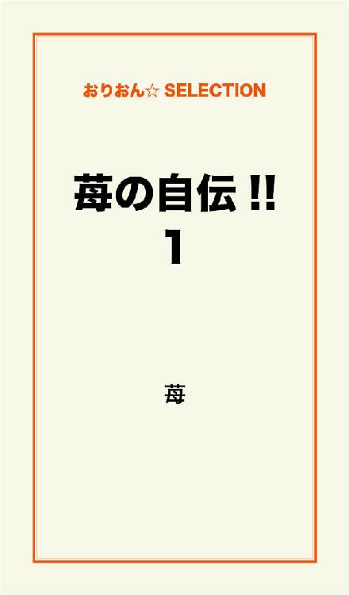
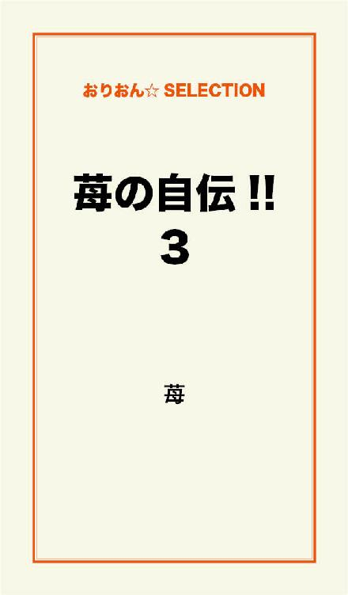

| 苺の自伝!! 完全版 | |
| 苺 | |
この本は横書きでレイアウトされています。
また、ご覧になる機種により、表示の差が認められることがあります。

昭和40年、京都市内に誕生する。身体も丈夫で健康な男児に生まれた。
家庭は、両親と兄の4人、貧しくもなく金持ちでもなかった。家の辺りには野原や空き地が多く、木造住宅が主流で、『マンション』なんて言葉はまだなく、原始的な遊びをしていた。テレビは小さなタンスくらいの大きさで、画面は14インチだった。チャンネルはガチャガャチャと左右にで回す奴で、白黒しかなかった。
夜の9時を過ぎると、街は静かになり真っ暗闇である。懐中電灯を持って歩かなければ、辺りは見えなかった。夜の店はスナックぐらいであり、コンビニなどはない時代である。
バスや電車の一区間の料金が10円（小人5円）で、5百円（まだ札であった）があれば、スーパーで贅沢な買い物が出来た。自販機なんて言葉すらなかった。
アスファルトに舗装されているのは大通りくらいで、車が通ると砂煙りが舞い上がっていた。と言っても、車が滅多に通らなかった。風呂がある家庭は少なく、銭湯が主だった。
因みに、我が家には風呂はあったが、シャワーと言う物はまだ我が国には存在していない。湯舟の湯を汚さない様に使ったものであった。
当然と言うか、携帯電話なんて夢の様な世界である。公衆電話を使用するには、10円玉をたくさん用意してからでないと困った事になるのだが、それも駅くらいにしかなかった。
何故なら、電話のない家庭も多かったのである。
肉と言えば鯨だった。今では食べるのは難しいが、硬くてあまり美味い物ではない。
キャシュカードなんてなくて、通帳と印鑑を持って銀行の窓口で出し入れしていた。
給料は全て手渡しだったから、次の日は、主婦達が預けに行くので、賑わっていた。
戦後、我が国の経済は回復していたが、まだまだその程度であった。
小学生になると、ヤンチャであった為に、席は教壇の横にされ、特別席だった。自慢できる話でもないが、僻がみもあったりした。そして、ある事件が起きた。
テレビのＣＭで『像が踏んでも壊れない』と言う、キャチフレーズの筆箱があり、それを愛用していた。そのＣＭとは『筆箱の上を像が踏んで行くが、筆箱は何ともないのである』プラッチクで出来ているのだが......。『あのＣＭでは、像が筆箱を踏んでも壊れないのだ』と思い、太っている女の子が先生に指名され、黒板に歩いて来る時。
歩いて来るタイミングを見計らい、筆箱を置き、実験を試みた。
見事に太っている女の子に踏ます事に成功したが、筆箱はビリビリ～、と壊れた。
「像が踏んでも壊れないのに、コイツが踏んだら壊れた～」と言ったら、女の子は泣き出した。また先生に怒られた。
家に帰り、母親にその事を告げると。母親は買って来た店に怒鳴り込みに行き
「像が踏んでも壊れない筈が、子供が踏んだら壊れた」と苦情を言って、新しい筆箱に交換して来てくれた。
それから2年後、この筆箱は廃止になった。
『半永久的』との唄い文句であったが、同じ様な被害が多数あったみたいである。この筆箱は角度によっては弱かったのだ!
この事件って、やはり俺が悪いのか!?
悪いのは、太ってるからでは......?
小学1年生の学芸会で、【白衛爺さん】と言う劇をしました。主役の白衛爺さんの役をしたかったが、地蔵の役になりました。地蔵の役には台詞がなく、あんかけをし、杖を持って立っているだけでした。(劇の間、ただ立って居るだけか......)ふざけるなっ、て感じです。
頭にきて、自分で台詞を作りました。
「白衛爺さん、鬼に追い掛けられているんですね。私の後ろに隠れなさい」とかです。
学芸会本番の事。台本と違うので、白衛爺さんの役の人は驚き「うわ～、地蔵が喋った～」と言って、尻餅をつきました。「鬼の奴ら、村の人を虐めやがって」と言って、地蔵役の俺は、杖で鬼を退治しました。最後は、「皆さん、さようなら～」と言って、手を振ると、幕が下りました。台本と違う事になり、終わって見れば、地蔵がヒーローでした。
後で先生に怒られました。
「何で地蔵が喋り、手を振るんだ」と。しかし、観に来てくれた方は大爆笑で、大喜びでした。素敵な劇だったと思います。やはり俺が悪いのでしょうか?
悪いのは、主役の白衛爺さんを遣らさない教師では......?
それから、『将来は大きくなったら何になりたい!?』と言う、作文がありました。殆どの生徒達は、パイロット、プロ野球選手、医者、歌手、総理大臣、お嫁さん等でした。
特になりたい事などなかったので、思いつきで『屋台のラーメン屋になりたい』と書いた。
先生に呼び出され「夢のある事を書いて下さい」と言われた。参観日に読まなければならない為である。その作文は、その日の宿題になった。しかし、なりたい事はなかった。
学校帰りに困り悩んでいると、看板に『チカンに気を付けましょう!』と書いてある。
それを見て、｢これにしょう」と思い、作文には、『大きくなったらチカンになりたい』と書いた。
次の日。宿題を提出した。その日、学校から帰ると、先生が家に訪問していた。
「私も長年教師をして来ましたが、この子にどう教育したらいいのか解りません」と言われました。50代の女の先生でした。
結局、俺だけ参観日の発表は無しになりました。これも俺が悪いのか!?
何になりたいかは本人の自由では......?
小学2年生の学芸会は合唱だったので残念でした。
この頃からでしょうか、見つめるだけでドキドキする可愛い子がいました。
美幸（仮名）にします。この子の前だと恥ずかしくて言葉が出ませんでした。振り返ればこれが初恋か......。出来る事と言えば、こっそりと美幸チャンの縦笛に口づけして、間接キスだ、と大喜びするだけでした。
この時期の小学生は、プロ野球の帽子を被ってました。阪神タイガースのファンが多い地区と思われがちですが、大阪や神戸でも巨人ファンは多いのです。クラスでは、巨人ファンと阪神ファンは半々でした。野球をして遊ぶ時、帽子を被っているので解りやすい為に、巨人VS阪神となります。俺は巨人ファンでした。人数はちょうど合うのですが、一人だけ大洋ホェールズ（現在の横浜ベイスターズ）のファンがいました。この方は何時も審判でした。大洋ファンの為に、野球は出来ませんでした。審判の為に必要な人材でありました。
二十歳の同窓会で会った時ですが、今はサラリーマンをしてまして、審判の免許を取得したそうです。休みの日はいい小遣い稼ぎになるそうです。
『これも皆のお陰だよ～』と喜んでいました。しかし、人生とは何が幸せで不幸せなのかは解りませんね。あの時、あいつに野球を一度もさせないで審判をさせていた事が、幸せを与えたんだと思った。
小遣いは1日20円だった。小学1年生の時は10円。母親からは、3年になったら30円にする、と言われていた。20円の小遣いで買える物は、駄菓子屋で5円のフーセンガム、10円のカレースナック菓子、20円のプロ野球選手のカードがオマケで付いているスナック菓子だ!
20円のフルタのセコイヤチョコレートが好きだったが、プロ野球選手のカードも集めていた。当たりが出ると、カードを入れるアルバムが貰えた。毎日どちらを買うか悩んだものである。本当は、30円で３００mlのビンのジュース、ミリンダーと言う、グレープ味も飲みたかったのである。しかし、20円では、セコイヤチョコレートかプロ野球選手付きのスナック菓子を選ぶしかなかった。そこで、ある発想を思い付いた。まず、5円でフーセンガムを買う。そして、細い木の枝の先にガムを着ける。そう、京都はお寺や神社が多いのである。『賽銭箱にはお金が落ちている』と考えた俺は、直ぐに実行した。何と、簡単にお金が取れるではないか!
好きな物を買う事が出来た。その事を友達に話、二人引き連れて試みた時の事。秋も深まる11月であった。神社の坊さんは、賽銭がなくなっているので警戒していたみたいであった。そして、賽銭箱を覗くと、いつも取っていたせいか、この日は少なかった。
そして、とうとう坊さんに見つかった。
「こらっ」と怒鳴り声と共に、坊さんは目の前に。友達の二人は逃げたが、賽銭に夢中になっていた俺は逃げ遅れた。慌てて逃げたが、ガムが靴の裏に着いてしまい、バランスを崩し、蹴つまずいて転んでしまった。万事休す。
「ほれ見ろ、罰が当たったんじゃ」と坊さんは言う。坊さんの履いている高い下駄に蹴りを入れると、「わ～」と悲鳴をあげて倒れた。今だ、と思い、全速力で逃げた。
見事に逃げ切った。次回からは犯行場所を変えなければ、と思った。
次の日。
「最近、賽銭泥棒をする人がいるみたいですが、このクラスには居ませんよね。悪い事をすれば、必ず地獄に行きます。神様はちゃんと見ています」と先生から話があった。
そして、学校から帰ると、バレていた。何故バレたかと言うと、母親の手編みのセーターが特種であった為に、目立ってしまっていたのである。悪事がバレてしまい。親に怒られ、寒い夜に家を追い出されてしまいました。
明日は遠足で某駅に集合である。『先に駅に行っていたらいいんだ』と思い、駅のベンチで寝る事に。少し寒いが、グッスリと寝れました。
しかし、親は1時間程して、外を見ると、何処にも見当たらないので警察に捜索願いを出していた。親としては反省させたかったんだろう。明日の遠足の楽しい夢を見ていた。
そんな熟睡中に起こされた。目の前には親父がいた。
「こんな寒い中で何してんだ。心配してるから早く帰ろう......」
優しかった。家に帰ると、母親に抱きしめられた。そして、次の日から、小遣いは50円になった。賽銭泥棒防止の為か!?
後に知ったのだが。
『この子にはどう教育したらいいのか』と両親は、たいへん悩んだそうだ。
そして賽銭泥棒は辞めたが、新しい事を考えることにし、今回の失敗を良い経験にする事にした。やがて小学生3年生になり、大好きな美幸チャンとはクラスが別になった。でも、頭の中は美幸色であった。
秋の学芸会は残念ながら合唱だった。そして、新たな発想とは、またもやガムであった。
この当時、千円札が使える自販機が出回ったのである。それ迄は10円玉しか使えなくて、10円玉を料金ちょっきり持ってないと買う事が出来なくて、返却レバーと言う機能もなかったのである。百円の煙草を買うのに10円足りなければ、90円は自販機に記憶されたままであり、返却されないのであった。10円玉は貴重なお金でありました。返却口が今までなかったので、まだ慣れてない方が多く、お釣りを忘れる方が多かった。
そこで、タバコの自販機の返却口にガムを伸ばし、お釣りが引っ掛かる様に仕掛けて見た。
しかし、この当時の人は釣銭を数えるので、苦情を言う人が多く、いいアイディアではあったが、成功したのはほんの僅かであった。
※注意（賽銭も自販機の返却口にガムも、これは立派な犯罪です。絶対に真似はしないで下さいね!）
我が国日本はまだ貧しかったが、この時期から経済が急成長し出した。殆どの家庭がカラーテレビに替わり、白黒テレビだと笑われる様になっていた。長島茂雄が巨人軍を引退した年でもあった。悪事も引退し、リトルリーグ（野球）を始める事に。頭はこの時から丸坊主で、野球で明け暮れる事がいい方向に。
将来の夢として、作文にはプロ野球選手、とでも書けば良かったのだろうけど、プロなんて無理だと謙虚に考えていた。冷静に自分を分析し、判断していたんだと思う。ある意味、正直者で素直だと言えるのかも?
あの時から、既に作文とは楽しく書く物だと思っていた。
今も変わってなく、小説とは、楽しく描く物だと思ってます。3、4年の担任の先生は、教師1年目の24歳、綺麗で優しい女の先生であった。そして、4年生の学芸会は劇になった。タイトルは忘れてたが、ネズミが逃げて行くシーンがあり、年老いたネズミの役だった。一匹だけ逃げ遅れる役であり、台詞は一つだけど、やけに長くて覚えきれなかった。
舞台の端から端まで杖をつきながら歩く役である。主役ではない。
「この劇では、主役より1番の見せ所であり、1番盛り上げる所になるのよ。この役が出来るのは君しかいないのよ」先生はそう言った。
きっと、小学1年生の出来事を申し送られ、考えての事だと思った。しかし、それだけでは物足りなく感じていた。
そして劇は始まり、出番の時が来た。誰とも会話はなく、ゆっくり一人で杖をつき歩きながら二回転倒するのである。その間、永遠と長い台詞を言うのである。ある意味、ワンマンショーでもある。しかし、本番直前迄に、台詞を全部覚えきれてなかった。だが、一人舞台なんだから好きな様に遣ればいいと思った。
間寛平のギャグをした。
「まいど～」「わしはカルシウムが足りひんのんじゃ～」と言って、体をクネクネとした。
これは思った以上に爆笑で、浚にエスカレートしてしまい、杖で回りの物を壊した。
(会場は大爆笑のうずではないか!?）
全ての舞台セットを杖で壊した。約1分の予定でしたが、20分くらい演じた為に、劇は時間延長になった。辺りの物が壊れていて、このあと劇にはならなかった。
「そこまで遣らなくても......、よく頑張ったね」と誉めてくれた。とても優しい先生でした。
そして5年生となり、担任は1年目の若い男性の先生になりました。
クラス替えがあり、美幸チャンと同じクラスに。美幸チャンも2年間で成長していて、少し胸が膨らんでいた。目を合わすだけで、ドキドキしてしまい、相変わらずだった。
この時期、日本は高度経済の波に乗り、急激に景気は良くなり、私道もアスファルトになり、マンション、と言う言葉も誕生した。
小遣いも1日１００円になった。野球に夢中になり、勉強は出来なく劣等生であった為に、親は何か身に付けさそうと色んな習い事に行かされたが、何もならなかった。
唯一、5才から習っていたピアノが小学5年生まで続いていたが、やっとの事でバイエルが卒業できた。
※ピアノを習った事がある方ならお分かりだと思いますが、普通、バイエルは1ヶ月で卒業です。俺は5年以上かかった。残念な事に、5、6年生の学芸会は合唱だった。
【再生5th（青春の海）】を読んでくれた方は知っているでしょうが、実話も少し入っていたのです。
クラスには、色白で透き通る様な綺麗な美少女がいました。美紀（仮名）とします。
大人しく、目立たなくて男子からも全く人気はなかった。友達もいなくて、いつも一人だった。学校を帰る時も人目を気にして、避ける様にして帰っていた。
その事は後で解ったのだが、某川が学区内の区切りになっていて、美紀の家は隣の学区内であった。その川沿いには30件位の同和集落があった。同じ学区内だと直ぐに解るので、その子供達は隣の小学校に静かに通っていたのであった。しかし、小学5年生ともなると、侵しな事に気付き出していた。クラスの誰もが美紀の家を知らない。
誰かが気になり尾行したことで解ってしまい、噂になり出した。
「風呂もない小屋の様な家だったぜ～」そんな噂が広まった。同和の子供達は他人とは付き合わなかったのだ。美紀は、いつからか学校には来ていなかった。
1ヶ月以上は経っただろうか。（その間、担任の先生は何度も美紀の家に訪問していた）
そして、ホームルームの時間にその話があった。
「皆、美紀さんが最近学校に来ていないのは知ってるな!?」
先生の言葉にクラス中は、シーンと静まる。
「美紀さんの家がどうだとか、家庭がどうだとか、本人はそこで生まれただけのだろ。何の責任も罪もない事だろ!?」
先生は力強く吠えた。そこで、クラスでも秀才の男子生徒が。
「先生、美紀さんは学区内と違いますよ。何でこの学校に来るのですか!?」と言った。
クラス中の生徒は騒ぎ出した。
「そうだ、そうだ、ちゃんと指定されたエリアの学校に行くべきだ!」後押しする。
「それは、そう言う家庭だと言う事を知られない様に、親が心配して安全に学校に通わそうと思っての事なんだ!」
「じゃ、俺も何処のエリアの学校にでも行けるって事か!?」
また秀才は噛み付く。
「あのな、美紀さんは可哀相なんだから。クラスメートで見守ってあげる優しさを持って欲しい」先生は情けをぶつけて来る。
「そんなん逆差別になる」秀才は理論で返す。
「そんな事言うなよ......」先生は困ってしまった。
※この問題は、ＰＴＡでも『あそこの集落はエリア内の学校に行くべきだ』と抗議中でもあった。
最終的に、この問題の解決策は見つからず、美紀さんに学校に出て来る様に、手紙を書く事になった。
俺も手紙を書いた。
『いつまでも甘えてるな、早く出て来い』とだけ書いた。
しかし、この手紙が思わぬ展開に。それから3日後。
美紀は学校に来る様になっていた。だからって、何の変化もなかった。5年生の3学期も間もなく終わりに近付き、春休みが待ち遠しい頃、近所の子とキャチボールをしていた。
その時、ボールが川に落ちてしまった。ボールくらい良かったのだが、拾いに行く事にした。1キロほど下流に行けば土手から拾う事が出来るので、話をしながら向かった。そして、ボールを拾った帰り道。同和集落を通ると、子供達が遊んでいた。
女の子達10人程でゴム跳びをしていた。その中には、美紀もいた。美紀が声を掛けて来た。学校では見たこともない明るい笑顔で。
「何でこんな所に?」
「ボールが川に落ちて追い掛けて来たんだ!」
「もう帰るの?」
「そろそろ時間だし......」
夕方の4時頃だった。
「少し遊んで行かない?」
「少し位なら......」
そして、俺と近所の子も一緒に遊んだ。女の子の遊びも楽しく感じていた。
夕方6時過ぎ、夕日が消えた頃。辺りも暗くなり、各家庭の電気も燈され出していた。
帰りかけの時、美紀のお父さんが帰って来た。
「お父さん、お帰り」と言って、妹や近所の子供達は喜んでいる。
「今日は銭湯に行くぞ」とお父さんが言うと、子供達は大喜びである。
「また遊ぼうね」と美紀が言うと。
「誰だあの子は!?」お父さんは厳しい口調で言う。
「同じクラスなの......」
「今度から付き合うな」と言っている。
俺と近所の子は帰る。そして、三学期も最後の授業が終わり、美紀に誘われ、放課後の校庭で遊んでいた。やがて下校の時間が近付き、校庭には二人きりになっていた。
「まさか私の事が好きだなんて......」
美紀は小さく早口で言うが、意味が理解出来ない。
｢......?｣
「学校に行きたくなったの......」
「......?」
「あんな手紙を貰うなんて......、私も好きよ」
「て、手紙......?」
「うん、あれってラブレター?」
（手紙って、もしかして、皆で出した時のことか!?）
この時、美紀は目を閉じて、こちらを向いていた。急に全身が熱くなり、身体が震えているのも気付いていなかった。どうしていいのか解らずに、唇を尖らせて、美紀の唇に。
ファーストキスであった。女の唇って、ソフトで優しいもんだと感じた。お互いの唇は濡れてきて、甘酸っぱいレモンの味がした。
しかし、重なった唇を、この後どうすればと迷っていると、自然に唇が離れ、ヨダレが垂れていた。お互い目が合う度に照れてしまい。俯いては、こっそり相手の顔色を伺っていた。三月の夕暮れの冷たい風が心地良く感じる位に、身体が熱くなっていた。二人の間には、微かに風の音が聞こえていた。ほんの一瞬、一秒の出来事が、何時間にも感じられていた。かわす言葉もなく、俯いていた。
「お～い、下校の時間だぞ～」
用務員のおじさんの声で、ようやく歩き出すことに。
「明日の終業式の後、また遊ぼうね」
「うん、もう6年生だね。じゃ、また明日」
この時、美幸チャンの事は頭になかった。美紀の事を、好きになっていたんだと思う。
そして、終業式の放課後。誰も居なくなった教室に、二人きりになった。美紀は笑顔を見せた後、直ぐに悲しい顔になり、「後ろを向いて」と言った。後ろを振り向くと。
ハート型のペンダントを首に巻き付けてくれた。振り返ると、泣きながら俺の胸に。
「私......、遠くに引越してしまうの」
「えっ、遠くって、何処に......?」
「随分と遠くに......」
「もう会えないの!?」
「ありがとう。さようなら......」
そう言うと、美紀は走り去って行った。
それから三日後。美紀から手紙が届いていた。返信先は書かれていなかったが、消印は東京都品川区になっていた。手紙とチリガミが入っていた。チリガミの中には、四つ葉のクロバーが入っていた。手紙には『ありがとう』の言葉が......。それ以来、一度も美紀とは会ってもいないし、連絡もない。
これが『純愛』なのかも......。愛し合っていても結ばれてはイケない。愛し合っているからこそ、別れなければイケない愛もあるんだと......。
【再生5th（青春の海）】では、これをアレンジしました。
6年生の間は、美幸チャンの事は頭になく、また美紀と会える様な気がしていた。美幸チャンには他に好きな人がいたが、その好きな人は私学の中学校に行く事になり、俺も美幸チャンも同じ中学になる。クラスには、加代子（仮名）がいて、卒業間近に、「記念に何か書いて」と言って、ノートを持って来た。今でもそうですが、文章が上手くなく、これで問題を起こしてしまう。『何でそんなこと書き間違えるんや』と。
でも、そんな人がいるもんです。
『中学生になっても同じクラスになりたいね』
記念のノートに書いた。これを『好き』と勘違いされていた。それからは何事もなく、無事に小学校を卒業して行く。
中学生になり、何故か加代子と同じクラスになってしまった。
「同じクラスになれて良かったね」
加代子の母親から、からかわれる始末である。そして、加代子と席が隣になってしまい。何故か『交換日記』とやらを始めてしまう。お互い日記を交合に書くのである。二人だけの秘密だけど、恋人ではないと思っていた。
未だに誰にも言ってない事がある。英語の教師もマヌケなのか、まだテストの採点付けをしてないのに、点数だけ付いたテスト用紙を返し、テストの答え合わせをした。そして集めた。教師は時間がなかったそうである。まさかまた集めるとは思わなかった俺は、テストの答えを直し、バツを丸にして、10点を１００点にしていた。テスト用紙を集める、と言うが、10点が１００点になっている俺のテスト用紙も集められた。このテストの平均点数は38点で、比較的難しい問題であった。その中で１００点だから、中学1年の2学期は、英語が5段階の成績表で1番いい5であった。
「今回は英語頑張ったんだね」と親は喜んでいた。
暫くして、英語の教師は、「遣れば出来るんだな～」と誉めてくれた。
この事は誰にも言えませんでした。
全てこんなシステムなら、俺は秀才か!?
中学生になっても野球に熱中し、特に大きな変化はなかった。加代子とは交換日記だけで、進展もないまま2年生に。しかし、また加代子と同じクラスになってしまった。それよりも、嬉しい事に美幸チャンと同じクラスになったのである。チャンスは訪れたのだ。小学生の時に好きだった奴とはもう何でもない、と噂で聞いる。
中学2年生になり、浚にいい女になっている。小学生の時は、同じクラスでも殆ど話す事はなかったが、何故か美幸チャンからよく話掛けて来た。これはひょっとして、と心の何処かで思っていた。何だか毎日が楽しくなって来ていた。加代子の事はどうでもよかった。
クラスではコーヒー屋さんでした。と言っても、お金は取ってません。休み時間に作って飲んていたので、飲みたい方には作ってあげました。学校では禁止だったと思う。
そして、理科の実験の時、水はどれだけ熱しても百度を超えない、と言う実験をした。
この時、俺はビーカーにインスタントコーヒーをこっそり入れました。
同じ班の女生徒達は、「先生、百度は超えませんが、真っ黒になります～」と言う。
この理科の教師は偏屈な人でした。東大の法学部と教育学部を卒業していて、2回東大を出た、と自慢する人でした。先生は疑問に感じたのか、授業を忘れ、顕微鏡とリトマス紙などで検査を始めた。やがて終業のベルが鳴るが、熱中している。「先生、もう時間ですよ」と生徒達は言うが、もう既に10分は過ぎている。
次の授業が......。
そして。「解った。これはコーヒーだ!」
先生は、見事に当てました。クラスでは、犯人は誰もが俺だと思っていただろう......。
教室に戻ると、社会科の先生がウロウロしていた。そして、また理科の時間に実験と言って、液体と液体を混ぜるとどうなるか、と言う実験をする事に。この教師は、何故か教科書には書いてない事を試すのである。その実験中に、突然爆発したのである。生徒達には怪我人は出なかったが、先生は火傷をし、机がバラバラになった。先生には、机の弁償となった。
「こうして発明が生まれる」と先生は言っていたが......。
この年だったと思います。当時は興味なかったのですが、18禁と言うのが官能小説に付けられました。官能小説以外のジャンルの作家達も、「漫画ならまだ解るが、文章だけの小説に」と怒りを抑え切れなかったのです。官能小説ばかりが売れた時代でしたから、社会問題に発展したのです。学校帰り、古本がゴミ置場に出されていて、同級生3人がゴミ置場から古本を取り出して読んでました。「これ凄い」と言って、官能小説を薦めて来たのです。
読んで見ましたが、1ページで気分が悪くなりました。「エロ本より小説の方が凄いのに!?」友言われたが、エロ本は好きだったが、小説は興味なかった。官能小説が出回っていた時代だったと思います。それだけブレイクしたから、青少年に悪影響を与える、と抗議が起こったのです。殆どが主婦でした。
「こんなの子供が見たらどうなるか!?」と言うことでした。
『表現の自由』を、作家達は主張しました。「何で文章だけで18禁になるのだ!」と。
しかし、最終的には作家達は折れました。
「18禁指定にすれば納得行くなら付けさして遣ればいい、読みたい人は読むのだから......」
と言うことでした。
何故かと言うと、この当時の小説の読者は、主婦が圧倒的に多かったのである。読者を敵に回せなかったのである。
それから5年の月日が流れ、サスペンスの時代が来ました。小説は、サスペンスばかりが売れました。「サスペンスは18禁だ!」また主婦達は騒ぎました。しかし、流石にサスペンスは18禁を止めました。当然です。官能小説、そしてサスペンスを18禁に認めたら、どんどんエスカレートして行きます。
やがて、全てのジャンルに影響します。
どんなジャンルに於いてもそうですが、作家にとって表現が難しくなります。色んな表現があるから豊かなので、そもそも小説とは、想像を楽しむ物であり、読者にとっても自分に限りなく合った作品に出会える可能性が高くなり、人生が楽しい物になる筈なのだが。
しかし、何時の時代でも主婦は、子供を守る為、と言います。
でも、よく考えて欲しいのは、規制が掛かれば『表現の自由』がなくなります。これがなければ作家は何も描けなくなります。『表現の自由』がなければ誰も描きませんよ。
それでも描く人がいれば、精神的に問題がある人です。どんな文章でも、人によっては悪影響になるのです。悪影響を与えない作品なんて、この世にないのですから......。
官能小説が18禁になりましたが、そもそも青少年に悪影響を与えるなんて、何の根拠もないのですが......。人それぞれ個人差があります。それが人間なんです。
『子供を守る』と言うより、成長を止めてると、考えられます。18才未満でも、興味を持った時がその時で、何才になろうとも興味のない人には悪影響なんです。そもそも、18才の線引き自体がアバウトでは?
人間は進化し続けています。人の考え方や物の見方も違って来て当たり前だと思います。
18禁の法律自体がアバウトに定められましたから。『18才がそこに到達するのが一番多い』と言う事で決まった法律ですから。実にいい加減な法律である。
しかも、男は18才、女は16才で結婚を認めています。では、16才で結婚した女性はアダルトビデオ観てはいけない、と言う事になり、旦那とSEXしてはイケないみたいです。
不思議な事に、18才未満がＳＥＸしてはいけない法律はありません。しかも、男女平等ではないじゃないか!?
この理由は、男性が子供を養うのに経済力が必要、との事ですが、あまりにも侵しな話で。
16才の男性が、経済力のあるキャリアウーマンと結婚してもいいのでは? と思います。
それに、この世の中、小学生でも経済力がある方もいますし、成人しても経済力がない方も多いです。人を年齢で線引きする事は間違いですし、多くの矛盾が生じます。
此処までは正論でしょうが、多くの作家達は封印してしまいました。何故なら、多くの女性を敵に回すからです。世の多くの女性は、子供を持つ主婦になるからです。知っておいて欲しいと思ったので書きましたが、気分が悪くなった方は聞き流して下さい。やはり、多くの女性を敵に回す事は出来ません。これが作家の本音なんです。
そして現在（いま）、携帯電話が一人一台が当たり前の時代になり、メール機能が発達し、携帯小説の時代が来ました。こんな時代が来るとは夢の世界でした。
今となっては、官能小説を18禁にしたのは、悔いに残る事になりました。未成年が観覧できるから、携帯小説での表現が難しくなるからです。この当時はそこまで考えていなかったのです。
成績が良くないので塾に通わされる事になった。そこで、あるヒントが浮かんだ。
その考えとは、塾は辞めてしまい、塾の月謝袋とハンコを作り、塾の月謝を小遣いにするのである。いいアイディアである。塾に行ってる時間帯は、両親でスナックを経営している友達の家に遊びに行っていた。妹と二人なので歓迎された。話す事は女の事ばかりだった。
この当時、インベーダーゲームがブレイクしていて、夢中になる方も多く、1回百円では直ぐに数千円になる。そこで編み出した技は、5円玉をセロテープで2回巻くと、百円玉のサイズになる。少し軽いが試して見ると、百円とカウントされるではないか!
※注（これは犯罪になりますので、絶対に真似しないで下さいね!）
塾の月謝代は、インベーダーゲームが上手くなっただけだった。インベーダーゲームもいいが、美幸チャンも攻略しなければ......、と思っていた。複雑な気持ちにもなっていた。
体育の時間、体育館で跳び箱だった。女子も隣で跳び箱をしていた。
陸上部で、足が早くてスレンダーバディな美幸チャンは、綺麗に跳び箱を飛ぶ姿が美しい。
しかし、バレー部だけど太っていて、ボインでお尻の大きい加代子は、跳び箱を飛ぶ気があるのかないのか知らないが、跳び箱の上に大きなお尻を乗せているだけである。
あれでは跳び箱も可哀相ではないか!
しかし不思議な事に、跳び箱にボ～ンと乗るだけの加代子を見ていると、可愛くも見えて来ていた。複雑な気持ちになったまま2年生も終わった。10クラス以上あるので確率的には考え難いのだが、加代子も美幸チャンも3年生でも同じクラスになった。
最悪なのは、担任の先生があの理科の教師であった。あの教師だけは担任にはなりたくない、と誰もが思っていた筈である。
中学3年生になり、美幸チャンは女らしく益々綺麗になり、狙っている奴も多かったと思う。中学2年生の時、美幸チャンからバレンタインチョコを貰ったが、あれは完全なる義理である。手紙には、『何時もコーヒーをありがとう♪』と書いてあった。
切ない......。早く大人になりたい、と加代子は言うが、これは俺達の事であり、大人の恋に、と言う事なんだろうか?
大人の恋は憧れるし、やる事も遣りたい。若いエネルギーは爆発したいが、この当時は今と違い、情報は少なかった。ビデオデッキが出だした時期で、殆どの家庭ではまだなく、ＡＶビデオなんて一本1万7千円の時代である。ビデオがない時代だが、深夜にかなり凄い番組があった。後に、ビデオが世間に出回った関係で、録画が出来る為、青少年の育成に良くないって事で、楽しい深夜番組はなくなった。研究の為に、こっそり観ていたが、いつ家族にその姿を見られるか分からない。
しかし、この時期からスポーツニュースが始まり、誤魔化すことが出来たのである。
深夜番組をこっそり見ていて親父が起きて来ても、チャンネルを素早く変えると、スポーツニュースである。
「あ～、中畑、ここで三振とは、絶不調か......」
この様に誤魔化せるので、安心であった。
中学3年生の4月。4時間目の英語の授業で事件が起こった。
この話も【青春の海】でアレンジして描きましたが、実話はこうです。クラスで1番の秀才の美穂（仮名）二番の恵子（仮名）がいた。二人ともルクスも良く、人気もあった。
クラスでも、俺の次にお調子者の三田（仮名）の男がいた。この三田は、恵子が好きなみたいであった。相撲部の太田（仮名）は、美穂の事が好きなのは有名であったが、美穂からは嫌われていた。
そして、恵子の鞄に無記名のラブレターが入っていた。この事が公になったのは、三田が言い触らしたからである。しかも、そのラブレターは俺が出した、とだ。そんな物出してないし、三田が何の根拠で俺だと......?
しかし許せん。
それからは、いつも三田を虐めていると、誰かが告げ口したみたいで、先生に呼び出された。この偏屈な理科の教師の担任は、ノコギリを持ち、待ち構えていた。ノコギリを俺に向けて、「俺の言う事を聞けないなら、怖い先生を呼んで来るぞ～」そう脅かす。コイツは阿呆か!?
俺は三田の事を話すと、恵子を呼び出して、ラブレターチェックが始まった。顕微鏡を使い、筆跡チェックしたそうだ。その結果。
「誰がこのラブレターを出したか解った～」と言っている。
俺でも三田でもなかった。誰かとは言わなかったが、女の子の間で、筆跡を調べて解ったそうだ。誰かを教えてくれた。
大人しい奴で、恐らくバレてしまった事は、本人だけが知らなかったのでは?
しかし、こんな事で盛り上がる季節だったのだろう。加代子と交換日記をしているので、ラブレターを見て、俺ではない事は直ぐに解ったそうだ。この事件で少し焦ったのか、美幸チャンにラブレターを出した。直接本人に渡した。
内容は。『真夏の太陽に向かって咲く、向日葵の花の様な可愛いい笑顔が好き。
小鳥の様な愛らしい笑い声が好き。真っ赤な薔薇の花の様な綺麗な瞳が好き。美幸が好き。
とても好き。美幸を抱きしめたいけど』と言う内容の、人生初のラブレターである。
美幸チャンにラブレターを渡した次の日、ソワソワとして落ち付かなかった。問題の4時間目の英語の時間、寝てしまっていた。チャイムが鳴る音で目覚めると、何やら騒がしかった。英語の教師は何やら厳しい顔をして、相撲部の太田に一言二言いって、教室を出て行った。美幸チャンは、肩を押さえて泣いている。急に怒りを感じ、太田に殴り掛かっていた。数人が直ぐに止めに入った。と言うか、クラスでも嫌われていた太田に止めに入った連中は。
「ヤメロ、ヤメロ」と言いながら、太田を殴っていた。
ある意味助かったかも。間ともに遣り合った所で太田に勝てる訳がない。太田はかなりの打撲であり、そのまま帰った。それから、太田はクラスで孤立してしまった。その日の夕方、美幸チャンから電話があった。
「小学生の時はそうでもなかったけど、私も好きよ」と言われ、付き合いが始まった。
加代子との交換日記は続いていたが、それだけだった。美幸チャンはごく普通の家庭で、成績は中の中位である。
（【青春の海】は、あくまでアレンジしたフィクションです）
初めて美幸チャンの家に遊びに行った時のこと。渡したラブレターを取り出して来た。
「これ、変だよ。何だか可笑しいけど」と言う。
「恥ずかしながら一生懸命に書いたんだよ!」
「貴方らしいと言えば、貴方らしいけど......」
美幸チャンが封筒の中から出したレターは、俺が出したレター用紙と違う。それを見せて貰うと、俺が書いた物と違ってる。直ぐに犯人は解った。
この字は、親父の字である。いつの間に中身が変わったのだ。しかも内容が、自己紹介として身長や体重や趣味などが書いてある。そら美幸チャンも変だと思うわな。
親父に問い質すと。
「あんなラブレターではアカン。だから直して遣った」と言う。
そして、仕方なく美幸チャンにラブレターを新たに書いたが、何故か美幸チャンは前のラブレターの方が素敵と言う。女心とは微妙である。
でも、そんな事はどうでも良かった。小学2年生の頃からの初恋は実ったのである。
夏休みに2人でロックバンドのライブに行った時のことである。京都会館第1ホール前ではアベックの姿が多く、自然に俺達も肩を組んでいた。見知らぬ人が見ても、仲のいい恋人に見えたと思う。テレビで良く拝見する歌手だが、生で観るライブは迫力も感動も一味違っていた。（こんなに熱くさせてくれるとは......）
心にビンビンと響いて来る。ロックンロールとは、人をハッピーにさせてくれるのだと知った。美幸チャンも全身で音を感じていた。やがてライブが終わると、まだ体中に余韻が残っていた。
喫茶店に寄ると、クレープと言う物があった。この当時まだ珍しい物である。
どんな物かと思い注文して見たら、チョコレートがたっぷり入っていて、この甘さは二人を浚に幸せにしてくれた。興奮状態の二人は恥ずかしさを忘れていた。
「今夜、友達の所に泊まる、って電話して来た」と言う。
俺も家に電話した、友達の所に泊まる、と。
今夜は熱帯夜で、ライブで盛り上がったこともあり、シャツはびしょ濡れになっていた。
ライブの興奮も冷めず、今夜は寝れそうにもない。
喫茶店を出て、円山公園を歩いた。アベック達の激し光景ばかりで、二人は恥ずかしくなった。
「もう行こう......」
「......、あっ、そっ、そうだな......」
あてもないまま歩き回っていた。
やがて二人は歩き疲れ、見渡せば華やかなネオンの明かりには、空室の文字が......。
「どんな物か知っておいた方がいいね?」
美幸チャンは真っ赤な顔をして、俯いたままだった。肩を抱き寄せて進むと、中は薄暗く、窓口がありる。お金を払うと、部屋のキーを渡された。エレベーターで言われた階へ行き、辺りを見渡すと、薄暗いローカには、セクシャルバイオレットのフラッシュが点滅していた。キーナンバーの部屋のドアを開けると、初めて見るその部屋は、ギラギラとした異次元空間を感じさせる。
ベッドは丸くて落ち着かない感じで、とても眠れそうにない感じである。浴室はアメリカンスタイルで、浅くて長い。映画で観た事があり、一度利用してみたい、と思っていたので、嬉しい。
「お風呂、先に入ったら」と言う。
美幸チャンは、よほど汗ばんでいたからだと思った。
「いや、先にどうぞ」と言っても、いやみたいなので、仕方なく先に入った。
一緒には、俺も抵抗があった。
その後、テレビを観ていたが、少し眠気がさして来た。それよりも、浴衣姿の胸の谷間が気になってしまい、見ないでおこうと思っても、目が谷間へと......。
時刻は深夜11時を過ぎた頃。話し疲れ、二人はベッドへ。電気を消すと、ピンクと紫色の微かなライトだけに......。部屋は静かになり、エアコンの音が響く。そこは二人だけの世界だった。
さりげなく身体を寄せると、美幸チャンのバディに触れてしまい、生唾を呑む音が聞こえる。腕を広げると、美幸チャンの腕が......。手を合わせると、握り返して来た。
俺は上半身起き上がり、寝ている美幸チャンの唇に、初めて重ねた。静かな愛の部屋中で、胸の鼓動が微かに聞こえていた。美幸チャンの呼吸は激しく荒くなり、自然に身体は大の字に。甘い夜の時間が流れ、大人になった喜びを感じていた。朝になり、シーツには真紅の薔薇の花が出来ていた。
やがて夏休みも終わり、高校受験を意識し出していた。そろそろ塾の件もバレそうだと思っていた。
「家庭教師の方が苦手な所とかも出来るので、塾より効率がいいから」と言って、家庭教師に来て貰うことにし、勉学に励んだ。これまでは、数学は5であったが、後は全て1であり、完全なる劣等生であった。1年の2学期だけは、ハットトリックで英語が5になっただけだった。かなり真剣にこの時だけは勉強をした。その成果は出て、オール3にまでになった。
冬休みに入り、美幸チャンと初詣でに北野天満宮（学問の神様）へ。神頼み等はどうでもいが、美幸チャンの肌と心に触れたかったのである。小学生の時から特に夢などなかった。
この時も、将来の事は何も考えてないと言うか、大きな夢はなかった。もう少し考えてみたいし、高校へは行って見ようと考えていた。お参りをし、帰りに公園で将来の事を話し合っていた。美幸チャンは将来の事を、ちゃんと考えていた。俺はと言えば、美幸チャンと結婚しなければイケない物だと考えていた。あの夏休みの出来事は、誓いあったのだと考えていた。
やがて西の空には、真っ赤な夕日が泣いていた。寒空の下、冬の公園には、冷たい風が吹き荒れていた。手を握り、口付けを交わすと、帰りたくなくなっていた。
「もうそろそろ帰らなくては......?」
「何でそんな事を言うの?」
「......」
「もう少しだけ一緒にいたい......」
やがて夕日は消え、夜空には無数の星達が、微笑でいる様に輝いていた。帰ろう、と言う言葉を、どちらが次に言うか賭けていた。いま思えば、こんな出来事が幸せな時間だった、と。何もかも素直になれた、あの頃が......。
「後もう10分だけ一緒にいよう......」
この10分が、10秒に感じられた。『純愛』とは、こんな事の様な気がします。今でも、夏休みのライブとこの日の出来事は、心から消える事はありません。忘れられない眩しい思い出とは、流れ星の様に、一瞬なのかも知れません。ただそれだけに切ない......。
3学期に入り、誰がそうだったでしょうけど、受験前はピリピリしていたと思います。別に何処でもいいと考えてたので、無難に三流の私学の高校に受験した。試験のテストは答え合わせをすると、合格点数は楽勝だったので、安心していた。そして面接と言う物があった。歩き方や椅子に座っている時の姿勢などは十分に練習して来ていた。質問の受け答えも練習して来ていたが、全くその意味はないに等しい質問ばかりであった。
「貴方は、人が生きて行く為には、何が必要だと思いますか?」
（なっ、なに。何だこれは......?）一瞬、言葉に詰まった。
「信じる事が必要です」と答えた。
「それで人が生きて行けるのですか!?」微笑しながら言われた。
「はい。生きて行くと言っても、人はいつか死ぬものですから、自分自身を信じる事と、人との信頼関係が必要です」
「あっ、はははは......」笑うではないか。
「......」
「初めてだな。全員に聞いているのだが、みんな食糧とか、そう言った答えだが......」
「......」
「では、君にとって、この世で1番美しい物とは何ですか?」
「愛です」
「あっ、あっ、愛、愛、愛。あっ、はっ、はははは......」
大笑いしている。
「......」
「愛が美しいですか?」
「はい!」
「みんなダイヤモンドとか夜空の星とか言うけど、君は愛ですか!?」
「はい!」
「愛は美しいですか!?」
「心の中で一生輝き続けるもんだと思います」
「君にとって、今迄どんな愛がありましたか?」
「両親からの愛を感じています」
「親の事は好きですか?」
「はい!」
「君にはもっと聞きたい事がありますが、時間ですからもういいですよ!」
緊張した面接も終わったが、なんかシックリいかなかった。
合格発表の日が来た。（合格に決まってるんだから、邪魔くさいな......）
そう思いながら見に行くと、俺の受験番号がない。何かの間違いだと思ったが、不合格である。（何故だ、やはり問題は面接か、それしか考えられない）
仕方がない、気分を取り直して公立を受験する事に。（美幸チャンも受験するし、また高校生活も一緒に過ごす事になるかも）
そんな風に考えていた。
受験も終わり、一緒に合格発表を見に行った。残念な事に、二人とも不合格であり、残念会をした。美幸チャンは私学が合格していたので、私学の高校に行く。俺は別にいいか、って感じだった。
この時、5才年上の兄が、喫茶店経営を始めたばかりで楽しそうだった。手伝う事にした。
その後、美幸チャンとの付き合いは続いていたが、自然と会う機会も少なくなり、少しづつ遠ざかる様になっていた。それとオマケで、中学生時代にもう一つ事件があった。
俺は教科書を読む時、ジャイアント馬場の声で読んだりしたりしていたので、皆から何かをすると期待されていた。
2年生の時、音楽の時間に縦笛のテストがあった。練習して来てないので吹ける訳はない。
いつもの様にジョークで、縦笛を逆さに吹いて、笑いをとった。この大ボケで大爆笑になった。
「こちらから吹くのですか、家ではこちらから吹いて練習してました。だから音が出なかったんですね!?」と言った。
「貴方は何故いつもそうなんですか!?」教師1年目の若い女の先生は、泣いて出て行った。慌てて数人が職員室へ呼びに行き、戻っては来たが、無言でピアノを勝手に弾いていた。その日で、先生は教師を辞めた。これって、俺が辞めさせたの!?
イヴの前日。美幸チャンの友達、と言う方から電話があった。個人的には知らない人である。
「美幸がね。『一度別れよう』と言ってるの」
「......」
「『また縁があれば』と」
「......」
「『友達で居て欲しい』と」
「うん、解った」
きっと美幸チャンは、この事を伝えるのが、よほど辛かったから人に頼んだのだろう、と思った。別に好きな人が出来たのかも知れない。
それは仕方ない、嫌いになった訳ではないが、会っても話しが噛み合わなくなって来ていたから、別れる選択はお互い良い、と思えた。辛くもあったが、自分自身決心していたし、スッキリもしていたが、思い出が蘇ると、心残りもあった。
また縁があったら、その時はもっと大人に成長し、美幸チャンの心も体も抱きしめたい。
そんな風に、心で誓っていた。
次の日。喫茶店の仕事が終わり、帰る時、いつも昼休み時間に学校を抜け出して、店に来ている朱美と待ち合わせをしていた。
朱美は一つ年上だけど、随分と大人に感じていた。姉の様に優しくて、世話好きである。
その夜は居酒屋に行き、初めて酒を飲んだ。あまり美味いとは思わないが、雰囲気で呑んでしまい、酔いが回ると苦しくなり、歩くのも困難になった。
この当時、居酒屋も深夜2時迄の営業であり、24時間営業の店やカラオケボックスとか漫画喫茶などはなかった。フラフラになった俺を連れて、ラブホテルの前に来ていた。
「やっぱりイヴの夜だな......」朱美はそう言って、また引きずられ、またラブホテルの前に来た。
「此処は開いていると思ったのに」と呟く。
また移動した。
「やっぱり開いていた。此処はあまり綺麗じゃないけど、開いていて良かった」と言う。
自棄にホテルに詳しそうである。どうでもいいが、気分が悪いので、早く休みたかった。
朱美は、酔い潰れた俺を介護してくれた。少し横になり、2時間くらい経っただろうか、大分回復していた。
「経験あるの?」と聞かれた。
過去の経験を話すと、ヤキモチを妬いている様だ!
一緒に抱きしめ合い寝たが、一度だけ頬っぺたにキスをされただけである。朝まで寝ないで語り明かした。
今から思うと、朱美はこの夜、一緒に過ごしたかったのだろう。何もかも笑って許してくれる。そんなのだから、ついつい甘える様になっていた。
喫茶店の朝はモーニングセット、朝食の客で目眩がするほど忙しい。昼間はランチタイム。
その後、大学生のたまり場で賑わっていた。
中学を卒業して3年目を迎えていた。朱美からは多くを教わったし、心身共に充実していた。しかし、幸せな季節は思わぬ形で訪れた。
朱美には、年上の彼氏がいて、留学していた。その彼氏が10月に帰って来た。
そして、簡単に別れを告げられた。要するに、朱美は寂しいかったのだろう。その日は納得いかずに、朱美を恨みもした。考えて見れば、誰のせいでもない。自身の問題の様に感じた。次の日からは、少し成長した自分がいた。
18歳になって、今後の人生設計を真剣に考え出していた。
喫茶店も、この時期から儲からなくなりって来ました。ファミレス、ハンバーガーショプ、１８０円のコーヒーチェン店などのラッシュであった。やがて喫茶店の客は減り、廃業する事にした。親父の友達の経営する染物工場で働く事にした。着物を染める仕事である。
そして、春から定時制高校に通おうと思った。やはり将来を考えると、せめて高校は卒業しておこうと思った。自分と同学年だと、みんな卒業であったが、この年に高校生になった。
この春、3回立て続けて思わぬ珍事件に遭遇した。全て電車内での出来事でした。
1回目は、椅子に座っていると、隣の20代半ばと思われる女が、疲れているのか、俺の肩に頭を付けて寝ている。起こそうと思ったが、時間にして10分ほどで降りる事になる。
（それまでには起きるだろう）
もし起きなかったら、知らぬ顔して去ろうと思っていた。車内は満員だが、俺が座っている席は死角になっていて、他の乗客からは見えない。その時、女のバックが肩から下がり、俺の膝元へ。
そして、女の手は俺の身体を散歩し出した。
「あっ」と微かな声を出したと思う。その後、女に好きな様に遊ばれた。（しかし気持ちがいい）
「ウゥ......」
声が出てしまい、出る物も出ていた。
「ウッ、フッ、フフフ......」
笑って女は去って行った。辺りが臭うし、汚してしまい、気持ち悪くて歩き難い。
男として嬉しかったりもするが、襲われた気分でもある。しかし気持ち悪くて歩き難い。
この事は誰にも話さなかった。話したとしても信じて貰えそうにもないし、痴漢はいるだろうけど、逆は考え難い。自分で言うのも何だが、背がスラリと高く、ジャニーズ系であった。
そして、いつもの時刻に満員電車に乗っていた。
隅のコーナーに立っていた時、困った事に、ジーンズを履いた女のお尻が大事な所に当たっている。それは違い、お尻が迫って来ている。明らかに故意である。
あまりにも衝撃で、またもや声が出せないで居ると、今度は女の手が後ろから攻めて来る。
そして、女はこちらを振り向いて、ファスナーを下げるではないか!
女の顔を見ると、30歳位の美人で、この間の女とは違うので、少し嬉しいかったりもした。
この間の女はブスであった。そして、好きなだけ遣られてしまった。
（世の中こんな女が居るのか?）
（女がこんな助平なことを......）
（日頃は隠しているだけなのか......?）
今回の体験は嬉しい限りであるが、またもや家まで歩くのが大変だった。
次の日。
またもや同じ時刻の車電内で、20代後半らしき女の熱い視線を感じていた。過去の二人とは違う女である。電車内の中程の椅子に座って居て、駅に停車した時、隣の席の中年男性が席を立つと、その女が入れ代わり座った。思い出したのである。昨日の事件の時、この女はあの行為を目撃していた筈である。
（偶然見たのか、それとも仲間か......）
そう頭を過ぎった。
肩に倒れて来て、セカンドバックを俺の膝の上に置き。何と大胆に、セカンドバックを壁にして、好き放題遊ばれた。車内の人達は気付いてる筈だが、見て見ないふりである。
セカンドバックでは壁になってなくて、丸見えだった筈である。気が付いたら、ぐったりと女にもたれていた。やっと許してくれた時は、俺が降りる駅であった。
慌ててファスナーを仕舞い、降りて行った。振り向くと、動く電車の窓から女は微笑んでいた。女と言う者が解らなくなっていた。
あの部分がネバネバで、またもや家まで帰るのが大変であった。これらの事件はこれっきりで、それ以降は一度もない。言える事は、あの時、いらん事を言わなくて良かったと思う。
何故なら、逆に「この人痴漢です」と言われたら、誰が真実の出来事を信用するでしょう。
痴漢にされてしまうのがオチである。黙っていて良かったと思う。
不思議な事に、今は誰も襲ってくれないと思うと、淋しかったりするのは何故だろう......?
それから、染め物の仕事をしながら夜間の高校に通う生活が始まった。この時からアコースティックギターに夢中になり出した。授業が終わるのが夜の9時。それから10時まではクラブの時間である。フォークソング部があり、練習に励んでいた。
家に帰るのが23時。風呂に入り寛ぐと24時。あとは寝るだけである。体はクタクタで、直ぐに熟睡していた。朝8時前には会社に行かなくてはならない。逆数すれば、7時迄に起きなければ行けない。
ビデオデッキが少し安くなり出したので、購入してもいいが、日曜日にしか観る時間がない。他にも遣りたい事もあるので意味がない。テレビを観ない生活になり、少し世間から情報が鈍くなって来ていた。
【夕焼けニャンニャン】と言う、オニャン子クラブが流行っていたみたいである。サスペンスドラマが流行っているそうで、殺人事件が付く小説も流行っていた。学校でも『赤川次郎作』が大人気で、ブレイクしていたが、小説なんぞに興味はなかった。
「みんな小説読んでいるけど、面白いの?」と聞くと。
「小説なんか面白くないけど、この小説なら読めるし、面白いよ」と返答が来る。
機会があれば読んで見ようかと思っていたが、小説は大嫌いなのである。
現在は、携帯小説だから楽しんで描いたり読んだりしています。
『吉田拓郎』『長渕剛』『松山千春』『ふきのとう』等を主にコピーしていた。1年後にはオリジナル曲を作っていた。
小説とは違い、全て『純愛』である。そんな生活が始まり出した時、母親が脳溢血でこの世を去った。今から思えば、目まぐるしい生活が良かったかも知れない。仕事も遣り甲斐があり充実していて、気持ちは紛れていた。この生活も馴染み、唯一の楽しみは、クラブでの1時間の練習であった。
それともう一つ、学校で使っている机は昼間は女生徒が使っている。手紙を入れて置くと、返事が来て、毎日やり取りをしていた。ほんのささやかな事だけど、学校へ行く楽しみになっていた。夏休みを迎える頃、クラブ活動の練習を見学する女子生徒がいた。
同じ中学でもあった2才年下の美加であるが、その事はまだこの時は気が付いてなかった。
やがて一緒に帰るようになり、美加の事を知る。俺が中学3年生の時、美加は1年生であったが、見た事はなかった。でも、美加は俺の事を良く知っていた。
そして、明日から夏休みになる日の帰り道、いつもの様に話ながら歩いていた。
同じ方向の電車なのだが、終電までは1時間半ある。明日は二人とも仕事が休みである。
美加はポッチャリした可愛い子で良くモテる。嬉しい限りである。
「夏休みになると、不思議な事に、夜は退屈なんだよね」
「そう言うもんなんだ!?」
「今、テレビでどんな番組が流行ってるのかなぁ?」
「テレビか、ぜんぜん観てないな」
「そうなるのよね」
「4年って月日は長いかなぁ?」
「正直なところ、私は1年通ったけど、もう学校辞めようと思ってたの」
「そんなに大変なのか?」
「この時期はまだいいけど、冬場は休みたくなるよ!」
「そっか、出来るだけ頑張って見るわ!」
「何か変ね、中学の時は私が後輩だったのに」
「良く俺の事知っていたな」
「だって、有名人だったから......」
「俺が3年生の時、1年生だろ、1年生の間でも......?」
「当たり前でしょ、授業中にグランド歩いてたりしたら目立つでしょ!」
「見てた!?」
「何やってんのか心配したよ。それに他にもいっぱい知ってるんだから」
「そっか......」
「まだ思い出せないの?」
「何が......?」
「卒業式のこと?」
「卒業式の日は何も問題なかったな......」
「あの......、私、ボタン貰ったんだけど......」
「あっ、思い出した。1年生の子が二人で、あの時の......」
卒業式の日、1年生の女の子が二人でボタンを貰いに来た。その内の一人が美加であった。
「うん!」
「名前聞いてなかったし、そう言えば面影があるよ!」
「あまり印象なかったんだ!?」
「中1の時だから、こんなに美人に成長してたら分からないよ!」
「あの時のボタン大事に持ってるよ」
「あんな物が記念になるのか!?」
「うん。あの時は彼女が居たでしょ!?」
「そんな事も知っていたのか......」
「だからあの時は諦めたけど。彼女きれいな人ですね」
「彼女とは2年前に別れたよ。もう住む世界が違って来たから......」
「今は......?」
「今は彼女いないよ」
「私じゃ......?」
「こんな男で良かったら」
「本当!?」
「うん。変わった趣味してるね!?」
「見ていると、ほっとけないのよ」
「あまり喜べる事ではないな」
「そうでもないよ、そこが魅力なのよ」
「そんな魅力って、喜べないな」
「そんな訳ないでしょ!」
「本当は!?」
「聞きたい?」
「言えよ!」
「ふっ、ふふふふ......、それは......、やっぱり言うの辞めた!」
「何だよそれ!」
美加は駅に向かって走り出した。追い掛けて捕まえた時、絡み合い、気が付くと抱きしめていた。
ニコニコ笑っているが、やがて無表情になり、俯いたまま無言である。それが何を意味しているのか理解できる。人通りは殆どない。電信柱の影に引き寄せ、美加の唇に。
美加の腕は離れようとしない。（泣いているのか?）
そう思ったが、小雨がぱらつき出していた。
「あっ、雨か......」
「直ぐに止むよ」
「だんだん強くなって来たよ!」
「いいの雨なんか!」
そう言って、俺の体から離れようとしない。また口付けをした。雨は直ぐに弱まり、小降りに。小雨の中、傘もささないで、煙る舗道で彷徨っていた。楽しそうな美加の姿に見とれていると、雨など関係なくなっていた。これからは美加がいる、そう感じていた。
雨が降る、淋しいそうな夜の街の中に、美加の姿があると、風景も明日も美しく見えた。
美加と言う恋人が出来て、心の支えが出来て、毎日が弾む様に愉しく思えていた。
そして夏休みは終わり、秋が深まり出した頃、文化祭で初めて人前でオリジナル曲を披露する事に。
人前で唄うなんて人生初体験である。
早急トイレに行ったばかりなのに、また行きたくなる。小学生の時は、劇であれほど無茶をしたが、自分のオリジナル曲を唄うとなれば、不安である。そして浚に不安にさせる出来事が起こった。
俺の前の出番の人は、ライブハウスでもこなしている先輩だが、かなりの野次が飛んでいる。オマケに物まで飛んで来る始末である。それを見て、正直キャンセルしょうかと思った。そして思いついた事が。
そうだ、人それぞれ好みは違う。上手いからと言っても人によっては違和感がある。
俺の歌など最初から聞きに来てくれている訳ではない。こんな場所ではコミックだ。
コミックならジャンル関係なしに受け入れられるだろう、と思った。
何曲かコミックソングも作っていた。それを遣って、最後に1曲だけラブソングを唄う事にした。
その考えは成功であった。コミックソングでも、こんなに感動を与えるのだと感じた。
笑いとは、人に元気を与えるのだと知った。
しかし、最後に【純愛時代2nd】と言うラブソングを唄うと。
「全然似合わん。お前、オモロイからず～と喋ってろ!」そんな野次が飛んでいた。
一夜明けると、学校ではスターになっていたが、シンガーソングライターではなくて、漫談としてだった。誰もシンガーとは見てなかった。それが今の小説の作風に繋がっていると思う。
目まぐるしい1年が過ぎた。2年生になり、クラスが半分になっていた。
最初の1年が大変みたいで、殆どの方は辞めて行く。自分でも良く頑張れたが、そこには美加の存在が大きかったと思う。美加自身も辞めようかと迷っていたみたいだが、お互いに励ましあったのが良かったんだろう。そして、嬉しい夏休みになり、夜に遣りたい事ができ、平日にも美加とデートが出来た。
8月に染め物会社は廃業になった。タイミング的に、新たな仕事を探す前に、普通自動車の教習所に通う事にした。そして、免許を取得して車を買い、新たな喜びを見つけた。
車が乗りたくて乗りたくて仕方なく、弁当の配達の仕事に就いた。営業車は軽四トラックだが、乗っている事が楽しかった。美加とのデトも殆どが車でドライブだった。やがてもっといい車に乗りたいと思う様になっていた。
しかし、今の給料では限界である。
他に稼ぎのいい仕事はないか、と考える様になっていた。
3年生の3学期も終わりに近付き、21歳になっていた。バイトニュース（求人広告）を見ていたら。『ホスト募集! 月収百万円以上、年齢二十歳以上で背の高い方歓迎』と書いてある。何だか怪しい感じだが、今でも月収百万円は魅力的である。（ホストとは何をするんだ!?）
※（この当時、ホストと言っても、世間の人は殆ど知らない時代であった）
取り敢えず電話して、確認だけして見ようと思った。電話は繋がり、受話器の向こうからは男の声が。やけに丁寧な言葉使いである。
「女性客に話を聞いてあげたり、ダンスを踊ってあげる仕事です」と言う。
最後に身長を聞かれ、『１８５cm』と告げると。
「是非一度面接に来て下さい」と言う。
面接に行ってから考えようと思った。幾ら何でもかなりの収入だからリスクはある筈。言われた場所に行くと、外から見た感じは明らかに夜の店で、クラブっぽい。店内に入ると、大きなステージとフロアーがあり、ゆったりとしたソファーが幾つもある。開店まではまだ少し時間がある。店にはチーフだけで、電話で話した人である。履歴書を一瞬見ただけで、ニコニコと笑う。
「履歴書はどうでもいいんだよ。この仕事は......」
「背が高いと仕事に何か得があるのでしょうか?」
「それは後で説明するけど、お酒は呑めるかね?」
「あまり強くありませんが......?」
「そうか......、別に構わないけど、ソフトドリンクばかりではあまり売上は揚らない」
「はぁ......?」
「ダンスの経験は?」
「フォークダンスくらいなら」
「それもいいけど、教えるから開店1時間前に来てくれたらいい」
「解りました。女性客に話を聞いてあげるだけですか?」
「殆どの客が50歳以上で、中には80歳のお婆さんもいるけど、必ず名前をチャン付けで呼ぶこと。たまに舞子さんが休日に気晴らしに来るけど、普段着だから解らないけど」
「給料が百万円って書いてありましたけど?」
「あれね、最初の3ヶ月は固定給15万円になる。それ以降は売上が全てだから......」
「......」
「心配するな、必ず誘われるから」そう言うと、腕時計を見せる。
ダイヤモンドがギラギラ輝いている。
「これは３００万円だ。プレゼントだけどな」
「......」
「このスーツは30万円で、外車が3台も全てがプレゼントである」
「......」
「此処に来るお客様の殆どがお金持ちで、夢を見に来られるんだよ!」
「そうですか、だいたい解りました!」
「遣って見るか!?」
「はい、遣って見ます」
「良かった」
「......」
「大丈夫、君なら直ぐに指名客付くよ!」
「そうですか......?」
「もし良かったら今からでも働けるけど?」
「この格好で宜しいですか?」
「それでいいよ。そうだな、名前は『北条』で行こう」
気が付けば、店内には女の嬉しそうな泣き声が響き渡っていた。既にホスト達もお客さんも来ていた。暫くすると、店内はお客さんで埋め尽くされた。
金持ちがいて、世の中こんな風に遣う人が結構いるもんだなぁ、と思った。
女性客相手と言えども、全く色気はなく、お婆さんて感じである。着ている服からして、かなりの高級品である。店に入るなり、何か獲物を狙う目付きでギラギラ輝いている。
そして、寿司の出前をジャンジャン頼むではないか!
この店には生バンドが入っていた。入店するだけで5千円、1時間もいれば5万円ってところですが、毎日の様に来るお客が何人もいました。（何と言う世界だ。俺も此処で頑張れば......）
夢を見た。チーフと一緒に団体客の席に着くと、他のホスト達は客とじゃれあっている。
横の客は一人浮いている。（何をどうすればいいのか、何を話せばいいのか......）
チーフからは、ただ話を聞いてあげたらいい。お客さんの要望に拒まないこと。としか教わってない。しかし、どう言う訳か最初の一言がなかなか出て来ない。喋ることが出来ない。
ビールを注がれ、一気に呑む。
「まぁ～、美味しいそうに呑むわね～」
嬉しそうにドンドン注いで来る。殆ど会話もなく、呑んでいただけだった。店は早朝5時に閉店で、フラフラになり、出発電車で帰った。夕方5時から学校へ行き、夜の10時には店に入る生活が始まった。今迄に比べると、楽でもあった。
この時、いつの間にか、家には知らない女と小学低学年の女の子がいた。どうやら親父は再婚するらしい。ホストをしているのはマズイと思い。ハンバーガーショップの夜勤をしている、と嘘をついていた。
美加には工場の夜勤だと、嘘をついていた。そして、思わぬ転機が訪れた。
レコード店が宣伝でやっているコンテストに何度か応募していたが、合格の通知が来たのであった。最高に嬉しい。夢が膨らみ、日本武道館で歌っている姿を想像していた。
時代は俺に微笑んだ、と心の中で叫んでしまっていた。
このコンテストと言うのは、30分の持ち時間を与えられ、8組がライブに出れる。
スカウトマンも来ている。そして何よりも嬉しいのは、8組ともレコーディングがあり、レコード店で販売してくれるのである。それに合格したのである。
ライブ当日は緊張もあったが、いつになく力が漲っていた。２００名ほどの小さなホールではあるが、ほぼ満員である。
会場は静まり返っていて、声援とかはなく、真剣に聞いている感じだ。落ち着かなくてウロウロ歩き回っていた。額から、そして手には脂汗が。そして俺の番が来た。
歌い終わると、拍手だけで、それ以外は真剣な視線だけが突き刺さる感じだった。一生涯、これだけ歌い辛かったのは後にもこの時だけだった。賞などはないが、楽しみはレコーディングであった。無事にレコーディングも終わり、いよいよ俺の作品がレコード店並ぶ。
憧れていた夢が少し実現した。
毎日がワクワクしていて、生きている喜びを全身で感じていた時だった。毎日の様にレコード店に寄って見たが、全く売れていなかった。やはり宣伝が必要か?
人を引き付ける難しさを知った。
高校卒業までは、後り1年と少し、仕事（ホスト）も順調である。月収１００万円は事実であり、指名客も確実に増えていた。客とのプライベートでの付き合いも多くなり、美加や友達との付き合いはなくなっていた。この当時、まだ携帯電話はなく、ポケベルが主流であり、テレホンカードが便利な物であった。
１９８７年の春。
この年くらいから土地やマンションが値上がり、『もう上がるだけで下がる事はない。出来るだけ早く購入した方がいい』と言われ出していた。
クレジットカードが出回り、銀行は『お金を借りて下さい』と言う始末でした。どこの企業も人手不足で、社員確保に必死であった。バブル経済が始まっていた。
仕事は忙しく、残業は当たり前。呑めや唄えやと、一気呑みが何処の酒場からも聞こえていた。ドラマでは、今までタブーとされていた、不倫物が流行っていた。
ディスコでフィバー、ボディコンギャルに眠らない街と言われ出し、毎日がお祭りであった。
この先、この国は楽しい事ばかりで、お金さえあれば『幸せさえも買える』と思えた。誰もがお金の事しか考えてない様に見え、街には欲望と野望が見え隠れしていたと思う。俺の純愛ソングなんて時代おくれで、『ダサイ』と言われる様になっていた。俺はこの時から1番にお金を愛することに。（お金だけが信用出来る）
いつの間にか、そう思える様になっていた。レジャーやショッピングや海外旅行などをする事が幸せだと思っていた。いま思えば、どうでもいい事であったが、日本中がそうなっていたと思う。この時代の20代の結婚年齢が遅い人が多いのは、『結婚前にもっと遣って於きたい事がある』と考えたからだと思う。
そして、お金の為にせっせとホスト稼業に性を尽くした。
高校は辞めようかとも思ったが、あと1年だし、通うことにした。美加は卒業し、ちょぴり寂しくなったが、そんな事よりも、頭の中は金のことだけだった。
毎週日曜日には、美加から電話があったが、『疲れているから』と言っては、断ってばかりいたが、夏休みに入るとやはり時間を持てあますことに。日曜日の夕方、久しぶりに美加とデートすることになり、3ヶ月ぶりとなると、新鮮な気分にもなっていた。
約束の場所に車（新車のベンツ）で行く。美加には車種は言ってない。きっと驚くだろう。
お客に買って貰ったのだが、美加を乗せている所を見つかるとマズイけど、見つかることは考え難い。ベンツから出て来た俺を見て。
「何この車!?」
「ベンツだよ!」
「これ高かったでしょ?」
「こんなの買える訳ないだろ!」
「じゃ、どうしたの!?」
「クイズの懸賞に答えたら厳選な抽選で当たったんだよ!」
「凄い、あれって本当に貰えるんだね!」
「『当選者は発送に替えさせて貰います』と言ってるけど、ちゃんとやってるみたいだな」
「強運だね!」
「乗ってみたいだろ!?」
「うん!」
「やはりベンツは格段に違うぜ。助手席には美加が最初にと思い、まだ誰も乗せてないよ!」
「本当～」
「どうぞ」
美加を乗せ走り出した。
「そうだ、琵琶湖の方に行って見るか!?」
「うん、行ってみたい」
ベンツの件は、これしか嘘が思い付かなかった。
カーラジオからは流行りのヒット曲が流れ、琵琶湖の夜景がロマンチックで、日頃の疲れを癒してくれた。車を止めて、湖を見つめると、そこは二人だけの世界であった。久しぶりだったので、時間を忘れて二人は激しく燃えてしまった。
やがて夏休みも終わり、あと少しで卒業出来るので、頑張ることにした。やがて卒業式を迎えるのだが、ホストでお金を稼ぐ事ばかり考えていた俺は、シビアな人間に変わっていたのかも知れない。
無駄遣いはしていたが、この1年と数カ月で、貯金残高は2千万円に達していた。学校では真面目に勉強していた為に、担任の先生から『二部の大学推薦が出来るけど』と言われた。正直なところ疲れたし、こんな生活を後4年も続ける自信はなかった。
それよりも、全ては金だと思っていた。
そして卒業式当日。（やれやれ、もう此処に来ることもないか......）
寂しさよりも、時間が欲しかった。そして、学歴が高卒になっただけでも気分が良かった。
正門を出ると、花束を持った美加の姿があった。
「卒業おめでとう」と言って、渡された。
美加と会うのは夏休み以来である。
「まさか来てくれるなんて......」
「当たり前でしょ!」
「連絡もしてなかったし......」
「これからは暇になるかも......」
「そうだな......」
「新たに職は探さなかったの?」
「暫く今の工事で働くよ」
「そう......」
「これからは美加と会える時間が多くなるよ!」
「うん......」
「あまり元気ないけど?」
「そんな事ないよ!」
卒業祝いとして、二人で居酒屋で乾杯した。美加と会うのはこの夜が最後になるとは、この時は知る予知もなかった。
次の日。朝早くに電話があった。美加の友達で、良く知っている女の子である。
「あっ、あの......」
受話器からは、泣き声と鼻水のススル音が聞こえて来る。
「どうした......?」
何かいい知らせではなさそうである。
「美加が昨夜トラックに......」
その後、言葉が聞こえて来ない。
「......、交通事故!?」
「うん......」
話によると。あの夜、別れてからトラックに跳ねられて意識がないそうである。
詳しくは解らないが、病院に向かった。（少しお酒が入っていたから、フラフラと道路にでも出てしまったとでも......）
事故現場は、別れた場所から直ぐである。
（アルコールが入っていると言えども、しっかりしていた筈だが。やはり家まで送るべきだったか......）
（それよりも、かなりの重傷なんだろうか?）
（あの電話の様子では、もしかしたら......）
そんな事が頭を過ぎった。病院に着くと。美加は手術中であり、手術室前には、家族の方達が肩を落として椅子に座っていた。挨拶する。お母さんとは何度かお会いした事はあるが、こんなに青白くて暗い顔を見たのは初めてである。こちらを見つめたが、言葉が出て来ない感じである。
オペが終わり、ドクターに呼ばれて家族や身内の方が手術室へ入って行く。続いて入って行くと、大きな悲鳴の様な泣き声が響き渡った。美加の死亡が確認された瞬間だった。
頭の中が真っ白になり、呆然とその場に立ち尽くしていた。
「どうぞ......」
手招きされ、美加の側に行く。間違いなく美加であるが、とてもじゃ見られた顔ではない。吐きそうになった。一瞬だけしか見る事が出来ず、その場から逃げる様に走り去ってしまった。その日は何も考えられないし、何も考えたくはなかった。何の気力も起こらなかった。
次の日。友達からお通夜の連絡があり、行く事に。その時から徐々に実感が湧いて来た。
もう美加の笑顔には会えないのだ。最後に会った卒業式の日、雰囲気が違っていた。不自然な点がある。気にはなるが、もう美加と話す事は出来ない。考えられ事は、もしかして。
あの卒業式の夜、会った時から元気がなくて、何か悩んでいる様だった。もう冷めてしまっていたのか、離れて行く感じがしていた。
人間、死ぬ前には死相が出ると言うが、はっきりと出ていた。余程の悩みがあったのだろうか?
その後。美加と仲のいい友達は、何か知っているみたいだったが、『何も知らない、解らない』と言う。知っているけど言えない。と言う事は、俺のことか?
この事は、未だに解らないままである。知らない方がいいのかも知れない。毎年卒業式の日になると、今でも美加の夢を見てしまう。心の中で輝き続けているのかも......。
『永遠の愛』があるとしたら、こう言う事なのかも知れない。
その後もホストは続けたが、アルコールは体質に合わず、やがて体を潰してしまい、辞めることにした。お金も大事だけど、やはり1番大事なのは、自分の体だと思った。現在と違い、この当時のホストは稼げたのであった。
ライバル店も殆どなく、お店に来る客は大金持ちばかりであった。今みたいに20代の客などいなかった。
やがて時代は平成になり、23歳になっていた。ホストを辞め、1ヶ月ほどブラブラしていた頃、将来の事を真剣に考えていた。ホストの反動か、健康的な仕事ばかりが頭を過ぎり、思いついたのが自衛隊だった。自分探しみたいな感覚でいた。勿論、国防なんか興味はなかった。１２０名の同期が教育を受けていたが、3区隊に別れていて、1区隊40名で4つの班に構成されていた。
10名が1部屋で生活していた。プライバシーなどは存在しない生活である。平成元年4月に入隊が決まった。滋賀県の大津駐屯地で3ヶ月間の前期教育がある。此処では全職種の共通の基本訓練になり、その後それぞれ適性にあった部隊に行き、後期教育が3ヶ月間ある。
前期教育とは、どの職種でも基本とされる物であり、敬礼や歩き方から始まり、それと同時に体力をつける事であった。そして、メインは銃であり、分解結合はじめ射撃の的中率であった。殆どの連中は興味ありだったが、俺は興味なかった。ただ言われた事だけをしていたって感じであったが、いま思えば、凄い体験をしたんだと思う。今迄の事を吹っ切りたかった為か、自然に染まり出していた。
1ヶ月も過ぎると、同じ飯を食べて同じ教育を受けながら生活していると、不思議な事に、お互いが思いやるようになっていた。しかし、男ばかりだと殺風景である。一般隊員の数名の女性隊員がいて、すれ違うだけで目移りしてしまう。しかも、お世辞でも魅力的と言えないのに、素敵な女性に見える。頭の中は、官能の世界に行ってしまうのである。
唯一、駐屯地の中に喫茶店があり、女子高生が3人アルバイトに来ていた。しかも3人とも可愛いときている。
毎日のように、喫茶店に通ってしまっていた。喫茶店はいつも満員であったので、当然ライバルは多いと思っていた。しかし、多いのは多いのだが、無理だと諦めてしまう者や、内気と言うか、話し掛ける事が出来ない者ばかりであった。
そもそも、自衛隊なんかに入隊する者は、身内に自衛官がいるか、纏まったお金を作りたいとか、車の免許が給料を貰いながら取得出来るから、と言う理由からである。田舎で仕事がなくて、出稼ぎみたいな感覚の者もいる。
陸士の間は2年毎に満了金（退職金みたいな物）がある。継続しても貰える。因みに、俺は4年間在籍して、２００万円を貰った。衣食住に困る事はないし、駐屯地には医務室があり、無料で受診出来る。自衛隊病院もあり、無料で入院も出来る。給料は高くはないが、お金が貯まるのである。
自衛隊銀行もあり、普通預金で年率6％、定期なら8％であった。定期は上限があり、３００万円迄である。俺は毎年24万円の利息を受け取っていた。入隊して1ヶ月半が過ぎた頃。
広報休暇（知人などに自衛隊の宣伝をする）と言う名目の物があり、30日間の外泊が認められた。
駐屯地内の喫茶店の女子高生と、デートの約束が出来た。
まずは、サウナでゆっくりする事にした。とにかく身体の筋肉が張っていて、痛くて仕方ない。マッサージを念入りにして貰うしかなかった。それよりも、問題は喫茶店の女子高生と遣りたくて仕方がなかったのである。約束の時間に行くと、早くも来ていた。（これは気合いが入っている。今夜は......）
心は弾んでいた。
「よく行くカラオケパブがあるの」と言う。
心の中では、カラオケパブ等どうでもいい、早く愛の部屋に行きたかった。カラオケパブで二人は盛り上がり、いい雰囲気ではあるが、やけに焼酎をガブカブ呑むのである。焼酎を呑むたび元気になり、大ハシャギし、ご機嫌の様である。この状態は朝まで続いた。午前4時半に閉店になった。外にでると、辺りは黒ずんだ紫色で、間もなく朝日が現れそうである。
少しずつ視界が鮮明になって行くのが解る。琵琶湖の砂浜を二人で歩きながら、眩しい朝の光りを横目で見ていた。この時、心の中ではまだ夢の世界を期待していた。
しかし、これ以上の発展はなく、これっきりである。
この時の教訓として言える事は、酒呑みで強い女とは付き合わない事である。一緒にいると疲れるのである。遺伝もあると思うけど、焼酎のボトルを一人で3本は空けていた。しかも酔い潰れる事もなく、元気その物であった。そんな女子高生もいるってことを知った。そんな初夏の静かな朝だった。広告休暇も終わり、少し自衛官らしくなって来ていた。
この時期はまだ64式小銃で、かなり迫力があった。
最大飛距離が1.9Km、３００mm先でも、かなりの的中率を誇るのである。
自衛隊に入隊して1ヶ月ほどで銃が撃てるとは、自分のしている事は重大なことだと思った。
いざ撃って見ると、快感である。とても楽しい。こんな事をしてお金を貰えるとは、正に天国でもあった。
その他、フル装備（戦闘服に鉄棒にリックを背負い、水筒を付けて、銃を肩にぶら下げた格好）で山道を25Kmの行軍（途中2Kmは走ります）もあった。最後の10日間は戦闘訓練（誰もがよく知っている、俯せで進む奴）がありました。
心臓が破裂するかと思いました。これだけは参りました。これだけは遣りたくないので、普通科だけは行きたくないと思いました。前期教育が終わり、後期教育になるのですが、ここからは専門教育（自分が行く部隊の教育）になります。
希望職種にもその時期の募集枠があり、自分で希望するのですが、思い通りに行けるとは限らないし、希望の職種があるとも限らない。まだ対ソ連（現・ロシア）を想定していた時代でしたので、関西地区でも6割以上が北海道の部隊の募集枠でした。
地元関西地区の希望は激戦でしたが、暑い所で鉄棒を被るのは辛かったので、北海道でもいいと考えていた。どうせなら第一希望で北海道を希望した方がいい。何故なら、後で途方もない田舎に行く事になるは嫌だと考えた。札幌（真駒内）に高射特科の部隊が2名募集している。狙いは此処だと思った。
※（高射特科とは、トマホークと言う、遊撃ミサイルを撃つ部隊である）
職種としても申し分ない。何故なら肉体的に楽だからです。
どう言う訳か、第1希望の事で班長に呼ばれた。
「そこは希望しても駄目なんだ。無理な所を希望したら納得行く所に行き難くなるから、別の所を選んでくれ」と。要するに、そこは隊長の息子が希望していて、その友達と二人で決まる、とのことだった。（これも権力か!?）
次に行きたいと思える所は、東千歳（野戦特科）が7名募集している。そこを第一希望にした。
「第一希望で決まる様にする」と班長は言ってくれた。
千歳空港がある。地図で確かめると、ＪＲで札幌までは10箇所目の駅である。比較的交通にも便利で悪くない、と思った。
それに野戦特科（山の向こうの後方から大砲を撃つ）部隊なら楽だし。そして、希望通りに東千歳駐屯地に決まり、前期教育も終わった。期教育の同期とは別れ、皆それぞれの職種の部隊へ行く事になる。正直なところ不安はあった。北海道とはどんな所なんだろう。
日本国内と言えども、京都生まれ京都育ちの人間から見ると、海の向こうの北の大地である。冬は雪が積もり、気温は零下20度位になるんだろう。（まあいい。嫌になれば辞めるか部隊を替えて貰えばいい）
気楽に考えていた。移動は、有り難いことにバスで伊丹空港に行き、民間飛行機で千歳空港へ。しかも移動手当なんて物があり、7千円の手渡しであった。民間の会社では考えられない。
北海道の部隊でいい所は、寒冷地手当と言う物がある。部隊によっても違うのだが、ただ寒いと言うのと、除雪作業がある、と言うことである。他にも僻地手当と言う物もあるが、これは相当不便な場所と言うことらしい。礼文島なんかでは、僻地手当だけで給料と同じ位あるそうです。俺が行く部隊は交通の便がいいので僻地手当はないが、寒冷地手当が11月から3月までの5ヶ月間は7千円が付く。
千歳空港に着くと、心地良い風が吹いていた。官用車（自衛隊のトラック）で東千歳駐屯地に到着すると、隊舎までは遠い。
「この駐屯地は、日本で1番広くて外周25キロある。正門までは4キロある。外出する時はタクシーを無線で呼ぶことが出来て、何箇所かタクシー停留所のポールが立てられている。その番号を告げると、そこまでタクシーは入って来てくれる。バス停も駐屯地内に1箇所あり、隊舎からは3キロある」と言われた。
「え～」
「訓練に比べたら対した事はない」と平然と言われた。
隊舎に入ると、既に前期教育終えた北海道の隊員が来ていた。後期教育は同じ同期として教育を受ける事になる。まだ九州や四国で前期教育を受けた隊員は来ていない。全員揃うのは4日後である。それまで待機である。
外出は禁止であり、4日間のんびりするしかないが、かなり暇である。駐屯地内も下手に出歩くと迷子になりそうである。隊舎の近くに売店があり、横には喫茶と理容室とゲームセンターがあった。少し足をのばすと、映画館とボーリング場があるらしい。（何と言う所だ!）しかし、売店もゲームセンターも1日で飽きた。
次の日は映画館に行って見た。刑事物と、ポルノの2本を上映していた。暇だから観ることにした。映画館には２００名程の席があり、半分くらい席が埋まっていた。普通なら観る程の物ではないが、よほど暇な方達なんだろう。中にはアベックもいて、肩を抱きながら観ている。
外出が出来なかった自衛官同士の恋人であるが、何か虚しく感じる。詰まらない刑事物の映画を観てしまった。問題は次のポルノ映画である。
実に詰まらないのだけど、気持ちが抑え切れなくなり、後々絶える辛さを味わう事に。
この当時の自衛隊は、日曜祝日は休みで、土曜日は昼まで仕事でしたが、変更があり、第2第4土曜日は休みになりました。
しかし、休みと言えども自由に外出は出来ませんでした。部隊に待機人員を4割以上残さなければ行けませんでした。何かあった時には、直ぐに動かなければ行けないからです。
日曜日と言えども、駐屯地内には歩いてる隊員が多い。外出は私服でいいのですが、待機人員の服装は、トレパンにスニーカーに戦闘服に戦闘帽って格好です。
後期教育が始まった。この教育は、後に配属される専門職になる。74式自走砲（大砲ですが、この当時の最新式であり、戦車が箱になった感じです。昔の引っ張りながら移動しなくてもいいのです。だから楽であると思い、この部隊を希望したのです。装備などは、北海道の部隊からの使い古しが南へと移動する時代でした）
教育は、この74式自走砲を使いこなせる様になることでした。部隊配属後、訓練に着いて行けないと困るので、サーキットと走り込みはかなりの物でしたが、前期の頃にあるていど体力が出来ているので、それほど苦にはならなかったです。
前期教育とは違い、あまり束縛される事は少なくなり、少し自由な時間は増えたが、1ヶ月は外出が出来ませんでした。3日目の訓練に、駐屯地内の案内と市内案内があり、外に出ることが出来ましたが、制服姿です。5時間の自由行動がありましたが、千歳市内ですから殆どの方はパチンコに行ってました。
それでも教育期間中は何かと束縛される事が多い。駐屯地内に長い間いると、一般の人には経験ないと思いますが、ハンバーガーに感動したりするものです。これがまた、物凄く美味しいのです。そうすると、部隊には帰りたくなくなるのです。前期の時もそうでしたが、外出すると必ず帰って来ない人がいました。中には脱走する人もいました。刑務隊（自衛隊の中の警察）があり、捜索しなければ行けなくなります。
※（刑務隊とは、駐屯地内の事件や盗難等あった場合、自衛隊で処分します。それから場合によっては警察に引き渡します。有事の時も、戦場にポリボックスを建て、犯罪等の取締をします）
（その他、法務と言う部署も後に出来ました。これは自衛隊の中の弁護士みたいな物です。これは後に俺が提案したのです。何故なら、自衛隊は階級が全てです。自分より階級が上の者には何も言えません。人間の遣る事ですから間違いがあって当たり前です。「何も言えないようでは自衛隊は向上しない」と訴えました。半年後に出来たのです。後に利用し、効果ありました。見事にその方は名寄に飛ばされ、それ以上階級は上がらなくなりました）
刑務隊は凄いと思います。帰って来ない方や脱走した人を、直ぐに見付けて連れ戻して来るのです。行きそうな所がある程度特定できるのでしょう。
外出したまま1ヶ月以上すぎても見付からない事もありましたが、そいつは新聞店に住み込みで働いていました。自衛隊としては、現職自衛官が新聞沙汰とかになるのが嫌なんです。その方は、一旦連れ戻し、自主除隊になりました。何故そうなるのか?
辞めたければ、「辞めたい」と言えばいいのだが。陸上の場合、一任期（2年の契約）があり、陸士の間は、親から大事な子供を預かっている、と言うのがあります。
人員の確保もありますが、任期までいさせて貯金させたいのです。2年も在籍してれば、除隊する時は２００万円は貯まる筈です。
自衛隊が納得出来る会社に就職が決まらないと、基本的には辞さす事が出来ないのです。
元自衛官として、何か問題を起こされるのも困るからです。2年の間に、どうしても合わないくて辞めたくなっても、なかなか辞めさせて貰えません。
「貯金が少ないから、もう少し貯金してからにしろ!」
「次回は自教に行かす予定だから、運転免許を取得してからにしろ」
「民間で生活すると、お金かかるぞ」とか言って、説得します。
どうしても辞めたい方は、帰って来なくなったり脱走します。部隊のその時の情況もありますが、大型自動車運転免許くらいは取得出来ます。この大型免許取得するには、自教と言って、駐屯地内に教習所があります。勿論、この間も基本給は貰えるので、早い話、お金を貰いながら免許が取得できる、と言う有り難いシステムです。
俺も自教に行きましたが、免許を取得するのが仕事になりますので、笑ってしまうしかありません。給料を貰いながらですから。普通運転免なしの方でも、意気なり大型免許が取得できるシステムなのです。民間なら、普通運転免を取得して3年後になりますから、予算にして、50万円位かかります。本当に有り難い物です。
後期教育も2週間が経ち、夏本番を迎えたのですが、自棄に快適である。しかし、夜は寒く、部屋にいてもジャンパーを着ていた。
北海道出身の方は、不思議そうな顔をして、「よくこんな暑い日にジャンパーを着ているな」と言います。
「本格的な夏はもう少し後か?」
「今年は猛暑、なまら暑いだべ～」（※）と言う。
※1（なまら＝物凄く）
※2（たべ～＝そうだろ）
周りを見ると、西日本出身者だけがジャンパーを着ていた。（これで猛暑とは、では冬とは......?）それは1ヶ月後に解った。夏は何処に行った～、と言う感じでした。外出は1ヶ月半は出来ず、何時も頭の中では変な事ばかり考えていた。そう言う意味では、健康には良くない事をしている。1ヶ月半が過ぎた頃、広報休暇で5日間の外泊が認められた。
外に出ると、街の風景が新鮮に感じる。教育隊では、煙草は良いが酒は禁止である。ストレスは相当な物、直ぐさま札幌に向かった。
千歳駅から札幌駅までは、当時７２０円。10駅先なのに、自棄に高いと思った。それはその筈、一駅ごとの距離が長いのである。しかも、駅に停まっても人がいないのである。
何と言う所に来てしまったのか、と思ったが、札幌は都会だと聞いている。
薄野には求めている物がある。不安と期待を胸に、どこまでも広い畑だけの風景を、列車の窓から見詰めていた。札幌駅に着くと、薄野方面に歩き出した。2キロ程あるみたいだが、地下鉄を使うより、街並みが知りたかった。暫く歩き、腹ごしらえにハンバーガーショプに寄った。やはりこう言う物が恋しくなったりする。本当はお好み焼きが食べたいが、そんな店は見当たらない。ハンバーガーをかじりながら、情報雑誌で調べる。店選びは大切な事である。（本当なのか!?）
そう思うくらい、写真を見る限り、低料金で若くていい女が揃っている。1万円を割っている店もあるが、1万4千円で、70分の3回戦コースの店を選んだ。店に入ると、顔写真があり、タイプの子が選べた。気に入った子がいたので、その子を指名し、20分待ちの間にサービスのアイスコーヒーが運ばれて来た。待合室で待っている間、雑誌を読みながらアイスコーヒーを啜る。その間、胸がドキドキと高鳴るばかりである。この緊張感は一体なんだろうか?
同じく待合室で待っている方が5名いたが、見た感じで解る。間違いなく自衛官である。
手首の辺りだけ日焼けしているからである。
※（夏場は戦闘服の袖の先を2回折り、作業するからである）
考えて見れば、駐屯地の側には必ず風俗と飲み屋が多い。千歳市内にもファッションヘルスはあった。特に飲み屋に至っては、市内の規模を考えても、考えられないくらい多いのである。陸上の場合は演習も5日程度なので、それ程でもない。問題は海上です。
一度航海すると、短くても半年は船の中ですから、休暇が取れずに代休が貯まります。
タイなどで代休を消化します。すると、行く所はみんな同じです。船の出発時刻が決められていて、それまでは自由行動になります。
ある意味、海外旅行気分で羨ましい限りですが、人数が揃ってなくても船は時刻通りに出発します。時間に遅れる方がたまにいますが、自衛官とは言えません。勿論、置いてけぼりです。大使館に行き、自腹で日本に帰って来るしかありません。そして、帰って来たら大変な罰が待受てます。こう言う所は過去に行ったことはある。
関西では30歳前後の女の子が多かった。薄野では、25歳以上は滅多にいないそうです。
今回指名したのは、21歳の女の子で、肌がツルツルピチピチである。個室に案内され、お風呂に入る。広びろとした浴室で、丁寧に色んな所を洗ってくれた。ベッドがあり、その横には冷蔵庫がある。サービスで出されるビールが自棄に美味い。札幌のことや世間話をし、また来る、と約束をして別れた。帰り際に貰った名刺には、『真美』とマジックで書いてあり、その横にはニャン子の絵があり、『また来てね♪』と手書きで書かれてあった。
名刺の裏には、カレンダーが2ヶ月分書かれてあり、休日の日に赤丸が付いていた。
その他、生理休暇日があるそうだ。（真美チャン、明日また会いに行くよ!）
心の中で呟いていた。そんな爽やかなソープランド体験でした。なんて、そんな訳ありません。想像にお任せします。
結局、5日間の休みは真美チャンに毎日会いに行きました。
カプセルホテルに宿泊し、札幌観光と言う感じになっていました。30度を超える日もあったけど、カラッとして快適である。時計台やテレビ塔は詰まらなかった。ラーメン横丁のラーメンは美味い所がなかったです。美味しい店は別の所にあった。
札幌ビール工場見学は行くべきです。40分の案内があり、その後、20分間はビール飲み放題（無料でオツマミ付き）があります。また、工場の出来たては美味いのってなんのって......。
※（ビールが好きな方は、是非とも札幌に行った時にはお立ち寄れば如何でしょうか?）
5日間の休暇も終わり、心身ともにスッキリして部隊に戻る。すると、やはり帰って来ないのが二人いた。3日後には二人とも見付かった。一人は札幌で呼び込みの仕事をしていて、もう一人は札幌でナンパをし、一人暮らしの女の所で居候していた。
刑務隊は見付けるのが実に早い。呼び込みしていた人は直ぐに除隊になった。居候の人は、自衛官を続ける事になったが、1週間後には脱走をしました。札幌市内を歩いている所を刑務隊に見付かり、今度は除隊となりました。居候していた女から追い出されたそうです。情けない......。
広報休暇の後は、毎週日曜日に外出が出来るようになり、訓練にも励めるようになりました。しかし、外出時間は朝8時半から夜9時までですから、行動予定を決めておかないと行けない。貴重な時間となりますから。
真美チャンに会いに行くのと、ハンバーガーを食べるだけなので、そんなに苦にはならなかったが、パチンコ好きな方は困っていたみたいです。優秀台に座っていても、中途半端で帰らなければ行けないからです。この時期は、『自由』と言う物が、どんなに素敵な事かと憧れていました。団体生活であり、自由なのは外出の時だけでしたから。その外出も、週一の数時間ですから困る事もただありました。
プライベートな時間がないのは、どんなに辛い事かと知りました。一般部隊に早く配属されたかった。外出が比較的自由だと聞かされていたからである。
唯一の楽しみは、消灯時にベッドの上でこっそり呑む焼酎でした。
※（教育隊では酒は禁止でしたが、駐屯地内での飲酒自体は駄目ではありませんでした）
何処の駐屯地内でも、隊員クラブ（居酒屋みたいなもの）があります。
教育隊では、隊員クラブに行くのも禁止でした。よいよそんな後期教育隊も無事終了し、一般部隊の配属も決まりました。終了行事として、2泊3日の登別温泉旅行が組まれていました。日本でもっとも綺麗な海が見えると言う『地球岬』から室蘭の工場を見学、と言うコースでした。
ホテルにチェックインすれば自由行動でしたが、登別には温泉街として期待していた物がなかった。夜の街は真っ暗で、静かな物でした。温泉でも入り、心も体も癒すしかなかったのです。温泉ばかり入っていて、気付いた事がありました。それは、夜9時に1階と2階の男女浴室が替わる事です。
昼間入っていた時の事ですが、浴槽の横に大きな長い木がありました。これを見上げた時、上から裸の女性が見詰めていました。目と目が合い、お粗末な物を見られました。
見知らぬ女性の、小さな2つの膨らみが可愛く見えていました。（何故こんな所に木があるのか?）
しかも注意書きもない、と言う事は、夜9時以降に温泉に行くと、男女の浴室は入れ替わっているのだから、上から見下ろす事が出来るのである。夜9時、今度は男性浴場が2階になる。木の場所から見下ろしていると、裸の女性は知らないで木を見詰めに来るではないか!
目と目が合うと、女性達は恥ずかしそうに去って行く。その姿がまた可愛かったりもしたが、どうする事も出来ない切なさでいっぱいであった。
これをヒントに描いた作品が、【再生3rd（苺のパンツ殺人事件!!）】です。
この終了旅行の為に、2週間も外出がご無沙汰になり、ストレスも溜まっていた。
そのまま部隊配属となり、それぞれの中隊に。俺が配属した中隊は米軍との合同演習前で、中隊には当直と数名しかいなかった。
「4日後から米軍との合同演習が16日間ある。今、我が中隊は休暇中である。君も行く事になるから、準備を急いでしてくれ」と当直に言われた。
「外出は出来ないのですか?」と言う問いに。
「今回は仕方ないな。長い演習になるので忘れ物がないように準備し、部屋で寛いでいてくれ」と言われた。
（2週間も外出してないのに4日後に16日間の演習だと、1ヶ月も出来ない事になる。4日間も休みなら、1日くらい外出させてくれても......）そう思ったが、準備もかなり時間が掛かった。
新しく貰う装備も多く、戦闘服のネームなど全て縫い直さなければ行けない。準備が完了するまでギリギリであった。何も分からないまま不安だらけで着いて行く感じである。
中隊の一員と言えども、知らない人の中で、しかも1番階級が下である。開き直るしかなかった。
参加していると、本日から中隊に配属なった方と言う事で、みんな気を遣ってくれ、過ごし易かった。これは後で解るのだが、演習はみんな嫌いなんですが、米軍との合同演習は人気があり、参加したい方ばかりでした。ただ期間が長いだけで、気楽な感じです。
この演習の目的は日米の団結である。我が中隊では、大砲の的中率とかであり、米軍に、自衛隊の力を見せつけて遣ることであった。
実射時以外は比較的のんびりでしたが、睡眠時間が交代であまり寝れないのと、風呂に入れない事でした。季節的には10月の中旬でしたので（京都からすれば、11月末）それほど困りませんでした。米軍との交流が愉しいもので、自分の名前を『イエローモンキー』と告げると、大爆笑になる。
正にアメリカンジョークなのかも知れない。1日分の携帯食を貰うのだが、自衛隊はパックに入った3種類の御飯とポテトサラダにコンビーフと沢庵、それに乾パンにコンペイ糖とオレンジ味の水飴である。
米軍のと言えば、圧縮したパンにステーキ、ウインナーの缶詰めにケーキがあり、板チョコにキャンディーが付いていて、何故か煙草が三本あり、マッチも付いている。（食後に一服ってことか!?）
これをチェンジして貰った。最高に美味いのです。今でも、お金を出して買える物なら、買いたいです。自衛隊の携帯食がマズイので、数日後には誰もチェンジしてくれなくなりました。
演習最後の3日間はリクレーションでした。交流を深める為の運動会があり、アメリカンスポーツと日本の相撲とかで競い合いました。餅つきもしましたが、「熱い熱い、ジャパニーズガム」と言って、食べますが、醤油の味がなくなると、「マズイ」と言って、吐き出します。米軍はプレハブを建て、招待してくれました。
ステーキとショートケーキにドリンク（お酒もある）が食べ放題となっていた。愉しい夜となりましたが、お腹を壊しました。最後はケーキの上の苺だけでもまだ食べられると思い、食べたのがイケなかった。それでも余っていたインスタントコーヒーと紅茶を貰いました。このコーヒーと紅茶は実家に持って帰ると、大好評でした。
長い演習も終わり、12月になると、寒いと言うか、しばれるって感じである。この寒さはただものではない、それよりも、外出をしてない。
確かに一般部隊の隊員は比較的自由に外出をしているが、2等陸士の間は待機人員にされてしまい、殆ど外出できない。それどころか、清掃などの仕事が義務付けられている。
朝6時の起床から目まぐるしく忙しい。朝食の時間もギリギリで、下手すると朝飯は無しになってしまう。夕方5時に作業が終了してからも、消灯までは雑用が山積みである。
当然の事ながらテレビすら観る間もない。それでも何故か、この時は苦にはならなかった。
今までの人生を吹っ切りたい事もあったし、考える時間がない方が良かった。
そして、銃剣道の合宿があり、参加する事になった。人生初の武道体験である。熱中できるほど楽しくもないし、それどころか肉体的に限界である。辞めようか、と毎日心の中で格闘していました。とにかくサーキットばかりで、かなりハードでした。その内容は、もう言葉では表現できない程です。
でも、それでお金を貰うのですから、悪くもない、と思っていた。それに、辞める事など出来ない。辞めて部隊に帰ったら笑い者になるだけである。何故なら、自ら銃剣道合宿に行かせてくれ、と言ったからです。
演習は嫌いだし、それよりも自衛隊の戦術である銃剣道を覚えた方が優遇されるからであった。確かにそれもあった。だが、それでも続けられた理由は、自分自身を変えようとしていたのです。
やがて年末を迎え、21日間の休暇を貰えた。久しぶりの外出になる。街の景色や歩いている人を見るだけで新鮮に感じた。
「実家で親孝行をする」と部隊には告げ、京都に帰るのだが、5日も早めに札幌に戻ることにしていた。それは、真美チャンに会いに行く為である。
その前に、もう一度と考えていたので、寝台特急トワイラトエキスプレスの予約を2日遅らしたのである。青函トンネルが開通した年であり、飛行機の方が楽だけど、乗りたかったのである。千歳市内もそうだったけど、札幌でも雪が積もっていて、道路が雪で1車線なくなっている。歩行者道路はアイスバーンになっていて、ツルツル滑るが、道行く人達は普通に歩いている。俺は転んでばかりいた。
ソープ嬢の真美チャンが言うには、冬靴と言う物があり、この時期は誰もがそれを履いている、と言う。靴屋に行くと、それはあり、冬靴とやらで歩くと何てこともない。てっきり北海道の人達は、雪道を歩くのが上手いのかと思っていたが、違っていたようだ。
カプセルホテルに泊まり、2日目も真美チャンに会いに行き、夜はクラブに出掛けた。
クラブと言っても、カラオケスナックみたいな所である。2千円ポッキリで、ビール呑み放題にオツマミも食べ放題と、良心的な店である。一人でビールを呑みながら雰囲気を楽しんでいると、暇そうにしている二人組の女がいた。18歳くらいに見える。とにかく声を掛けて見た。一人は好みのタイプだが、もう一人の方は基本的に受け入れられない。
こう言う時は、一般的にブスと思われる方に話かけるのが基本だと言えるであろうが、好みの方に話かけてしまった。
「少しお話して宜しいでしょうか?」
そうと言うと、少し驚いた表情をし、ニコッと微笑んだ。感触は良さそうである。
「京都から北海道に出て来て間がないものでして、少し札幌の事を知りたいのですが......?」
「京都の方なんですか?」
「ええ......」
二人は顔を見合わせ、何やらヒソヒソ話っている。
「今日は一人ですか?」
好みの女は聞いて来た。
「ええ、気分的にフラリと来ました。年末年始休暇中でして、明日から京都へ里帰りです」
「そうですか......」
「よくこの店に来られるのですか?」
「たまに......」
「今夜はイベントなんですね?」
「ええ、いつもは静かな店なんですけど、明日まではクリスマス企画です」
「そうですか。楽しそうですが、あまりゆっくりも出来なくて残念だなぁ～」
「このあと何処か行かれるのですか?」
「明日の朝はやいので......」
「そうですか、これから面白いイベントとかあるのに......」
「これも何かの縁だと思うので、お見上げ買って来ますよ。京都に訪れた事はありますか?」
「高校の修学旅行で行きましたよ」
「最近、京都で流行っている物がありまして、それを買って来ますよ。きっと感動するでしょう。楽しみにしてて下さい」
「何ですか?」
「楽しみにしいて下さいよ。あっ、そうだ、これは荷物になるから郵送になりますので、住所と電話番号を教えて下さい」と言うと、アドレス帳をセカンドバックから取り出した。
「貴方のも教えて下さい」と言われ、アドレス交換をした。
まだ携帯電話がない時代で、公衆電話が主流だった。誰もが財布の中にはテレホンカドが入っていた。
金券価値があり、タレントの写真などがプレミアになったりもして、千円のテレホンカドが1万円になったりもしていた。
アドレスを交換すると、直ぐに帰る事にした。あまり期待していなかったのと、眠気が襲っていたのである。女は二人とも19歳の短大生であり、今夜は呑み明かしに来た、と言う事だったが、間違いなく、男を探しに来ている感じだった。この後、他にも声を掛けて来る野郎もいるだろう。（それよりも、お見上げは何にしょうかなぁ?）
寝台特急は、京都駅に定刻通り、朝10時に着いた。ロングコートの革ジャンを着て、タクシー乗り場へと、汗だくになる。体が北海道になれて来たのかも知れない。
長い休みもいいけど、暇な毎日であった。札幌で休日を過ごした方が良かったのだろうけど、たまには実家にも帰らないと。休暇が終わると、今度はいつ外出が出来るか解ったもんじゃない。
真美チャンと、3日間は楽しもう、と考えていた。暇な毎日を実家で過ごし、札幌に戻ると、真美チャンは店を辞めていた。仕方ないので、別の好みのタイプで由佳と言う子を指名すると、正直なところ、こちらの方が浚に良かった。
3日間は由佳と楽しみ、札幌市内も詳しくなって来ていた。長い休暇も終わり、自由な時間に別れを告げ、重い足取りで部隊に帰る。
「手紙が届いてるぞ、女の名前で......」
当直の方から受け取った。
差出人は『彩香』。日付は、12月27日になっている。あの夜、クラブで話た女である。
しかも、出会った次の日に手紙を出している。
俺も年賀状を出してはいたが。
『あまり話が出来なくて残念でした。今度ゆっくり出来る時に呑みに行きませんか?』
そう手紙には書かれてあった。しかし、今度いつ外出できるか解らないし、ましてや外泊はほぼ無理に等しい。
転機が訪れた。この時期から土日祝日は休みになった。そして、バブル経済の勢いは止まらない。
『この先、我が国日本は楽しい事ばかりだ』と街は賑わっていた。いい仕事は幾らでもあり、何処の企業でも新入社員を確保するのに必死であり、入社させる為には、接待や海外旅行に行かせたりまでしていた。当然ながら、自衛隊に入隊する若い人は、今までの半分以下にまでなっていた。
そんな関係もあり、若い人が辞めないように、若い人が入隊したいと思える、魅力ある改善策を考えるようになる。
そして、大きく代わり出したのである。給料がアップし、食堂の料理が美味くなり、グレードアップした。新隊員（2等陸士）の雑用も減らした。何と言っても外出外泊ですが、中隊で当直2名と待機ドライバーを1名残せば、全員外泊できるようになったのです。土日祝日は休みですから、金曜日の夜から月曜日の朝まで自由になれる。それまでは、土曜日と日曜日に外出する人を分け、どちらか選ぶと言うシステムでした。2等陸士は、どちらにしても月1回くらいしか外出させて貰えませんでした。
2月に1等陸士に昇進し、自由になったのです。勿論、彩香と呑みに行く約束も出来るので、さっそく会う約束をした。それまでは、たまに電話で話すだけだった。あの夜以来の再会になる。彩香はいつもと違い、電話では明るく元気がいい。再会した時の事を考え、この日まで色んな事をイメージトレーニングしていた。きっと、彩香も同じだったんじゃないかと思う。
※イメージトレーニングとは、（彩香とどんな風になりたいのか、何を望んでいるか、って事である。誰もが自然にしている事だと思う。彩香自身も、身体のケアや下着選びも考えて会いに来る筈である）
初めて出会った、クラブがあるビル前で待ち合わせをした。1分前に到着すると、真冬の雪が風と踊る中、定刻通りに彩香は遣って来た。長いストレートな髪には、真白な雪がまばらに付いていて、払い落とした髪は濡れていた。
「帽子被らないの?」
「似合わないから......」
そう言って、彩香は笑みを浮かべる。メイクがかなり厚いのが解る。きっと、かなり気合いが入っているのだと感じられる。
「これくらいなら直ぐに乾くから......。行こう」
彩香は積極的である。既に、甘い夜になる事を期待していた。しかし、過去の経験からして、アルコールが強くなければいいのだが。店は、あの時の夜とは違い、客は殆どなく、静か過ぎて二人の会話が店全体に響き渡る。
「あら、あまり呑めないの?」
「うん、今夜は体調が良くないみたいだな......」
この後の情事がどれだけ大事なことかを、俺は知っている。
「そう、じゃ私もソッコーで酔っ払おう」
彩香はそう言って、カクテルをグイグイと呑み出した。これは間違いない。この夜の為に、彩香はイメージトレーニングを十分にして来ている。今夜はそのつもりなんだ、と言うのが良く解る。彩香はカクテル3杯でフラフラになっていた。
そして、ワイングラスのチェリーを食べ、結んでいた。今夜は結ばれたい、と伝えている。
「無理して合わさなくても......、立てるか?」
彩香は席を立つと、ふらつき倒れそうになる。俺は彩香を支え。
「出ようか?」と告げた。
頷き、身体を寄せて来た。外は粉雪に変わっていたが、まるで冷凍室に入っているみたいである。
「冷えるな～、酔いも醒める......」
「うん。これから何処に......?」
「9時過ぎか......。ラーメン食べない?」
「ダイエットしてるので......」
「入るか?」
空室の看板が目の前にある。
「......」
「あっ、そう言えば、雑誌で見た事あるよ。ダイエットに効果あるらしいよ!」
「本当?」
「試して見よう」
彩香はかなり緊張しているのか、部屋に入るまで無言であった。
部屋に入ると。
「こんな所に来たのは初めて。バージンではないけど。でも、あまり経験ないから......」
そう言うと、好奇心からか、周りをチェックしていた。
「こんな風になってるんだ」と言いながら、浴室を覗き、興味津々である。
「少し濡れたね。風邪引くと長引くから、先に入って」と言う。
「入ろうか!?」
「一緒にはちょと、私は後で入る。その方がゆっくり入れるので......」
俺は先に一人で入ったけど、気持ちが先走り、直ぐに出た。
「もう入ったの?」
不思議そうに言われ、入れ代わるように入って行った。考えて見れば、今夜こんな関係になるのは、お互いにイメージトレーニングが出来ていたのだろう。
インスタントの恋だと言えるかも?
朝になり、ホテルを出ると、昨夜の残雪が溶け出していた。みぞれ道に靴が深く入り、スロー歩行は仕方ない。肩を抱き合い、フラフラ揺れながら、互いの気持ちを確認し合っていた。揺れ動く愛は冷める事もなく、別れを惜しむ恋人だと、道行く人達にはそう見えていたことだろう。
「今度いつ会える?」
「来週会うことが出来るけど......」
「また行こう......」
彩香は甘えて来る。
「毎日でも行きたいよ!」
「本当、ジェトバスも良かったし、ダイエット効果あったと思う」
（そう言う事で、いや違う。口に出して言えないから理由が欲しいだけなんだ。あんなのでダイエット効果がある訳ないものな～）
「やはりそうだったか?」
「うん」
「よし解った。会える日は毎回行こう」
「うん、秋頃から太りだしたから......」
「それで太ってると言うのか!?」
「夏はスリムだったんだよ!」
「今でも十分にナイスバディーで嬉しい限りだよ!」
「キャーー」
京都に帰った時のおみやげを渡し、別れた。郵送でなかったの、と言われた。
「やはり手渡しの方がいいと思ったから」と言うしかなかった。何故なら、そのお見上げとは、キーホルダーだからである。郵送と言ったのは、電話番号を教えて欲しかったから、咄嗟に思いついたのです。彩香と言う恋人ができたことで、部隊に帰っても毎日が楽しくなっていた。
そんなある日の出来事。この時期、『ネルトン』と言う、男女のお見合いパーティが流行っていた。【とんねるずのネルトン紅クジラ弾!】と言う番組があり、人気があり視聴率も良かった。
男女が恋人を探しにパーティーに遣って来て、お互いの第一印象、そしてトークタイムがあり、最後にドキドキ告白タイムと言うシステムです。告白タイムは、男性が気に入った女性の前に行き、手を差し延べ、「お願いします」と言う。ＯＫなら、手を繋ぎます。
残念ながら、駄目なら女性は頭を下げ、「御免なさい」です。気に入った女性の前に他の男性が行った時、同じ女性を気に入った男性は、「ちょと待った!」と言って、複数で同じ女性にお願いする事になります。
女性は、その中に誰も選べる男性が居なければ、残念な事に、全員御免なさいになります。
そして2月末日。平日の夜のである。長野（仮名）と言う、同期で同じ歳である。
ある雑誌を持って来た。
「パーティーに行かないか?」と言う。
「何のパーティー?」
「女を見付けにだよ」
「誰か行く奴いないの?」
「誰も行かないって言うんだよ」
「そうなんだ」
「こんな仕事してたら出会うチャンスもないだろ」
「行った方がいいと思うよ!」
「だから、一緒に行かないか!?」
「行っもいいけどな～」
「そうかっ!」
「でも彼女いるから......」
「どこで見付けた!?」
「札幌で呑みに行った時に......」
「居る奴はいいよな～」
「一人でもいいから行って来たらいいと思うよ」
「一人でかっ」
「どれどれ」と雑誌を見てみた。面白そうにも思えたし、一度どんな物か行って見たくもなった。
「よし、俺も行くよ」と言うと。
「お前、彼女いるのでは?」
「彼女探しに行くのではなくて、どんな物か体験してみたいんだよ!」
「来ている娘で、お前のこと気に入ったらどうするんだよ?」
「断ればいいのでは?」
「いいな～、余裕あって行く人わ!」
この男は地元九州に転勤を希望していて、北海道で彼女を見付け、結婚して連れて帰りたい、と考えていた。
しかし、ルクスは林家こぶ平そっくりであり、ちょと厳しいだろうけど、こればかりは好みもあるだろうから、気に入った人も居るかと思う。
彩香とは、それ以来ますますラブラブとなっていて、出会いパーティーの時は、どうしょうか、と考えていた時、風邪を拗らせたらしく、今週は会えなくなったのである。
グッドタイミングである。安心してネルトン出会い系パーティーに参加できるのである。
長野と二人で札幌のスナックへ向かった。日頃は普通のスナックだそうだが、今夜は特別イベントである。
男女各15名で行うそうだ。早めに到着して待っていると、ゾロゾロと恋人を求めた男女が遣って来た。気になるのは15名の女の顔だが、全体的に思ってたよりかはマシであり、悪くはない感じである。人だけ、何で貴女がこんな所に来るの、って言う位の美人がいて、サクラかと疑ってしまいそうである。
その他2名、どうしょうもない方もいた。明らかに真剣勝負に来た、って感じがする。
それに、カップリングパーティーなんて、一時的な流行りで来た人も多い、と感じられる。
何はともあれ、長野に彼女が出来る気掛けになれば、と思っていた。
15名の女性が椅子に座ったままで、そのテーブルの前を5分毎に男性が15回移動するシステムである。要するに、全員の女性と5分間お話をする事になり、そこで気に入った方を決めてしまう。
その後、30分のフリートークタイムがある。（自由に気に入った方と話をする事ができ、最終段階となる）
そして、最後はドキドキ告白タイムとなり、順番を決められ、気に入った女性の前に男性が行き、お願いするのです。此処が一番盛り上がる所で、誰が誰を選び、結果はどうなるのか、と緊張と興奮の一瞬です。
『なる程』と男性が選んだ時に出る声や、『やっぱり』と断れた時に出る声が多いです。
『え～』と信じられない事が起こる時に出る、どんでん返しもあります。
絶対に有り得ない事が起こるのも、恋のゲームかも知れません。
15名の女性と話をしたが、やはりゲーム感覚で楽しみに来た人もいたし、それこそ真剣勝負の方もいたと感じられた。
フリートークタイムでは適当に話をしたが、誰にするかは迷っていた。
感じも良くフィリングが合う女性もいたが、楽しみに来ただけである。
どうせなら、間違いなく1番人気であろうと思う女性にしょう、と思った。
何故なら、お高くしていて、人を見下しているからである。一体なにをしに来たのか解らないのである。
「私の父は官僚をしているの。高学歴で高身長で年収2千万円以上の人がいいの」と言っていた。
このパーティーで、そんな奴が来るわけないだろう、と思った。
確かに、１７０センチ位の身長で、ルックスもベリーグッドである。
どうせ遊びに来たんだし、どんな断り方をするのか見てみたくなった。
身長だけは合格だろうけど、年収2千万円は将来可能性もあるかも知れない。でも、高学歴は無理である。
そして告白タイムが遣って来た。
1番最初の男性が、あのお高な女性に行くと。
「ちょと待った!」
数人の男性が行く。俺も行った。15名の男性の内、12名がその女の前に。
結果は、見事に全員が「ごめんなさい」であった。
その中の男性が、「そんな完璧な人いる訳ないだろう。これだけ振ったら気分いいだろうな～」
愚痴をこぼしていた。すると、そのお高な女は嫌そうな顔をして。
「そう言う男性しか無理なんです」ときつい口調で言う。
「そんな人が居ればいいけどな～」
浚に、その男性は嫌味を言った。すると、お高な女は足早に帰って行った。
長野が残っていた。どうやら違う女を選ぶ様である。見届けると、確実に無難な女性を選んだ。
その女性には、残りの2名の男性が行き、3名の争いとなった。何と、その女性は、長野を選んだのである。そんなにいい女とも思えないが、言うほど悪くもない。良かったと思っていた。
「先に帰っていいよ」
嬉しそうな顔をした、長野に言われた。自分なりに満足していた。面白い。また機会があれば遊びに来たいと考えていた。
「ラーメンでも食べて、今夜はカプセルホテルに泊まろう」と考えながら、一人で歩いていると。
長野が一人で追い掛けて来た。
「何であんな女を選んだ!?」
「面白そうだと思ったから......」
「男の人ってどうかしてるわね～」
女の声もした。後ろを振り返ると、長野と上手く行った女と、一緒に来ていた女がいる。
「これから4人でカラオケ行かないか?」と長野が言う。
断ると、二人の女は不機嫌に言う。
「今夜は帰るよ。明日の朝早くに用事があるから」
「えっ、『四人で行こう』って言ったのは、そっちじゃないの!?」
長野はそう言い、何やら女と揉め出した。結局、二人の女は帰った。
「電話番号は交換したから」と長野は言う。
「良かったな!」
そう言うしかなかった。でも、なんかシックリ行かなかった。想像がついていた。
恐らく、長野は当て馬。他に男を紹介して貰おうと思い、あの告白タイムで長野にＯＫしたんだ、と。だから、長野の「お願いします」の返事に、「お友達から」であった。4人でカラオケ、と言ったのは、長野が選んだ女は、俺が好みだった。何故なら、フリータイムの時、「もう誰か決めましたか?」と言われた。
「まだ迷っている」と答えた。
「じゃ、私にして」と言われたのである。
でも、俺は彼女を探しに来たのではないし、二股掛けるほど器用でもない。ましてや、それほど自由になる時間もない。それに、彩香の方がいい女である。長野には悪いが、今はその事を口に出して言い難い。
その時、暇そうにしている二人組の女を見付けた。ドーナツ屋に女2人。会話もポツリポツリって感じである。ナンパするにはグッドタイミングである。
それに、二人共そこそこナイスである。
「長野、あの二人組どうだ!?」
「悪くはないが......」
「じゃ、ちょと声掛けて見るから、そこで待ってて」
「えっ、ナンパするの?」
「出会いは積極的に作った方がいい!」
「ナンパなんかいいよ」
「まぁ、ちょと待ってろ」と言って、俺はドーナツ屋の中へ入って行った。
「失礼します。通りすがりの者ですが......」
無難に言って見た。
「......」
「外を歩いていたら、思わず立ち止まってしまいました。お二人に引き付けられてしまい、見取れていました。お恥ずかしい話なんですが、このまま通過する事が出来ませんでした。少しお話させて貰えませんか?」
二人は顔を見合わせて、驚いているようだ。
「どんな風に見えましたか?」と聞いて来た。
「世の中つまらない男ばかりでうんざりしている様に見えました」
「うん、そんな感じ......」
「どんな方がタイプですか?」
「加勢大周かな......」
「これはきっと運命ですよ。そこに友達がいまして、加勢大周にそっくりなんですよ!」
「え～～～」
嬉しそうに微笑んでいる。
「では、呼んで来ますね」と言って、周辺を見渡すが、何処にもいない。
（帰りやがったか......）
携帯電話でもある時代なら呼び戻せるが、諦めるしかない。仕方なく、二人組の女の元に行き、逸れれてしまった事を告げた。
「本当に居たの?」
疑われたが、その後意気投合し、3人でカラオケに行く事になった。次回は長野を連れ、4人で遊びに行こう、と約束をした。その後、長野はネルトンで友達になった女に何度も電話していたみたいだが、会って貰えないのである。
「お友達から、って言ったじゃないか!?」催促していたみたいだ。
「四人で遊びましょう」との一点張りだそうである。
「何の為にアドレス交換したんだ!?」
その問いには。
「一緒に来ていた人も探してるののだから、多くの人と交流した方がいいでしょ!?」
「だったら最初から断れ!」
最後はヤケクソになっていたみたいである。
「あんなのゲームだから、断るの悪いと思っただけ」
そこまで言われ、落ち込んでしまっていた。ドーナツ屋での事を話した。
「本当か、もちろん行く～」
元気になった。
「今週の土曜日の夜に約束したよ」と告げると。
「土曜日が待ち遠しいな～」
期待を膨らましていた。彩香と会う約束をしていたので、あまり時間は取れないが、長野の為に4人で会った。意気なり言われた事が。
「どこが加勢大周よ。全然似てないし、それに最悪～」
当たり前である。林家こぶ平似では絶望的だと思っていたが、あの時はナンパジョークのつもりだった。
取り敢えず、その場を盛り上げて、長野を残して抜けようと考えていた。二人の女は嫌々居酒屋には来たが、シラケていた。二人の女に目を閉じて貰った。
「わ～、本当にソックリ～」と言う。
長野は、加勢大周の声はソックリだったのである。この後、黙って長野を置いて帰った。
多分またフラれるだろう、と思ってはいたが、気晴らしに楽しめばいいだろう。
あれから勤務の関係で、長野とは1ヶ月ほど会う事もなかった。久しぶりに会った時に聞かされた。何と、二人組の内の一人と上手く行ってるみたいなのである。世の中解らない物で、あれだけ加勢大周の顔に憧れていた女が、林家こぶ平似を選ぶとは......?
声が良かったのか?
長野が言うには、もう女の両親にも会って公認の中だと。肉体関係もある、と言うのである。もう一人の女は、俺と会いたがっているらしくて、長野から電話番号を教えられたが、それっきりである。彩香だけで十分だから。
そして一年後。長野は九州へ転勤し、その女と結婚したと言う頼りを貰った。ミステリーな恋である。いや違う、上手く行く恋なんて、恋じゃないのかも。
どんでん返しなんだろうけど、奇跡的なこれが起こった時、愛が生まれるのかも知れません。物凄くいい事をしたのである。
１９９０年2月、陸士長に昇進しました。
お蔭様で、平日でも自由に外出外泊が出来るようになり、窮屈に感じる事もなく、充実した毎日になりました。この時期の日本経済は何処まで上昇するのか、と言う感じでした。
「もうこの先は楽しい事ばかりで、良くなるだけだ」と言われてました。
特に不動産価値は上がる一方で、早く買った方が得であり、ゆとりローンなんてのもありました。
※ゆとりローンとは
（給料は上がる一方ですから、最初の10年の返済は低くし、11年目からは倍の返済になるシステムです）
このシステムだと、若い人でも早目に不動産を購入出来るからです。金持ちは、不動産や株を買い漁りました。世間のフィバーぶりは半端でなく、億万長者も沢山誕生しました。
企業戦士なんて言われ、毎日のように接待があり、3次会なんて当たり前でした。
毎日のように深夜帰宅で、休みの日はゴルフの接待があり、『過労死』って言葉が生まれました。お立ち台にボディコンギャルが、扇子を振り回しながら踊るのが流行ってました。25歳独身である。正直なところ、民間の世界に憧れていました。
定年まで自衛隊にいれば将来は安心であるのは解ってはいるが、民間は景気が良い、この先楽しい事しかない、としか思えなかった。継続するのを辞めて、2任期（4年）で退職しょうと決めていた。
部隊には凄い人がいました。平日は外出もしないでパソコンに向かったまま。金曜日にＡＴＭから2百万円の現金を引き出し、土日は競馬場に行きます。この人は、俺が部隊配属になった時には3億円の貯金があり、銀行員が毎月利息とお茶菓子を持って来てました。
俺が退職する時には、貯金残高が7億円を超えてました。要するに、毎年競馬で1億円以上儲けている事になる。そんな法則があるらしいが、教えてはくれかなかった。
女と別れる時は、後腐れがない様にと、3百万円の車を買ってやっていた事もあった。
不思議なのは、なぜ自衛隊を辞めないのかであった。
「儲かるから遣っているだけで、儲からなくなったら競馬は辞める」と本人は言ってました。本当に利口な方だと思います。現在どうしているのかは知りませんが。
１９９２年になり、4月末日の退職日まで、カウントダウンとなりました。この時期に、携帯電話と言う物が誕生してましたが、本体はかなり大きな物で、電波は悪く、途中で切れる事ばかりでした。機種代もかなり高く、通話料も馬鹿高である。携帯電話が一人一台の時代は来ないと思っていました。
3月を迎えた。
「バブルは弾けた!」
世間ではそう言われ出しましたが、何かピンと来ませんでした。春のボナスがカットされた話も耳にしたりしましたが、街にはそんなそぶりも見えませんでした。何かの間違いではないか、としか考えられませんでした。4月を迎えて、就職先も決まった。
政治家達は、「一時的な物で、2年後には経済回復」と言ってました。
憧れの東京に行く事になり、好奇心いっぱいで、毎日がワクワクしていた。彩香は札幌に就職した。離れ離れになるが、それでも東京を選んだのである。
「落ち着いたら私も東京に行く」
彩香はそう言っていたが。間違いなく、この恋は自然消滅する、と思っていた。
〈２巻につづく〉
東京都調布市にワンルームマンションを借りた。普通しか停車しない京王線飛田給駅から歩いて7分、共益費込みで七万八千円である。火災海上保険に光熱費を考えると、住居だけに月10万円程かかる。バスとトイレが別で、洋式7.5畳となると、普通である。
都内でなくても、この家賃の高さは驚きである。憧れの一人暮らしが出来る。何もかもが新鮮で、心は弾んでいた。テレビなどで観る地名や風景が身近にあり、何もかもが中心である。
仕事は、タクシー乗務員で、一度は遣りたい仕事でもあった。不安なのは言うまでもない。タクシー乗務員として、まず道を全く知らないし、それに京都や札幌と違い、道が碁盤の目ではなく、複雑である。最初の10日間は、2種免許取得の研修になる。会社負担で教習所に通わせてくれる。研修費も出る。
2種免許取得後、タクシー乗務員としてのマナーや注意事項が本社教育で10日間ある。
地理研修として、3日間の同乗教育と、1日だけ営業している方の助手席に座り、見学がありました。そして、プロドライバーとしてのデビューとなりましたが、それだけでは不安だった。
道が解らなくては仕事にならないのでは、と思った。しかし、研修の教官はこう言っていた。
「東京のタクシー乗務員は殆どが地方出身者であり、地理感がつくまで3年かかる。お客さんから言われて直ぐに行ける様になるまでは5年かかる」と。
「最初は新人である事を告げ、それ以外の所でカバーするしかない。中には新人の方が喜ばれるお客様も多いので、真面目さえ遣っていればトラブルもない。ベテランになってからの方が苦情が多い」
そんな説明があったけど、不安だらけで遣るのには変わりない。
一人でタクシーを運転する、当たり前だが。横には地図を開いたまま置いて出庫した。
どんな客が利用するのかも不安だが、何処に行けば客が居るのかも解らない。取り敢えず、駅構内のタクシー乗り場に列べばいいと思った。
初めての客は今でも覚えています。
団体客で2台必要であった。前には同じ会社の先輩のタクシーである。客の行き先は同じ、要するに、場所は解らないが前のタクシーに着いて行けばいいのである。無事に仕事は終了し、少し気持ちは解れたが、客が乗って来る度に冷や汗を流していた。初日は、それこそ客に教わりながら走っていただけだった。それでも通用した事が不思議であった。
恐らく、今だと通用しない筈。タクシードライバーとして、良き時代だったと思います。
こんな運転手なのに、チップを貰える事が多かった。
※チップ（お釣りは要らない）と言って、貰えるのです。
そのチップだけでも、1日の営業で1万円程になるのですから、笑いが止まりませんでした。
初日から3日間は、何処に居るのかも解らない。客を乗せて何処を走っているのかも解らないのである。営業所に帰る時は、交番で道を聞いてました。
1ヶ月が過ぎ、少し気持ちに余裕が出来ましたが、相変わらず不安だらけでした。仕事の事で頭がいっぱいで、すっかり彩香の事は忘れてました。いつものように仕事が終わり、眠たい目を擦りながら家路に着くと、彩香から手紙が届いていた。
『元気ですか? 暇な時に一度電話下さい。』と書かれていた。東京に来て、まだ電話番号を教えていなかった。結局、彩香に連絡しないまま月日は流れた。仕事が終わると、次の日は明け番休日になり、殆ど家で寝ていた。月に4回、明け番休日の次の日が公休日になり、連休になる。出掛けると言っても、スポーツサウナばかりだった。
1日2労働日で、朝8時から深夜2時までが規定時間で、それよりも早く出勤もでき、朝6時まで勤務が可能でした。
家に帰ると、地図を拡げ、本日走ったコースを描きながら辿りました。この方法は効果ありで、比較的早く覚えられました。入社してから7ヶ月が経ち、28歳になっていた。
日頃から感じていた事だけど、東京のタクシーの台数は多過ぎるのだが、それ以上に利用者が多いのである。
流石に年末ともなれば、タクシーに乗れない方で溢れ返っていた。駅構内乗り場でも、出発電車が走り出しても客の列が途切れる事はなかったのである。殆どの客が遠距離なので、タクシーが帰って来ないのである。近場の客を乗せても、その後すぐに無線が入るか次の客がいる。
バブルは弾けたとか言われていたけど、全くそんな感じはしなかった。お客さんに言われるままに走り、1時間平均すると、深夜の時間帯（23時から5時）の間は、営業収入が1万円を超えていた。時給に換算すると、60パーセントが運転手の給料になるので、時給6千円を超えている。それにチップもくれる方ばかりであった。チケットの客ですら、2千円ほど余分に付けてくれた。基本料金が600円で、ワンメーターの客が、1万円札でお釣りは要らない。なんて事もしばしばありました。50メートルほどしか利用しない客もいました。
「そこの店まで歩いて行こうと思ったら、ちょうど空車のタクシーが来たから」
そんな理由でした。それだけ景気のいい方が沢山いた時代だったのでしょう。チップの最高額は、9600円のところ、3万円もくれた方もいました。面白いところですと、860円の料金で、1万円くれた方がいました。
これはどう言う事かと言いますと、酔っ払いの60歳位の男性客が車内で気分良く歌を唄い出したので、ハモりました。
するとご機嫌になり「今日は嬉しい事があってな。運転手さんには悪いと思いつつ唄ってしまった。酔っ払いのオッサン乗せて下手な歌を聞かされて気分悪い筈なのに、運転手さんは嫌な顔一つしないでハモってくれた」と言う事でした。
接客サービスとは、こう言う事なのかも知れない。お客さんの立場（気持ち）になって考える事だと思いました。不思議な事に、こちらも気分よくなった。
降りて行く時に握手を求められ、握手を交わすと、手の甲にキスをされました。
直ぐに近くの公園で手を洗いました。それから名物叔父さんもいました。
京王線調布駅に、夜の7時頃に酔っ払ってフラフラ歩いて来て、京王線つつじヶ丘駅まで利用します。普通に考えて電車でいいと思うのです。駅ロータリー内のマンションに住んで居るにも関わらず、わざわざタクシーを利用するからです。こちらとしては有り難い客でもある。
調布駅からつつじヶ丘駅までは4つ目の駅になり、タクシー料金が約千円で、距離にして約3キロである。この叔父さんが、なぜタクシードライバーの間で名物かと言うと、この人は服やズボンのポケットや靴の中などに、千円札を入れる癖があるみたいです。降りる時、必ず全てのポケットから千円札を1枚ずつ出して、全て運転手にくれるのです。
まるで手品師のようです。料金は約千円ですから、何枚出て来るかが楽しみでした。俺はこの人を10数回乗せた事があるが、1番少ない時で5枚。多い時で14枚出て来ました。
同僚が乗せた時には、23枚も出した事もあったらしいです。
世の中、こう言った有り難い客が必ず居るもんです。
常連の無線客には、猫に餌をやりに行く為に、毎日利用するお婆さんも居ました。そこにはドラ猫が百匹程いました。週に2回、所沢を往復（利用代金1万5千円）するお婆さんも居ました。何をしに行くかと言うと、神社に手を合わせるだけである。待つ事5分です。
本人が言うには、病気が治るそうです。いつも2万円も置いて行くので、有り難い客でした。
週に2回、六本木に女を買いに行く60代後半位の男性客が居ました。この方が言うには。
「残りの人生、あと何回できるか解らない。自分の女房はもうヨボヨボだ、若い女を抱きたい。元気になる回数も減って来た。久しぶりに元気になったので急いでくれ!」
要するに、たまにしか元気にならないので、貴重な1回を若い女のエキスに、と言う事である。
しかし、この方は急いでいるわりには可笑しな事を言い出すのです。
いつも調布インターから霞ヶ関までハイウェイなのだが、俺が初めてこの方の無線配車で迎えに行った時は違った。
「六本木。今日は一般道で行ってくれ!」
「はい。今日は、と言う事は、いつもは違うのですか?」
「いつもハイウェイなのだが、一般道で行けばどうなるのか試してみたいのだ!」
「そうですか、いつも有難うございます。お客さんをお乗せするのは初めてなのですが、無線で何度か聞いた事ありましたので......」
「そうか、俺は何時もあんた所の会社しか使わないんだよ!」
「有難うございます。今日は一般道と言う事は、途中どこか寄られたりするのでしょうか?」
「タクシーメーターが気になってだよ!」
「それは一体どう言った事なんでしょうか?」
「一般道で走っている時とハイウェイではメーターの上がり方が極端に違うから、何か操作してるんじゃないかと思えたんだよ。それで今日は試して見るんだ!」
「そうですか、此処から六本木でしたら料金はほぼ同じだと思います。一般道でしたらハイウェイ代が要らないのでその分お得ですが、渋滞にハマったら同じ位になるかと思います。急いでないなら一般道でいいと思いますよ!」
「出来る事なら早い方がいい。久しぶりに元気になったんだから、早く若い女を抱きたい!」
「それでしたらハイウェイの方が宜しいかと思いますが......?」
「いや、今日は一般道だ。ハイウェイだとメーターがポンポンと早く上がり、料金が高くなる」
「そうですか、それでは一般道で行きます。今回のを参考にして下さい」
「何故ハイウェイだとあんなにメーターが早く上がるのだ!?」
「ハイウェイですと、信号もなく走行し、80キロの速度が出ていますよね。短時間でそれだけの距離を進んでるからですよ!」
「運転手さんの言ってる意味は解るのだけど、でも不思議だなぁ～」
このあと渋滞にハマってしまった。
「おい、何とか急げないのか!?」
「此処の交差点は、いつもこんなもんですよ」
「俺は早く若い女を抱きたいのだ!」
「我慢出来ませんか?」
「1週間ぶりだからな。運転手なら若いから毎日できるからいいけど、貴重な1回なんだからな」
「解りました。出来るだけ急ぎます」
なんだか足をバタバタさせたりして落ち着きがない。
「もう駄目だ、興奮して来た。後どれくらいだ?」
「間もなくですよ!」
「やっぱりハイウェイにすれば良かった～」
「もう少しですから......」
「もう少しとは何分だ!?」
「5分って所でしょう」
「5分、まだそんなに掛かるのか!?」
「それ以内には到着しますよ!」
「暢気なこと言いやがって、久しぶりに元気になったのに。これで着いた時に元気がなくなったらどうするんだ!」
「そんな事ってあるのですか?」
「運転手さんは若いから知らないだろうけど、この歳になると、あ～、もう我慢出来ない～」
「六本木ですけど、どの辺りに停めましょうか?」
「そこでいいのだ、幾らだ!? あれ、何時もと同じだ!」
「そうでしょ!」
「今度からはハイウェイだ!」
そう言って、走ってネオン街に消えて行った。
あれから1週間後、無線配車されたのは、六本木に若い女を買いに行く客である。
「六本木、急ぎで頼む!」
「はい、ハイウェイを使いますか?」
「うん、ハイウェイだ。この間一般道で行ったら物凄く時間が掛かったからな～」
「今夜も急ぎでしょうか?」
「何だ、この前と同じ運転手じゃないか!」
「またお客さんに当たりましたよ!」
「そうか、それは良かった。話が早いや!」
「解ってます。1週間ぶりに元気になられたのですね。急ぎます」
「急いで欲しいのだが、今夜はハイウェイで一般道と同じ速度で走って欲しいのだ!」
「えっ!?」
「ハイウェイだと、メーターがポンポンと早く上がり、料金が高くなる様に感じるからだよ!」
「その事はこの間も話ましたが、短時間でそれだけの距離を走ったからですよ。ゆっくり走っても距離は進んでませんから、目的地に到着した時には同じ料金になります。ましてやこの時間帯では、ハイウェイ走行中は時間のメーターは作動しませんから、ゆっくり走っても料金は同じで、到着する時間が遅くなるだけですよ!」
※（ハイウェイでのメーターは、高速道路メーターで走行し、時間が作動されず、距離分だけが料金になります。通常は距離と時間が併用で作動されていますから、同じ距離を走っても、時間短縮できれば料金は安くなります）
「言ってる意味は解るのだが、今夜は試して見ようと思う」
「解りました。出来るだけそうしますが、この時間帯ハイウェイで一般道と同じ速度で走るのは危険ですから、安全を最優先させて貰いますよ!」
「無理言って悪い。いつもはこんな事は言わないのだが、試して見ようと思ったら、たまたま運転手さんだったんだよ!」
「そうでしたか......」
「今回だけだから。週に一度は使うから、特にこの時間帯が多い。また無線を取ってくれよ!」
「元気になる時は夜の7時頃なんですか?」
「うん。朝立は無いのだが、この時間帯になると、急に元気になり出すのだ!」
「そうですか、食べ物とかも工夫されてるのですか?」
「いいと言われる物は何でも試しているのだが、最近週1くらいになって来て、もうこれが最後になるのか、と思いながら、貴重な1回を若い女と遣りたいんだよ。もう女を抱けないのか、と思うと淋しいもんだよ。運転手さんも何時かはそんな時が来るよ」
「少しスピード上げますよ!」
「もうハイウェイ走行してたか、そんなにスピード出すな!」
「お客さん、あまり無茶を言わないで下さい。先程からパッシングされたりクラクション鳴らされたりですよ。出来るだけ50キロ以内で走行していますが、これだけスムーズな流れですから80キロは出さないと危険ですよ!」
「お前、客の言う事が聞けないのか!?」
「お客さんの言う通りしますが、危険を防止しなければ行けない場合もありますので......」
「ほら見ろ、お前が急に速度上げたからメーターがポンポン上がったじゃないか!」
「もし此処で事故でも起こしたら、貴重な1回がどうなるか解らないですよ。私はお客さんの事を第一に考えています」
「そらそうだ、貴重な1回は大事だ。よし、もう飛ばして行ってもいいぞ。もう解ったから、永福料金所までは同じ料金だったから。ただ一度試して見たかったんだ。どうも疑問に思う事は試して見ないと、気が治まらないのだよ!」
そして、この客は納得したみたいで、次回からはハイウェイで飛ばして行くことになった。
ケチなんだろうけど、貴重な1回は、お金には代えられないのだろう。
その後、六本木に行くのは10日に1回になった。
やがて、1ヶ月に1回になった。
3ヶ月に1回、半年に1回、1年に1回となって行った。
7年後には、もうあの客の無線が流れる事はなかった。
打ち止めになったのだろう。
男が女を抱けなくなる事は、男でなくなるのかも知れません。
そして、儚く枯れて行くのだろうか?
時の流れを感じ、思い出を抱き絞めて、一つの魂が消えてしまうのかも知れません。
それは決して悲しい事ではない、と思いたい。
ただ言える事は、その貴重な1回は、永年連れ添って来た女房とハッスルすべきじゃないかとは思ったが、やはり若い女が好きなのか......?
無線で頼む常連客は様々ではあるが、タクシー会社からすれば、近距離であろうとも毎日のように利用してくれる客は1番有り難い物です。やはり、何はともあれ、お客さんあっての物ですから。
朝寝坊し、タクシーを呼び、ノーメイクで髪はボサボサのＯＬは、毎朝でした。
「時間がないので飛ばして、出来るだけ急いで、遅刻しそうなの!」
いつもの台詞である。こちらとしては、言わなくても何時もの事だから解っているのだけど、不思議な事に、この方の無線が流れるのを聞かなかった日は、『今朝はちゃんと起きられたんだなぁ～』と思うものでした。
次の日。無線で配車され。
「昨日は必要なかったのですか?」
「昨日は体調不良で休んだの」と言う。
どうしても5分早く起きる事が出来ない人でした。大切なお客さんである以上、そんな所も可愛く見えました。
それ以外にも、ヤクザで何時もあちこちと足代わりに使う客がいました。夕方は買い物客が多く、夜になると、ホステスが客との待ち合わせや店の出勤に使う。バス路線が終了し、終電迄は家に帰る人達が利用する。深夜になると、酔っ払い客がホステスと甘い夜を夢見て、口説いている。ホステスは上手に騙し、客を引っ張ろうとしている。そんな場面を、澄ました顔して運転しているのである。
1番つらいのは、客の送り狼失敗である。ホステスが比較的遠距離で、上手にかわして降りた後。
「おい、戻ってくれ!」
また引き返す事になったりします。
要するに、今夜はホステスを口説き、甘い夜を夢見ていたのだろうけど、失敗に終わった。
すると、その怒りは運転手に向けられるのである。
「お前、なに笑ってんだ!」
「笑ってませんけど」と言うしかない。この後、延々と嫌味を言われる事になる。この手の客が1番いやでしたね。
でも、それを聞いてあげるのも仕事の内で、上手に聞いてあげる事により、多額のチップになる事が多かったからです。客自身も、自分が運転手に八つ当たりしているのは分かっての事なんですよね。こんな毎日の繰り返しがタクシードライバーなんです。
この仕事も3年が経ち、気が付けば30歳になっていた。チョピリ刺激的ではあるが、楽しくて仕方なかった。
酔っ払い客の特徴も掴めて来て、そんなに苦にはならなくなった。1番困るのは、行き先も告げられない客である。こんな状態の客は、断っても乗車拒否にはならないのですけどね。
特に印象に残っているのが、店のママから行き先を告げられたので、仕方なく酔っ払いのオッサンを乗せて走らせた。言われた地名の駅まで来たが、相変わらず訳の分からぬ事しか言わない。
駅前の交番に行き、警察官に任せた。
すると、その客は起き出した。「ただいま～」と言って、靴を脱ぎ、靴下も脱いだ。そして、「お休み♪」と言って、また寝だした。「お客さん、自宅じゃないですよ。まだタクシーの中ですよ。運転手さん困ってるでしょ!?」
警察官はそう言って、駅前で酔いを醒まし、それから帰るように説得してくれた。こんな事は日常茶飯事でしたが、問題は女性客である。
男性と違い、下手に肩を叩いたりして起こせないのです。酔っ払って寝ているところ、起きた時に、嫌らしい事をしたのと勘違いされたら洒落にもなりません。秋の深まる寒い深夜3時半頃である。繁華街で20代後半位の男女が絡んでいるのを目撃した。どうやら男性が女性を引きとめようとしているが、女性は離れたがっている。俺が乗車しているタクシーに向かって手が上がった。嫌な感じがするが、こればかりは乗せて見るまでは解らない。
客の前に停車し、ドアを開けると。
「もういや、離して!」そう言って、女は男を突き飛ばし乗り込んで来た。
「直ぐに行って、真っ直ぐでいいから」と言われ、直ぐに発進した。
行き先は、何と50メートル先だった。しかし、問題はこの後にあった。その後、駅構内のタクシー乗り場に入り、順番を待つ事にした。自分の番が回って来るまでには少し時間がありそうなので、少し車の掃除をする事にした。後部座席の下には黒い小さな紙袋があり、先程の客の忘れ物である。仕方なくトランクに保管する事にした。
※タクシー車内の忘れ物は、警察は預かる事は出来なくて、タクシー会社が保管するしかないのです。
読者の皆様も、タクシーを利用した時は、必ず領収書を貰う癖をつけて下さいね。何故なら、タクシーで忘れ物をしたと思っても、何処の会社か解らないようでは、見付かる物でも見付からない事になるからです。それに、運転手の苦情を言う時にでも、運転手が誰だったのか解らないようでは、意味がないからです。
領収書には、料金と日付と時刻と会社の車番が書いてあります。誰か解りますし、証拠になるのです。無線で利用した時は安心です。何処の会社か自分で解ってるし、半年はその記録を会社は残しています。
そして、1回営業し、駅に戻ろうとした時、時刻は深夜4時半だった。偶然にも、忘れ物をした女が、先程降ろした場所で手を上げている。
その女を乗せ、10分ほど先の目的地へと向かった。
「偶然ですね。先程ここまで送った運転手です。忘れ物がありましたのでトランクに保管してありますから、降りる時にお渡ししますね」
「嫌な客で早く離れたかったの。それで一軒寄りたい店があったから」と言うが、先程の時点でかなり泥酔いであった。
行き先はちゃんと言えたが、かなり飛んでいる感じで、チンプンカンプンな事を言っている。とにかく、あまり喋らない方がいいみたいである。
そして目的地に着くと、旧国道沿いの片側一車線の道路沿いに停車した。
「お休み♪」と言って、勝手に車から降りて行く。
「お客さん、料金を貰ってせんが!?」
「先程の分は払いましたか?」
先程の分と、意識は確かなようである。
「前回利用された時はお支払いされましたよ!」
そう言うと、料金を払らい、帰ろうとする。
「お客さん、先程の忘れ物です」と言って、トランクから取り出し、手渡した。
「もう一つなかった!?」と言い出す。
「それだけですけど」と言うと、中身を開け、調べ出した。
中身はハンカチであり、どうやらプレゼントのようだ。
「前にあるかも知れない」と言い、助手席に乗り込み、調べ出した。
「何か勘違いされていませか、忘れ物はそれだけでしたよ!」
俺は運転席に乗り、『困ったな』と思っていたら、浚に困った展開に発展していた。
女は服を脱ぎ出すではないか!!
しかも上半身裸である。小ぶりな2つの膨らみが、微かな明かりに照らされている。
続いて、スカートを脱ぎ、勢いよくパンストと一緒に白いレースのパンツも......。
スレンダーなバディが半回転し、こちらを振り向くと、勢いよく抱きしめられた。
何も身に着けてない身体である。これは非常事態である。もし、こんな場面を誰かに見られたら......。
その時、客の女は何を言い出すか解らない。何とかこの場を避けなければ、と思った時、唇は塞がれて、女の舌が口の中でクネクネと生き物の様に遊ぶではないか!
そして、女の手は俺の手を握り、自分の小ぶりな膨らみに誘って来た。やがて女の唇は、俺の首筋に移動し、いつの間にかファスナーを下げられていて、手が侵入して来た。
辺りは暗いが、ポツリポツリと車が通っている。通り掛かった車からは、タクシーの中での出来事は丸分かりである。この場をどの様にして切り抜ければ......。
「かなり酔ってますね。まだタクシーの中ですよ。家に帰ったと勘違いしてるんじゃないですか」と言った。それしか思い付かなかったのである。すると、また抱きしめて来た。
「今度いつ会えるの?」
甘えて来る。
「私はタクシーの運転手です。彼氏か何かと間違えているんじゃないですか?」
「何よ、もう......」
「......?」
「今度いつ会えるの?」
「今度タクシー利用した時に縁があれば......」
「電話番号教えて!」
携帯電話を取り出した。
「携帯電話は持ってませんので......」
「ふん。もういいわ、最低ね!」
そう言って、上着を羽織い、荷物を持ち、反対車線のマンションへと消えて行った。
その時、車が走ってなかったのが幸いだった。上着を着てると言えども、下半身は何も着けてないからである。マンション住民と鉢合わせにでもなったら......。
料金を払い降りてしまえば、タクシードライバーとしては、その仕事は終わりなのである。
もう関係ない、とにかく助かったのである。
こう言うケースは、美人局の場合もあるからである。無事に一つの仕事が完了して良かった、と言う感じだったが、助手席の下には白いレースのパンツが落ちているのである。
（忘れてる）
マンションの何処の部屋かも解らないし、届けに行けたとしても、誤解が生まれるだけである。とにかく、早くこのパンツともサヨナラしたい。仕方ない、あの女にとっては大事な物かも知れないが、捨てるしかない。周りの状況を見て、車の窓から捨てると、車の速度の関係か、パンツはフワフワと空中に舞い、道路のど真ん中辺りに落ちた。バックミラーから見えて来た物は、オッサンらしき人が道路を横断している。そして、パンツが落ちた場所に歩いて行くではないか!
すると、パンツを踏んで転倒していた。あのパンツは、滑りよくなっていたのかも知れない。オッサンがパンツを踏んで転倒したって事は、パンツの存在を知らなかった、と言う事になる。と言う事は、俺がパンツを捨てたところは見られていない。この事件の全てが解決した瞬間であった。まさか最後にこんなオチがあるとは......。
滑って転倒したオッサンの未来は不幸が待受けている様に感じた。転倒した時に、腰でも痛めたのか、腰を押さえて立てないみたいであるが、拘わらない方がいい。アクセルを踏み、速度を上げて去って行くしかなかったのである。
1週間後、深夜繁華街から、パンツを忘れてた女を乗せてしまった。気さくに話かけて来るが、こちらとしては緊張していた。また同じ様な事は御免である。この時は、何もなく無事に終わり、この間の事は覚えてない様に感じた。偶然にも、あれからこの女は4回も乗せたのだが、何も問題はなかった。あの時は、かなり酔っ払っていただけだった、と思った。お酒とは、適度を越えると、人を変えてしまう物だと思った。
酔っ払い、タクシーの中で偉そうな事を言う人が、日頃は大人しい人で、無口だったりする事も多いのである。しかし、此処まで人が変身してしまうのは、適度の量を越えたのと、日頃のストレスが溜まっていたのだと思う。
聞いて解った事だが、あの女には旦那がいるのです。きっと、最近は旦那から相手にされてなかったのだろう。女だって、抱かれて眠りたい夜もあるのだろうから......。
中には、「由美んち」としか言わない女もいた。「由美んちって、お客さんの自宅ですか?」
「そう、由美んち」しかし困った物である。この女とは初対面であり、『君の自宅を知ってる訳ないだろう』と思った。それから、Ｈ体験談を延々と聞かされた。中には、大股開でパンツ丸出しで寝る女も多数いました。近くまで来た時に起きてくれたら助かるのだけど、こんな状態の女を起こすのは冷や冷や物です。こんな時は窓を開け、風を当てて遣るのが1番ですね。すると、殆どの方は直ぐに目を覚ましてくれます。
しかし、その風も問題であり、その風でスカートがめくれてしまう事もあるからです。
「風でスカートをめくろうとした」と言われたら最悪です。女の酔っ払いで、ミニスカで寝てしまう客は厄介でした。
※注意（呑み過ぎは体に良くないし、時には理性をなくしてしまいます。恥ずかしくなる様な行為を知らない内に、なんて事になってるかも知れません。暴飲はなるべく控える事を、お勧めします）
それ以外にも、50過ぎの女性からラブホテルに入るように言われた事もありました。
「これからお仕事ですか?」
「一緒に遊ぼう」
勿論、丁寧にお断りしました。ホモの方に口説かれ、目的地に着いてもなかなか降りて貰えない事もありました。17歳の女性が、1万9千円のタクシー代金を、体で払う、と言われた事もありました。
勿論、そう言う支払いは出来ない、と答えると。
「お金ないから払えない～」
この日の最後の仕事であり、交代の時間もなく、警察に行くのも面倒でしたので。
「元の場所まで戻って貰うしかないな～」
元の場所まで連戻しました。
この日の1万9千円は赤字になりました。乗り逃げですが、10年の間で4回も遭遇しました。会いたくはありませんが、その中でも巧妙なのがありました。
20代前半の男性で、利用した距離が2キロ程です。セコいと言えばセコい客になります。
間もなく目的地に到着、と言う時。
「運転手さん停めて下さい」と言って、手で口を押さえていて、今にも吐き下しそうなのである。
間もなく最終電車が到着する時間であり、タクシーの1番の稼ぎ時でもある。車内を汚されでもしたら、大事な時間帯がパーである。路肩に停止し、ドアを開けると、客は苦しそうに降りて行く。汚されなくて良かったと思った。
しかし、何処まで行くのか、大分歩いて行くではないか!?
車から降りて追い掛けて行くと、苦しそうに歩いている奴が、路地を曲がる。俺も路地を曲がると、走っているではないか!
しかも、あれは百メートル10秒代のスピードは出ている。足の早い奴である。
しかも、足を高く上げ、綺麗なフォームで走っている。手は水平に、風の抵抗がない様にしっかりと振れている。思わず見取れてしまっていた。乗り逃げする為の手口だった、と言う事が解った瞬間だった。あんなに足が速ければ、追い掛けても捕まえられないし、諦めるしかなかった。あまりにも巧妙な手口に関心してしまっていた。
だけど、何故あんなに元気に速く走れるなら、最初からタクシーに乗らずに走って帰れば良かったのでは......?
2キロの距離で、深夜料金が入り、690円である。理解は出来ないが、アイディアは素晴らしい。それに演技も上手かった。それに、ブランド物のランニングシューズを履いていて、足を高く上げて走っている姿は、とても美しいフォームでした。
乗り逃げも4回目の時に、今迄の赤字が黒字になりました。どう言う事かと言いますと、無線の客で、コンビニへ迎えに行き、乗車して目的地に着くと、勝手にドアを開けて降りて行く。50代位の男性ですが、停止した場所は一方通行の十字路の先である。後方の路地を曲がって行く、降りて確認しに行くが、やはり走っている。乗り逃げではあるが、後続車が来て、車を前に走らすしかなかった。無線局に問い合わせると、やはり公衆電話からであった。計画的な犯行である。料金は3300円であった。世の中、ほんの一部ですが、こう言う方がたまにいるもんです。
しかし、この乗り逃げ犯は、忘れ物をして行ったのです。財布で、中身は11万5千円入っていた。身分証などはなかった。会社に保管していたが、半年経っても現れる事はなく、11万5千円は俺の物になったのです。無線で利用したので解っている筈なのに、乗り逃げした手前、名乗れないのでしょう。真面目に仕事をしていると、いい事もあるもんだな～、と思いました。タクシードライバーのキャリアも5年になり、東京の地理も頭に入り、お客さんに行き先を告げられても直ぐに行けるようになっていた。
地方出身者は皆そうです。東京のタクシードライバーは、全て地方出身者と思っていい位です。
東京でタクシーを利用し、新人に当たる事は多いと思います。気が付けば33歳になっていた。この5年間どこにも行ってなかった。仕事だけに夢中になっていて、テレビも殆ど観てなかった。休みの日も部屋で寝ているだけだった。時が流れるのが早く感じ、それだけ充実していたのかも知れない。有給休暇も貯まっていたので、10日間とる事にしたが、特に何処に行く訳でもなく、ただブラブラ出掛けて見たかっただけである。銀座、六本木、渋谷、池袋、新宿などは、日頃は仕事で通るだけである。一度プライベートで行って見たかったのである。
個人的に感じた事は、特に大阪と変わらないのですが、大阪よりかは浚に規模が大きくて、色んな商売が成り立っている、って感じです。東京人は流行には敏感で、新しい物好きに感じました。しかし、本当の東京人はそうでもないのかも?
そもそも、街に溢れ出して来る人々は地方出身者だからである。そう言う人々が東京に来て、新しい物を好きになっているのだと思いました。
久しぶりに長い休暇になり、日頃できなかった部屋の清掃をしたら、思ったよりも時間が掛かった。しかし、これが終わると、する事がないのである。最後の1日は、調布駅周辺をブラブラしていて、パチンコ屋に入って見た。今までパチンコと言う物は殆ど遣った事がなかったが、やり方くらいは知っていた。『サクセス･ストーリー』と言う機種を遣ってみた。
この機種は2スペック（確率変動の当たりを引くと、2回の大当たりが付いている。残りの2回の内、1回が確率変動になると、また2回の大当たりが付いて来る事になる）
と言う事は、ツボにはまれば、いつまでも大当たりが続く可能性が高いのである。一度確率変動を引き当てると、最低でも3回の当たりとなる。等価交換の店なら、1日で30万円の勝ちも十分にある。その分、ハマリは半端ではないのであるが、そんな事も知らないで、気分転換で打っていた。何と、直ぐに確率変動を引き当ててしまった。
「もういいから～」と思うほど連チャンするのである。
3時間ほどで15万円も儲かってしまった。
「この機種は面白い」と思った。
この日から、休みの日はパチンコに行くようになった。
パチンコと仕事に明け暮れる日々が始まりました。
今から考えると、上手く行き過ぎていました。
パチンコの事を何も知らない人間が、毎日の様に大勝ちしていたのです。
いつも同じ台を朝から夕方まで打っていて、何故か朝から爆発でした。
なぜ夕方で止めていたかと言いますと、明日の仕事を考えると、早めに寝たいから。それだけの理由でした。
毎回3万円から10万円ほど儲かっていました。
そしてある朝。
いつの様に、いつもの台で打ちました。
何と、この日はツイているみたいで、5百円で確率変動突入でした。
朝一の店内は疎らな客で、この日は平日と言う事もあり、静かでした。
俺が打つ左は2台空席であり、3台目には、スリッパを履いた近所から来た感じの50代の目の腫らしたオッサンが打っていた。
「兄ちゃん、いつも朝からその台打ってるけど、その台は打つ奴が決まってるんや!」
イチャモンをつけて来た。
「......」
「いつも朝から出しているけどな、随分回してる奴がいるんや!」
「......」
「他にも台あるやろ!」
「......」
「人が回した台を狙い、朝からその台で打ってるんか!?」
浚に激怒している様子である。
「......?」
（何を言ってんだ、オッサン）
そう思い、シカトしていた。暫くすると、また同じ事を言い出すではないか!
俺は店員に事情を説明した。すると店員は、そのオッサンに注意をしている様子である。
「人が回してハマった台で朝からいつも回して出しやがって!」
オッサンは店員に激怒している。
「それは仕方ありませんね」
店員は冷静に対応しているようだ。
「閉店まで随分回してハマり、次の朝、その台を取られたらそれまでか!?」
「そうなりますね。そうならない様に研究して上手に遣って下さい。今まで随分と儲けているのでしょ!?」
店員は最もらしい事を言っている。その後、オッサンは帰って行った。店員は俺の元に来て。
「気にしないで遣ってくれていいですよ」と言う。
「はい!」
「お客さんはいつも朝からその台で出してますけど、先程の方の友達で、今迄その台を毎日のように朝から閉店まで回してる方が居ます。最近は、お客さんが夕方帰った後に回してますが、全くハマってばかりなんです。その台は朝からよく出るのは、夕方から随分回してる方が居たからなんですよ」と言う。
「そうだったのですか?」
「気にしなくていいですよ。何か言って来たら教えて下さいね。あの方達は随分と儲けているのに、何を言ってるのかね～」
「えっ!?」
「いえ、何でもありません」と言って、店員は離れて行った。
（そうか、たまたまタイミングが良かっただけだったんだ）
バブル経済も弾け、回復の見通しもあやふやになり、その影響が出始めていた。
夜の繁華街からは、「今日もお酒が呑めるのは、皆アナタのおかげです。一気、一気、一気......」
何処からでも聞こえて来たこの掛け声は、聞く事はなくなった。
銀行が倒産の恐れがあり、続いてゼネコン会社が危ない。なんて囁かれ出していた。しかし、半信半疑でもあった。勢いのある会社もあったからである。その会社とは、ＩＴ関係に携帯電話会社、それに消費者金融会社などであった。暫く沈黙しているだけで、日本経済はまた勢いが増すと思っていた。
バブル経済の始まりは、テレホンカードでＮＴＴの株が爆発して勢いが増し、クレジットカードを、一人で数枚もつ時代になったからだと考えられる。それに何と言っても、土地の値段が上がる一方になってしまったからである。その時と同じ様に、携帯電話を1人1台持つようになりつつあった。俺もそろそろ携帯電話を持とうか、と考え出していた。
料金的にも大分手頃になって来ているし、仕事柄必要でもある。携帯ショプに行って見ると、携帯電話が1円からあった。携帯電話会社は多くの人に携帯電話を持たし、通話料で稼ごうと考え出していたのである。1円の携帯電話を購入し、『土日チョ』と言うのに契約した。
※土日チョとは（平日は夜7時から朝の8時までしか利用出来ない。土日祝日は24時間利用できるシステムであった。基本料金が1900円と手頃であった。今はもう廃止になったけど）
俺にはピッタリであった。夜勤専属になり、平日の夜だけのシフト制だからである。平日の昼間は寝ているので、電話が鳴らないのは好都合であるし、お得な料金である。
初めて携帯電話を持ち、早く誰かと話たくなっていた。その後、パチンコの方は仕事の勤務が替わってしまった事と、好きな機種がなくなり、他の機種では面白くないから辞めました。もともと好きでもなかった事もあり、それ以降、パチンコをする事はありませんでした。
タクシー業界ですが。
バブルが弾けてから3年間は特に変化は感じなかったが、4年目からは利用者が激減していた。それでも勤務時間延長したりしてカバー出来ましたが、5年目からは、日本の経済に不信を感じる方も多くなったのか、利用者もシビアになって来ていた。
営業所の売上も落ちて来ていたが、一人の運転手の給料は自身の売上が全てである。そこで、携帯電話を持った事は役立って来るのであった。深夜の遠距離客は寝てしまう事が多い。客の方も、同じ運転手だと安心するのである。一々説明しなくても自宅まで運んでくれるからである。
「お客さん、帰る時間とか解っているのなら、私が専属で送りましょうか?」
明らかに、自分の売上にメリットがある客には、声を掛けました。特に、ホステスや店のママに気に入られる事は大きいです。何故なら、店が閉店して最後にホステスを転々と降ろしながら回ると、比較的いい仕事になるし、店に来ている遠距離の客を回してくれるからです。それに、店が閉店した後の時間帯は稼働率が悪く、下手したら2時間くらい待機になってしまう事もしばしばです。
暫くは、この戦法でバブル時代と同じ売上が上がりました。しかし、バブルが弾けて10年が経ち、景気は回復どころか益々悪化するだけだった。タクシー乗務員の給料では、食べて行くのもギリギリの時代が遣って来たのでした。タクシーの歴史を振り返ると、昭和40年の基本料金が60円。この当時は、誰もが憧れる職業でした。
日本には、自家用車が殆ど走ってない時代で、車を運転できるだけでカッコ良かったのでした。一般庶民がタクシーを利用するのは、年に1回くらいのもので、利用者は少ないが、タクシー台数と比例すると、現在よりも乗車率は良かったのと、料金が物価と比例すると、現在の3倍くらいでしたから、儲かったのです。一般会社の平均年収の3倍以上もあったのです。個人タクシーなんか出したら笑いが止まらない商売だったのです。
しかし、それ以降は、乗務員にとって悪くなって行くばかりでした。
タクシーの基本料金が上がっても、物価の上昇と比例すると、タクシー料金は安くなっているのです。
そして経済不況、もうタクシーの時代は終わったと感じていた。利用者が減少し、リストラ組がトラバーユして来た為に、タクシーの台数は3割増え、客の奪い合いになった。携帯電話で顧客確保も皆が遣り出して、結局は意味がなくなって来ていた。転職も考えていたが、いま以上の所はそうそうある訳でもない。そんな時、某消費者金融会社の支店長から、面白い話を持ち掛けられた。
『借りた金は貰った事と同じである』と言うのである。
その話を興味深く聞いて見た。その話とは。
まず、店に行って契約し、幾らかの借り入れ出来る金額が決められる。（年収などにより、人によって違う）
借り入れしたお金は五十日（十日や二十日）の日に、窓口にて全額返済する。何故なら、会社によっても違うが、『今月は幾らまで貸し出ししろ』とノルマを与えられている為に、返済が無理と思われる客にでも、ノルマの為に貸し出し枠を広げてでもノルマ達成しょうと、社員は必死なのである。それが五十日の日が多いのである。
そもそも、返さないで頂くお金なので、出来るだけ沢山借りた方が得なのは、一目瞭然である。そして、出来るだけ沢山借り入れ出来るカードを作り、ある日に全額借り入れするのである。そして、支払い期日の日に、最低限の利息だけの返済を3回するのである。
※（此処は大事な所です。1回も返済しなければ、計画犯行となり、犯罪になる可能性があります。3回返済した事により、返済する意志はあるが、返済不能になったと言う事になります）4ヶ月目からは返済しません。当然の事ながら、督促の電話が来ます。「3日以内には返済に伺います」とでも言っておけばいいでしょう。4日目にも、当然返済しないので、督促の電話が来ます。「来月のボーナスで纏めて返済します」とでも言っておけばいいでしょう。
※（ボーナスの日は適当な日にしてしまえばいいのです）
来月も支払いが無いので、電話での督促も強い口調になって来ます。
督促の手紙も来るようになりますが、手紙は無視、電話も留守電にし、居留守を使います。
返済しないで3ヶ月目に入りますと、かなり強行な手段に出て来ます。
※（消費者金融会社にとって、3ヶ月以上の返済が滞る客からは、取り立てても返済不能のケースが多いので、勝負期間となります。此処で少しでも返済さす事で、今後も返済して貰える可能性が高いからです）
しかし、こちらとしては返済する気は最初から無いのである。レオパレス21とか、住民票が要らない所に引越しをするのです。そして6年間、所得税がかからない仕事をするか、僚のある派遣会社を3ヶ月おきに転々とするのもいいです。
※（大手消費者金融会社の場合、6年で不良債権処理をしてしまいます。何故なら、これ以上不良債権を抱えていると、銀行から借り入れ出来ないからです）
不良債権処理をしても、消費者金融会社は痛くも痒くも無いのです。
何故なら、客の利息の一部は保険に入っていて、保険会社から支払われますので、消費者金融会社は多くの人に貸し出しすれば儲かるシステムなのです。
※正式には、時効は10年（現在は5年）ですけど、大手の場合、不良債権処理をしてしまうと、「お金を返せ」とかは言って来ません。
保険で処理した以上、もう無関係なんです。返済不能の金は、税金でも免除されます。と言う事は、これをすれば、多額の金が入ると言う事になる。
近い内に、実行して見ようか、と考えていた。
取り敢えず、カードだけでも今の内に少しづつ何社か作っておき、貸し出し金額枠を増やしておこうと思った。実行するかどうかは解らないけど、もしそんな情況になった時は遣ろう、と考えていた。しかし、そんな事を実際に実行するとは、まだこの時は本気で思ってもいなかった。
5年後。2002年、36歳の春を迎えていた。東京に出て来て10年になり、タクシーのハンドルを握ってきたが、思い起こせば時間だけがただ流れた様な気がしていた。考えて見れば、仕事だけの毎日だった様な気がする。彩香の事も、本当に自然消滅になり、すっかり忘れてしまっていた。東京と言う、大都会のせいかも知れないが、凄いスピードで、何気ない毎日が風の様に過ぎて行ったと思う。
結婚を迫られた女性も数人いたが、そんな人生は、思い描く事も出来なかった。何よりも、自由な生き方を求めていたからである。
タクシードライバーと言う仕事を選択したのも、自由な気がしたからである。実際にそうであり、タクシードライバーとは、会社から出庫すれば自分が社長みたいな物で、実車になり、客を乗せて居るとき以外は自由気ままなのである。今後の人生を思い描いた所、このままこの仕事を続けても、詰まらない人生で終わりそうに思えた。
後10年は景気は下降するだろう。タクシードライバーなんて、将来年金貰いながらでも出来る仕事でもある。その時、あの話を思い出した。（よし、10年程のんびり過ごそう）
そう決断したのである。
2003年8月、タクシー会社を退社した。消費者金融会社のカードは6社作っていて、総額で1千万円借り入れする事が出来る。銀行のカードローンやクレジットカードを入れると、2千万円になる。何故これだけ借り入れ出来るかと言うと、前に述べた通り実行したって事もあるが、年収が1千万円以上あったと言う事が審査に影響したみたいである。
現在の貯金が3千万円あり、2千万円借り入れして、5千万円か!
10年はのんびり出来る、と考えていた。
そして、同じ日にカードから全て引き出し、郵便貯金と新たな銀行口座を作り、預ける事にした。レオパレス21に住んでも良かったが、暫く札幌で満喫したい気分である。
雇用保険は、28万円が5ヶ月分あり、それまでは東京のホテルに宿泊し、贅沢に過ごす事にした。しかし、急に1日なにもする事がなくなると、暇な時間って退屈で仕方ない。
考えた末、鈍っていた身体の事を考え、スポーツクラブで水泳をする事にした。
1日の流れはこうである。
朝9時に起きて、ホテルでモーニングを食べ、10時にスポーツクラブに行き、水泳をする。
スポーツクラブ内で昼食をし、温泉に入る。その後、スポーツマッサージを頼んで極楽である。夕方、ハローワークを覗き、少し検索する。
※ハローワークは、雇用保険金を貰う為である。
夜はキャバクラに繰り出す、と言う1日のスケジュールになっていた。
タクシー会社を退社して半年が過ぎ、2004年3月、雇用保険も終わり、札幌に移動する事にした。荷物は最小限にし、洗濯とかは面倒だから、下着とかは百円ショップで購入した。一度使うと棄てていた。服はスーツ一着だけにした。
札幌に到着すると、3月と言えども真冬である。しかし、これからがいい季節である。
久しぶりにこの街に来て、ワクワクしていた。取り敢えず、半年間ウィクリーマンションを予約した。
※ウィクリーマンションとは、一言で言うと、ホテルみたいなマンションです。
週に2回、部屋の掃除やシーツ交換に来るので楽チンである。それ以外は、マンションを借りた感じです。気になるお値段の方ですが、部屋にもよりますが、シングルで1日3千円から4千円です。借りる期間にもより、長期利用した方が安くなります。出張で1週間とかだと、ホテルよりかは安くつきます。あと、保証金が先払いになり、これは期間に応じて違いますが、出て行く時に光熱費を引いた分を返して貰うシステムです。
何故、ウィクリーマンションにしたかと言うと、自衛官時代に退職休暇として1週間もらった時に利用し、便利だったからである。
今、かなり纏まったお金がある。その内の2千万円はただで貰った金になる。そして、毎日が自由な時間である。タクシー会社を退職してからもそうだったけど、正に今、全く何の緊張感も無い時間を生きて居る。幸せいっぱいに感じていた。
札幌の街は、10年前とは何の代わりなく、思い出を懐かしんでいた。変わったと言えば、駅前が少し整備され、駅の地下街が拡大されていたくらいである。食事は外食で、毎日食べ歩いていた。毎日ソープランドで楽しみ、心身共に充実していたが、1ヶ月も過ぎると、時間を持てあますようになっていた。
何か趣味でも見付けた方がいいか、と考えていたが、考えてもなかなか思い付かないまま半年が過ぎていた。ウィクリーマンションを出て、カプセルホテルに移動した。特に理由はないけど、このカプセルホテルも自衛官時代によく利用し、便利だった。そのカプセルホテルとは、利用した事がある方は解ると思いますが、このホテルはカプセルが普通より広く、寝心地がいいのである。カプセルが一つ一つ区切られていて、落ち着けるのである。
スポーツサウナと一緒になっているので、自由に利用できるシステムです。
ウィクリーマンションとどちらが快適かと言うと、難しい所であるが、スポーツサウナが利用出来るのは快適で気分もいい、何て言ってもいいのが垢すりにオイルマッサージであった。
垢すりは肌がツルツルになるのが好きで、その後のオイルマッサージがまたいいのである。
週に一度利用していると、変な誤解も生まれる。相手は20代半ばの女性で、垢すりをして貰う時は全身裸である。よく利用していると、気心も知れて来る。しかも、俺のお粗末な物も知られている。何時もそうだったけど、変な事は考えない様にはしていたが、どうしても意識してしまうと、コントロール出来る物ではない。困った事に、拡大してしまうのである。
その自然的な生理現象に、彼女は好意を持っている、と勘違いしたのかも知れない。
「何故、そんなに垢すりばかりするのですか?」
そう聞いてきた。
「今は心身共に綺麗にしたいから」
なんか意味不明な事を言ってしまった。
「私で良かったら言って下さい。私はいいと思ってますので......」
「......?」
「違ってましたか?」
「......?」
「何か答えて下さい!」
「......?」
葉が出て来なかった。
「何故こんなに垢すりばかりするのですか?」
「......?」
もう全く言葉が出て来なかった。
「何も答えてくれないのですね!?」
「あまり垢すりしない方がいいのですか?」
「別に週1くらいなら問題ないですけど」
「とても上手ですので、癖になってしまいましたよ!」
「そうでしたか、ゴメンなさい。勘違いしてたみたいでしたね。でも、気にしないでこれからも来て下さいね」
「ええ、とても上手なので、恥ずかしい位に反応してしまって、いつもご迷惑をお掛けしてしまいまして......」
「気にしなくていいのですよ。元気になってしまう方は多いので......」
「もし良かったら、個人的にオイルマッサージの出張をして貰えませんか?」
頼むと、給料で貰うよりも得って事もあり、あっさりと引き受けてくれた。
携帯電話とは便利である。直ぐにアドレスを交換した。
4日後、女からメールが来ていた。
『都合のいい日があれば遠慮なく言って下さい。勤務以外の時間なら、何時でも行きますよ♪』と。
しかし、現在はカプセルホテルに泊まっているので、女の部屋に行くことになった。女の部屋とは、カプセルホテルの寮であり、住人は全て作業員である。トイレと風呂は共同で、俺が出入りする時は気を使っていた。
「友達とか呼んでも問題ないけど、お客さんを連れ込んだ、と思われるのがいやだから」
「そうだな」
「お客さんはカプセルホテルにいつまで居るの?」
「そろそろ飽きて来たからウィクリーマンションを借りようと思ってる」
「仕事は何してる人なの?」
「暫くは旅をしょうと考えてる」
「そんなに余裕あるの?」
「暫くだけだよ!」
「お金持ちなんだね!」
「言う程ないよ!」
「服を脱いだらこちらに寝て」
いつも寝ているベッドへ。何か変な感じでもある。女の部屋に来て、二人っきり。ベッドに全裸で寝て、オイルでマッサージをして貰う。女は馴れた手つきで解してくれる。
いつもより念入りで、丁寧である。頼んで良かったと思った。
もしかして、変な展開になるかも、と思ったその時、女の濡れたオイルの手が、お尻の割れ目にスルリと滑り込む。（たまたまミスしたのか、それとも新しいマッサージテクニックなのか......）
それは定かではないが、明らかに、意識があっての行為だと感じられる。
「では仰向けになって下さい」と言われて、仰向けになる。女は上半身裸であった。
大きめの胸が、上下左右に揺れているではないか!
「暑いので脱いじゃった」
そう言うが、何故か鼻歌を唄いながら楽しいそうである。きっと、アソコが大きくなったのを見て、喜んでいるのだろう。しかし、この展開はどう考えても誘っているし。まさか生殺しにはしないだろう、と思った時、女はフトモモを念入りにマッサージをしてくれている。Ｔバックのパンツを履いた女のお尻が、俺の顔の前にある。もう我慢が出来ずに、オイルを人差し指に着け、Ｔバックのラインへと滑り込ませた。滑りは良くて、Ｔバックラインから割れ目に流れ込んで行く。あいている左手の人差し指にもオイルを着け、細く食い込んでいる物を引っ張り、中へと。
「あっ、そこは駄目」と抵抗したかと思うと。
「あっ、ああぁ～」と甲高い声を上げた。
それは、とても嬉しそうな悲鳴である。
またもや、「そこは駄目」と左手を払い退けようとするが、右手の人差し指で振動させて見た。
全身がピクッと動き、天井に向かって、喜びの悲鳴をあげている。Ｔバックのラインからは、オイルとはまた違った液体が溢れ出していた。間違いなくこれは100％ラブジュスである。しかも、かなりの濃縮還元であり、お得な気分にもなるもんであるが、指に着いた液体を舐めると、オイルが70％含むブレンドになる。
あまり美味しくはない。
「いつもこんなに溢れ出すの?」
「キャ～、恥ずかしい。あああぁ～」
全身ふるえ出し、グッタリと倒れ込んでしまった。この日から、女とはセフレになり、オイルプレイを楽しむようになった。3ヶ月もすれば、色んな事実が解って来た。この女は、そこそこの給料を貰っているわりには金を持ってない。その訳とは。ぐうたらで仕事もしない男と出来ちゃった婚したが、その男はその後も変わりなく仕事もしなかった。
仕方なく離婚したが、慰謝料も教育費も払って貰えず、元夫は行方不明だそうである。子供は親元に預けていて、週末には帰っている、と。元夫もいい加減だが、この女も同じ様に感じる。
「大阪の友達の所で働く事にしたの」と言って、仕事を辞めて行ってしまった。
「大阪に来た時は絶対に連絡してね」と言っていた。
まぁ、その時は連絡しょうとは思っていた。
札幌に来て半年が過ぎ、9月の冷たい風が頬を撫でて行く。そろそろ南へ移動して行こうと考えていたが、そんなに甘くはなかった事に気付いた。競馬はしていたが、あと何に遣ったのかと言えば、なかなか思い当たらない。計算すると、1ヶ月に1千万円、1日30万円遣ってた事になる。確かにポンポンと金は遣ってはいたが、銀行残高は残り百万円しかない。急に焦り始めていた。（とにかくこの百万円は大切に使わないと......）
それに、近い内に何か仕事も見付けないと行けない。最悪の事態に気付く事に。
しかし、仕事をすると、所得税で半年後には消費者金融会社に居場所がバレ、今迄の計画がパーになる。大切に遣う筈の百万円も、なかなか生活レベルを落とす事も出来ず、2週間でなくなり、残りは手持ち1万となってしまっていた。
3日間カプセルホテルでしんみりしていたが、手持ちは2千円になっていた。もうカプセルホテルにも泊まる事は出来ない。明日からどうしょう。と始めて今迄の行動に反省していたが、どうしょうもない事である。2千円と言うお金が、今の全財産である。
これで何が出来るのか?
冷たい夜風が吹く、札幌の街角を徨彷っていた。頭の中は真っ白になり、大きめのスポーツバック1つを持ち、地下道の階段に座り暖まっていたが、零時には外に出なければイケなかった。零時が過ぎ、札幌駅へとブラブラ歩いて行き、何処か寝床を探していた。段ボールが必要だと思い歩いていると、北口駐輪場の壁にあるではないか!
この段ボールを持って、何処か雨風が凌げる所を見付けよう、と考えてた時。
「おい、お前!」
呼び止められた。振り向くと、40半ばの男性で、比較的綺麗な格好ではあるが、明らかに古事記って感じである。
「はい、何でしょうか?」
「それは俺の段ボールだ」と言う。
「これ、お宅のですか?」
「みんな此処に置いているのだ。段ボール欲しけりゃ、直ぐそこの工場の入口にある」
「そうですか、ありがとうございます」と言って、段ボールを返した。
「お前、見かけん顔だけど、最近来たのか?」
「本日からホームレスになりました」
「そうか、金持ってないのか?」
「一文無しです」
「この辺の奴らに悪いのは居ないから、解らない事があれば遠慮なく聞けばいい。心配しなくても食う事には困らない。明日は教会に行けば飯が食えるぞ!」
「教会って、何処の?」
「俺は行かないから。明日の昼前に此処にいれば、それらしい奴が居るから一緒に連れて行って貰え!」
「はぁ......」
「俺は寝るから、お前も早く段ボール取って来て、何処か寝場所を探せ!」
そう言うと、去って行った。言われた工場の入口には、段ボールが山積みになっていた。
（何も此処から新しいのを毎日もらえばいい事ではないか!?）
きっとあの方は、同じ段ボールに愛着があるのだろう。段ボールは手に入ったが、寝床を見付けるのに苦労した。それに、段ボールを持って札幌駅周辺を歩いていると、誰から見てもホームレスに見えるに違いない。
通り過ぎる人達の冷たい視線を感じる。明らかに誰もが避けている。当たり前か。俺も今迄は、ホームレスを見て、気持ち悪い、と思い避けていたんだから。寝床の場所は、明日さがせばいいと思い、今日の所はマンションの庭にした。
此処は視覚になり、解り難い場所だと思ったのと、風が凌げる位置である。問題なのは、雨が降るとずぶ濡れになる。しかし、探していても時間の無駄なのと、歩くのも体力的に限界に達していた。早く休みたかった。（仕方ない、今夜だけは......）
段ボールを下にして、もう一つの段ボールで身体が入れるように長方形の形にして、あとは衣類を布団がわりにした。
しかし札幌は寒い、眠いので寝たいが、寒さで目が覚める。目が覚めて気付くのだが、身体が自然と海老の様に波打っているではないか!
4時間ほどの寒さと眠たさの格闘を繰り返して、札幌駅が開く、朝の5時を待つ事に。
駅が開き、入った時の温もりの暖かさは格別である。札幌駅のトイレの手洗い場は、お湯が出るのである。これで顔を洗い、歯磨きをすると、生きた心地のする幸せな時間であった。ふと横を見ると、ホームレスらしき人達が占領しているではないか!
大きな鞄を後ろに置き、みんな着替えをしている。一般の方がトイレに来ても、手を洗う事が出来ない。殆どの方は湯を貯め、頭を突っ込みシャンプーしている。そしてタオルを濡らし、身体を拭いている。しかも全裸でそれをしている。何と言う光景か!（そうだな。銭湯に行くお金も浮かさないと）
今後の生活を考えさせられた。俺も皆と同じ様にした。周りの事など気にしてられない。
冷えた身体には心地が良い。さっぱりとして気持ちがいい。鞄の中を開けて見ると、シャンプーが残っていた。頭も痒いのでシャンプーする事にした。寒い所で寝ていたせいか、頭も冷えきっていて、とても気持ちがいい。身体も湯で濡らしたタオルで拭き、快適になった。
トイレから出ると、暖かい地下道のベンチで仮眠するしかなかった。下手に動くとエネルギーを使ってしまう事になる。ただでさえ腹が減って苦しい。財布の中には680円しかない。これが全財産である。何に使うか考えていた。最終結論として、煙草とコーヒー牛乳とパンを買う事に決めた。それで200円ほど残り、昼食にお握り買って終わりだなぁ、と思っていた。
明日からどうしょう。と考えても仕方ない所に来ているので、開き直るしかないのであった。携帯電話代金は支払ってないので、この日から停止していた。少し仮眠をしたあと、午前10時過ぎにコンビニでコーヒー牛乳とパンと煙草を買い、札幌駅北口前で食べながら考えていた。（そう言えば、昨夜の段ボールの親父、今日は教会で食事が出来る、と言っていたな）
とにかく下手に動かない方がいいと思い、北口の駐輪場で段ボールを引いて寝そべっている事にした。（しかし、今後どうなるのだろう。と言うか、何故こんな事になったのか!?）
そうは考えたくなかった。
明らかに自業自得であり、心の何処かに甘えがあったからである。実家にはこんな状態で帰る事など出来ない。このまま死んだ方がどんなに楽か、と思い始めていたが、いつかは人は嫌でも死ぬのだし、どうなるか解らないけど、行ける所まで生きて見よう、と思っていた。やがて駐輪場にそれらしいオッサンが遣って来た。ブルーのビニールシートをめくり、何やらゴソゴソと整理している。（そうか、この辺のホームレスの連中は、荷物を此処に置いているのか。しかし、駐輪場の隅にビニールシートを被せて置いているとは......）
オッサンに話掛けた。
「すいませんが、最近ホームレスになりまして、昨夜聞いた話ですと、今日は教会で食事が出来ると言う事なんですが、ご存知でしょうか?」
「見かけん顔だな。いつも何処で寝ているのか?」
「特にまだ決めてはいませんが......」
「殆どの奴らは最終バスが終わった後に、バスロータリー内で寝ているよ」
「そうですか」
「この辺だと、バスロータリーがベストだと思うぞ!」
「ありがとうございます」
そして、教会の場所を案内してくれた。話によると、日曜日の朝9時にお祈りすると、そのあと会食があり、ホームレスの方は無料で召し上がれるのである。クリスチャンとは、困っている人を助けてあげる事で、イエス様に近付ける、と言う考えだそうである。
そんな事はどうでもいい、とにかく飯を食べさせて貰えるならば......。
教えてくれたオッサンは、教会が嫌いだから行かない、との事であった。そして教会に行くと、お祈りが終わり、会食が始まっていた。近くにいた叔母さんに、声を掛けると。
「今から会食が始まるのでどうぞ」
会食会場へと案内してくれた。2時間ほどイエス様にお祈りしてから、と言う事らしい。
「次回からは、朝10時に来て下さい」と言われた。そんな事はどうでも良い、早く飯が食いたいのである。
会食会場は、半分位がホームレスであり、会場には異臭が漂っている。一般のクリスチャンの方達とホームレスの方達は、普通に会話をしていた。席に案内されると、テーブルには牛丼とサラダがあり、向かいの席には30代の女性がいて、気さくに話し掛けて来る。
「貴方くらいの年齢なら、直ぐに仕事も見付かると思うので、頑張って下さい」とかである。なんだか皆さん親切であり、これがクリスチャンなんだろう、と思った。
人に親切にした分だけ自分に帰って来る。人に親切にする事は、神に近付ける、と言うことなんだろう。
しかし、神など信じていないし、神と言う物を例えるならば、自分自身の心が神だと思う。自分自身の心に問い掛ければいい事である。
それどころではない、空腹の音がする。急いで牛丼とサラダを頂いたら、余計に腹が減る。
最近まともに食事してなかったからだろう。
「もう食べたの?」
向かいの女性は驚いている。
「ええ、お腹減っていたもので......」
「食器はあちらに返しに行って下さい、コーヒーが出ますから」と教えてくれた。コーヒーを味わっていると、向かいの席の女性はクッキーを出した。
「どうぞ遠慮なく食べて下さい」と言う。（何と優しい方なんだろう。クリスチャンの女性っていいな）と思った。コーヒーは3杯までお代わりできた。その後も向かいの席の女性は、俺の歩き方に気付き、心配して聞いてくれた。
「足が悪いのですか?」
「歩き過ぎまして、足の裏の皮がめくれ、痛くて歩くのが辛いのです」
「休憩室に行きましょう。消毒液とバンドエイドならありますから」と言って、一緒に着いて行くと、手当をしてくれた。
「これでは暫く大変ですね」と言って、席を立ち、休憩室に居たオッサン（ホームレスらしき人）に、何やら俺の事を話している。オッサンは出掛けて行き、帰って来ると、紙袋を差し出した。紙袋の中には、下着類やバスタオルにサンダルに日用品などが入っていた。
「これを使って下さい」と言う。しかし、こんなに親切にして貰うのは、気持ち的には困ってしまったりもする。帰る時には、お握りを作ってくれていた。ペットボトルのお茶も付いていて、「困った時に遣いなさい」と言って、千円をくれた。
「毎週日曜日には来て下さいね。神は貴方を見捨てたりはしませら」と言って、励ましてくれた。この時、両方の足の裏の皮がめくれていたので、歩くのが辛かった。サンダルを買って貰い、少し楽に歩ける様になった。帰ると言っても、札幌駅周辺の路上である。急ぐ必要もない、大通り公園のベンチで一休みした。
「明日の朝食」と言って、貰ったお握りを食べる。明日まで我慢出来ないのである。ペットボトルのお茶を飲み干して、煙草を吸いながら空を見上げ、夕日が沈むのを見詰つめながら感じていた。（世の中、見捨てたもんじゃない。親切な方もいる。明日からはどうなるかは解らないけど、死ぬ事はいつでも出来るし、嫌でも遣って来る）
（生き続けるって言っても、あと40年位だろう。今後の事など解らないけど、生きていた方が何かに挑戦出来る。とにかくこんな生活でも生き続けよう......）
こんなに愛情を貰ったのは、初めてだったからである。
しかし、なかなか生活レベルを落とすのは大変であり、直ぐに貰った千円で、煙草を買っていた。現在の所得金は750円である。明日はこれで何とかなるだろうけど、先は真っ暗闇である。とにかく、今日の所は愛情を貰い、幸せ気分で寝る事に。
寝床は、今夜から札幌駅北口のバスロータリーにした。確かに、沢山のホームレスが寝ていた。雨は心配いらないし、風もある程度は凌げるので、悪くはないと思った。
近くにいるホームレスに問い掛けると、「そこのポジションは空きだよ」と教えてくれた。
人間が1人入れるスペースがあり、3つの壁に囲まれている。そこに段ボールを引き、鞄を枕にし、衣類を布団代わりにして、その上からは段ボールを置いた。
寒さとの闘いは消えないが、同じ様に寝ている人達が側にいる、と思うだけで安心できた。
明日は朝食が食べられる。と思うだけでも精神的にも落ち着いて眠ることが出来た。
次の朝。目覚めると、時刻は4時半、ぐっすり眠れたと言うか、寒さで目が覚めた。札幌駅構内に入れるまでは30分ある。起き上がり、身体を動かして温めた方がいい。鞄と段ボールを持ち、北口駐輪場に荷物を隠しに行き、札幌駅の扉が開くのを待つ。朝5時の扉が開く瞬間とは、正しく幸せの扉であった。入った瞬間の温もりは格別であった。
トイレに行き、タオルにお湯を濡らして身体を拭き、頭をシャンプーし、歯磨きをすれば、サッパリいい気分である。
教会の場所を教えてくれたオヤジもいて、声を掛けて来てくれた。
「教会どうだった。あの時間でも食べれただろう?」
「お蔭様で......」
「小遣いくれる人もいるだろう?」
「千円もらいましたよ」
「そうか、良かったな。俺は教会が好きになれないから行かないのだよ」
「何か食べませんか?」
「カップ麺おごってくれよ」
「いいですよ!」
「その前に少し寝るか!?」
「何処で寝るのですか?」
「いいから着いて来い」
着いていくと、そこは地下道の階段で、多くのホームレスが寝ていた。8時迄は誰も来ないと言う事である。暖かい所で3時間も寝れるので、ホームレスの幸せな時間でもある。
本当に暖かい所で寝れるのは幸せであった。
8時になり、オヤジとカップ麺を食べながら話をしていると、ある事を教えてくれた。クレジットカドを申し込むと、千円の商品券をくれるキャンペーンを遣っている。2カ所あるから、今日は最低二千円はゲット出来ると言う。こんなキャンペーンは、札幌駅周辺ではよく遣っている。アンケートに答えて5百円の図書券とかもある、と。炊き出しは水曜日にある事など教えてくれた。あと、今日は夕方5時から北大のボランティアがあり、これは2ヶ月に1回ある、と。
※（北大のボランティアは、弁当と風呂券2枚が貰えてた。プロの美容師に、散髪も無料でして貰えた。おやつセットのお見上げもあった。寝ている場所を言えば、夜回りもしてくれていて、ホームレスにとっては有り難い存在でした。寝袋を貰い、この日から寝やすくなりました）
言うまでもない、商品券が欲しくてクレジットカードを申し込みに行った。免許証があるので簡単に登録する事が出来た。その場で商品券をくれるので、金券ショップに行けば、現金を作る事が出来るのである。キャンペーンでバイトが受け付けしているので、時間を置いては何度も行ったのである。1日平均1万円くらいにはなった。しかし、キャンペーン期間が終了すると、次のキャンペーンまでシノギがない。
確実に飯が食えるのは、日曜日の教会と水曜日の炊き出しである。それと、ビール工場見学で、毎日ビールが呑める事だけである。簡単には現金を遣えない、たまには銭湯にも行きたい。唯一助かったのが、北大のボランティアで寝袋を貰った事であった。寝袋でも寒くてたまらないが、大分ましである。それでも震えるくらい寒いのが札幌の秋の夜である。
これで真冬を迎えたら、どうなる事やら......。
とにかく生きて行く為には智恵を振り絞るしかない。仕事をすればいい事なんだが、免許証の住所が東京であり、現在いるのが札幌の路上である。その条件内での仕事だと、限られる。連絡先として、プリペイド携帯を購入するしかないと考えていた。その為には、とにかくお金を少しでも貯めて行くしかない。
パチンコ屋を覗くと、サービスデーとかで、ドリンク無料デーをやっている店が何ヶ所かあった。無理ジュースだけを飲みに行った。何度も行き過ぎた為に。
「遊技もしないでジュースだけ飲みに来ないでくれ!」
店員から言われ、出入り禁止になってしまった。しかし、こんな事でめげていては行けない。この時に気が付いたのは、スロットのコインである。
1枚20円になる。これは店内によく落ちているし、店の近くにもよく落ちている。店内には、コインのジュースやタバコの自販機がある。コイン拾いをすれば、ジュースとタバコをゲット出来る。コインを20枚拾えば、お金がなくてもジュースとタバコが手に入るのである。
それに味をしめ、新たなアイディアがこうであった。足の裏の傷は治ったが、この時に、バンドエードをゲットできる方法を身につけていた。薬局屋には、サンプル品が沢山ある。
サンプル品は宣伝品にしか過ぎないし、店が損する訳でもない。演技をして見た。
「大変困っていまして、お金も住む所もご飯も食べる事が出来ません。足の裏の皮がめくれてしまい、歩くのも大変なんです。サンプル品のバンドエードがあれば、少し頂けないでしょうか?」
そう薬局屋に言って見た。このアイディアは成功で、殆どの店でサンプル品を出してくれた。それどころか、栄養ドリンクやカロリーメイトも沢山くれたりした。これは演技力と話術が必要かも?
パチンコ屋の閉店間際もそうである。この時間帯は景品交換所に人が列びます。殆どの方は、余り玉としてチョコレート等を渡されますが、要らない方が多いのです。簡単におやつが手に入るのです。我が国日本では、お金がなくても生きて行くことが出来る、と言う事を実感していた。しかし、何とか食べて行けると言っても、限度がある。お金もそうそう貯まるもんでもない。2日間まともに食べられない事もちょくちょくあった。そんな時は、デパートの食料品店を歩き、つまむしかなかった。流石に3日目は目眩がし、頭がクラクラするが、水を飲めば何とかなり、教会と炊き出しが週に2回あるので、倒れるまでは行かなかった。
そんなある日の朝。
ゴミとして出されている前を通り掛かった時、いい物を見付けたのである。それは、子供用のビニールで出来たプールである。夏も終わり、子供も大きくなり、使う事がなくなったのだろう。穴が開いているが、ガムテープで何とかなる。その横には電気ポットがあり、かなり古いが、使えそうであった。『露天風呂になる』と思った。
確認すると、電気ポットは使える。子供用のプールも、ガムテープを貼れば水を貯められた。それを、人気のない自販機の裏にセットするのである。自販機の電気を借りて、電気ポットを子供用のプールにつけると、約40分でいい湯加減になった。我ながらいいアイディアである。この日から、毎日お風呂に入れるようになったのである。
※注意
（気を付けなければ行けない点が一つあります。電気ポットと線の接続部分には絶対に水につけては行けません。電気が流れてピリピリと体に電気が走る事になります。電気風呂みたいですが、身体には良くないと思います）
こんな生活も悪くはない。自由であり、慣れてしまえば心地いいもんである。唯一の悩みのが、睡眠不足になりがちで、疲れが取れないのである。路上では、寒さで奮えながらと言うのもあるが、安心して寝れないのである。
秋も深まり、寒さもかなり厳しくなって来た頃。札幌地下街のベンチに座り寛いでいた時、年配の男性が声を掛けて来た。スーツ姿で清潔な身嗜みである。
「仕事があるけど、どうかな?」
「連絡先もないし、住んでる所もない。働いても最初の給料まで食べて行ける金もないので、無理です」
正直に答えると。
「名古屋で住み込みになるのだけど、食事は寮に食堂があり、給料天引きになるから大丈夫。それに毎週1万5千円の前借りが出来るし、旅費はこちらが負担するので、どうだろう?」
「悪くはないですね。どんな仕事ですか?」
「工場で単純作業だよ!」
「だけど、雇って貰えるかなぁ?」
「大丈夫、細かい所は上手く遣っておくから。こちらも紹介し、人材を送り込たまないと行けないので、真面目にさえ仕事してくれる人なら支援しますよ」
「宜しくお願いします」
引き受けた。
このままでも悪くはないのだが、今のまま、現状は一生代わらないと思った。確かに、知らない人に声を掛けられて、どんな仕事かも解らないで行くのだから、不安でもある。
でも、次に繋がりそうに思った。
次の日。喫茶店で待ち合わせをし、履歴書を書き、就労先にファクスすると、1時間ほどで採用する、との返事が来た。名古屋に行く事が決まり、その日はカプセルホテルに泊まらせてくれた。明日の朝迎えに来る、と言われた。
久しぶりに布団の上に寝ると、まだ夕方の6時だと言うのに、寝てしまったみたいだ。
気が付いたら、朝の8時半である。殆ど意識がなかった。手配人の男性の車で千歳空港に行き、名古屋へと向かった。
（しかし、昨夜は良く寝れた。日頃ブラブラしてると言えども、よほど疲れが貯まっていたのだろう......）
（札幌市内には、200人ほどのホームレスがいる、と言われているが、社会復帰できる人っているのだろうか?）
（殆どの人が、生活保護を待っているだけじゃないかな......）
（まあ、そんな事はどうでもいい。それよりも、少しでも纏まったお金を作らないとな）
名古屋へ向かう飛行機の中で、札幌での思い出を回想していた。
名古屋空港に到着し、改札口を出た所に、担当者と思わしき人がいて、近付いて来た。既に容姿を伝えられていたのだろう。
「〇〇さんですか?」
「はい、そうです」
「山本です。どうぞこちらへ」
駐車場へと歩いて行く。車に乗り、寮へと。寮までの道中で、簡単に説明を聞かされた。
「車の組み立て工場で働いて貰う。時給は1250円。週に5日以上働いたら、金曜日に1万5千円の前借りが出来る。3日以上だと、1万円の前借りになる。寮では、朝と夜の食事が給料天引きで食べられる。酒類と煙草も給料天引きで買う事が出来ます。昼食は工場の食堂で給料天引きで食べる事が出来ます。真面目にさえ働いてくれれば、所得金なしの方でも生活出来ます」
そう言われて、希望の光りが見え。
「そうですかっ」
「前借りはされますか?」
「暫くの間お願いします」
「では、手続きして於きます」
寮に到着し、部屋に案内された。3階建ての綺麗な大きなビルであり、20台の駐車スペースがある。 部屋も綺麗であるが、2人1部屋である。昼勤と夜勤が1週間交代になるので、同じ部屋の人と平日に会う事はない。
それ位の事はいい。贅沢いってられないし、寒い路上で寝てるよりかはましである。
2003年10月末。38歳になっていた。
バブル経済破滅後、回復の兆しも見えないまま不況は続くも、派遣業界は景気がうなぎ登りであった。企業が不安定だからこそ、いつでも解雇に出来る派遣社員を雇い、正社員の人員を削っているのである。会社を存続させる為には、仕方のない手段なんだろう。
このスタイルに代える会社が多くなった為に、派遣会社に労働者が流れ、それでも派遣会社の社員が人手不足な時代でした。その為に、何処の派遣会社も景気が良かったのです。
景気がいい所には、投資家は参入します。派遣会社はどんどん増えたのです。
何はともあれ、とにかく生活を確保する事が出来た。
現在の所得金は420円しかないが、4日後の金曜日には3日働いた事になるから、1万円の前借りが出来る。
此処は知立市で、知立駅が近くにあり、名古屋までは電車で20分位らしい。土日の休みには、1万円を握りしめ、名古屋周辺を歩いて見よう、と考えていた。
朝起きて食堂に行くと、朝食が出来ている。通勤は寮からワゴン車で送迎になり、便利である。約30分で到着し、楽チンである。帰りもワゴン車で寮まで送ってくれる。帰れば夕食が出来ていてる。朝夕とも贅沢なメニューであった。
風呂上がりに、一杯のビールが喉にしみる。幸せいっぱいだが、問題が1つあった。その問題はかなり深刻である。暫く仕事をしていなかったせいもあるが、身体が鈍っている。作業のスピードに着いて行けないのである。しかも、毎日残業が3時間である。身体はガタガタだった。
結局、20日間はたらいて後、仕方なく辞める事にした。またホームレスに逆戻りなのは十分に承知なんだけど、出来ない物は出来ないのである。
寮を出る事に。所得金は手持ち8千円。大切に遣うしかない。
名古屋市内で仕事を探すが、なかなか見つからない。
やはり携帯電話が必要である。連絡先が取れないようでは、派遣会社でも断られるのであった。この8千円で安いプリペイド携帯電話を買えば、一文無しになる。今、プリペイド携帯電話を買うのは、かなりの冒険になる。交通費も食べる金もなくなるからである。
だからと言って、一般回線の携帯電話は料金未納のままであるから、無理である。唯一の希望は、20日後に給料が入る事だけである。これも計算すると、手取り1万円ちょい位しかない。とにかく20日間は、お金を遣わないように生きるしかなかった。だからと言って、20日後には、どうなる訳でもないが......。
名古屋駅周辺で5日間ホームレスをしていた。
そんな5日目の夜10時頃。「兄ちゃん、仕事ならあるよ」
スーツ姿の怪しげな50代くらいの男から、声を掛けられた。
「どんな仕事ですか?」
「建築だけど」と言う。（建築って、ドカタ。しかもタコ部屋か?）
そう頭に浮かんだ。
「なに悩んでるの?」
「建築の経験ないので......」
「心配ないよ。未経験でも出来るから......」
悩んだ末、断った。
「牛丼御馳走するよ。今夜はサウナに泊まり、明日の朝、迎えに来るから」と言う。その甘い言葉に心は動いた。（手配人の仕事が全て悪いとは限らない。もしかしたらいい仕事かも知れない）
そう心に言い聞かせてしまっていた。
結局、その夜は牛丼を食べて、サウナに泊まらせて貰った。
次の朝。 手配人はサウナに迎えに来て、朝食を御馳走になった。電車で豊橋駅に行き、そこで一人でタクシーに乗せられた。手配人は、行き先だけ運転手に告げた。
どうやらいつの事らしく、タクシー運転手は良く知っているみたいである。タクシー料金はいつも着払い、と言う事である。
それはそうと、自棄に道程が長い。しかもドンドン山の中に入って行くではないか!
（もしかして、二度と帰っては来れない所に行くのではなかろうか!?）
やがてタクシーは、2階立てのプレハブ小屋が2つある庭に停止した。
料金は5千円弱である。50代後半と思わしき女性が直ぐに出て来て、料金を支払った。
その女性に案内され、プレハブの中へ。8畳くらいの部屋に、大きなテーブルと大型テレビがあるだけの殺風景な居間である。
「此処で暫くお待ち下さい」とだけ言って、去って行った。
その女性は直ぐに戻って来て、お茶を出された。
「まだ大分時間がありますので、テレビでも観て寛いでいて下さい」
それだけ言って、去って行く。（何だか変な雰囲気だぞ。やはりヤバイ所に来たみたいだ!）
今更どうする事も出来ないし、開き直るしかなかった。
テレビでも観ながら横になり、いつしか寝ていた。どれくらいの時間が過ぎただろうか?
ガラガラ......
ドスドス......
と言う音で目が覚めると。
そこには、ガタイの大きな男がテーブルの向こうに座り込んでいた。
俺は起き上がる。
「こちらに住所を書いて下さい」と言う。
テーブルの上には、一枚の用紙とボールペンがあり、言われた通り、その用紙に記入した。
「適当でいいので書いといて。大事なのは君が何かあった時の連絡先と、正解な血液型だけだから」と言う。
（何それ、危ない仕事をするって事か!?）
それ以上の話はする事もなく、部屋に案内された。
その部屋は、はっきり言って人間の住む所ではない。
ゴミが散乱していて、異臭がする。
エアコンもない、暖房なしで寝る事になる。
「この部屋6人部屋だけど誰もいないから。随分と散らかってるから、休みの日に掃除しておいて」と言う。
しかも、布団も毛布もカビだらけである。（こんな部屋で寝るのか......）
呆然としていると。
「そこに荷物置いたらこっちに来て」と言って、浴室を案内された。
店員4名までの小さな浴室で、シャワーはない。その為に、浴槽のお湯は綺麗に使え、と言われた。
その後、食堂に案内され、食事をした。
「明日は5時起床なので、風呂に入ったら直ぐに寝た方がいい」と言われた。
「はい」と返事はしたが、エアコンもない寒い、あの汚い異臭のする部屋で、する事など何もない。
風呂に入った後は、汚い布団だから、貰った雨具を着て寝るしかない。それで調度いい位である。
疲れもあり、寝る事が出来た。
次の朝。5時に起床し、食堂で朝食を食べ、その時に昼食の弁当を手渡された。そのまま言われたマイクロバスに乗車した。
10名ほどいるが、みんな眠いのか、車内は静かである。コンビニに立ち寄ると、ゾロゾロ降りて行き、新聞や缶コーヒーを買っている。やがてマイクロバスはハイウェイに入り、何処まで行くのか解らないが、仮眠する事に。
現場に到着したのが8時で、何処にいるのか解らないが、かなり大きなビルを取り壊している途中である。
要するに、解体の仕事のようである。腰にベルトを巻くように言われ、ハンマーとドライバーをぶら下げると、ビルの最上階へと。
少し一服でもしてからと思いきや、意気なり鉄柱を運び、足場の悪い狭い所を重い物を持って運ぶのである。目眩がし、息があがりフラフラである。（そろそろ休憩だろう）と思っていたが、そんな雰囲気はない。
1時間で限界を感じ、リーダーらしき人に体調不良を訴えた。
「少しそこで休んでいろ」と言われた。
こんな仕事を続けていたら、先に身体が壊れる。
1階に降りて行き、芝生の上で少し横になったが、回復の見込みはない。
（これで日当8千円。しかも汚い寮費とか引かれたら何も残らないし、働いても意味がない）
1時間の給料は要らない。それよりも、此処までのサウナ代やタクシー代の方が高くついている。何とか此処から脱出した方がいい、と考えた。
昼過ぎ、漸く歩ける位の元気は出て来たが、仕事に取り掛かれる程の状態ではない。喉はカラカラであり、水分を補給した方がいい。少し歩くと、自販機があり、ジュースで喉を潤した。
マイクロバスに戻ると、鍵は開いたままだったので、車内に入れた。持って来た弁当を食べると、大分回復したが、仕事に戻る気も遣る気もなかった。このままトンズラしてもいいのだが、あの汚い寮に荷物を置いて来ているので、仕事が終了する時間まで待つしかない。
漸く仕事が終了したみたいで、マイクロバスにぞろぞろと帰って来た。
「お前、此処にいたのか!?」
怒鳴られた。
「はい」
「居なくなったから、お前の分の作業もしたのだぞ!」
「スイマセン。バテてしまい、体がついて行けませんでした......」
「ナメとんのか、それが大人のする事か!?」
「......」
そんな事はどうでもよかった。汚い寮でも今夜は風呂に入り、夕飯を食べ、今夜は寝て、明日は出て行きたいのである。
「初めてでもな、もっとシャキッと遣れ!」
「はい、スイマセンでした」
その後、沈黙のバスは走り、コンビニに寄ると、みんなビールを買い、賑やかになっていた。恐らく、此処の連中は、このひと時の為に働いて居るのだろう。こんな所で働いている位だから、みんな訳ありなんだろう。
バスの中での会話でも。
「あいつ、この間名古屋駅にうろついていたぜ」と誰かが言うと。
「まだ仕事見つからないのか～」
そんな話題である。（此処の連中も、それまでホームレスだったのか......）
（しかし、此処にいても何もならない。体を壊さない内に纏まったお金を作るしかないだろう。それまでは単なる一時凌ぎにしか過ぎない）
寮に戻ると、夕食はしっかりと頂いて、風呂にも入った。
「この仕事は遣って行けるか?」
リーダーらしき人に聞かれた。
「無理です」と答えた。
「仕方ないな。今夜は寝て行っていいから、明日の朝みんなが出て行ったらこっそり出て行け!」
そう言われた。次の朝。流石に朝食は頂き難いし、顔を合わせたくもない。皆が出て行ったあと、7時前に荷物を纏め、寮を後にした。
しかし、一体ここは何処なのか?
タクシーで来た道を進むが、山道であり、民家らしき物も見当たらない。大きな鞄を2つぶら下げる為、かなりキツイ。それどころか、熊でも出て来たら、それこそ大変な事になる。こんな事なら途中まででも乗せて貰うべきだっただろうが、なんせ1時間しか働いてない。雇い主の方が赤字である。
「乗せてってくれ」とは、言えなかった。
寒い山道でも全身から汗が吹き出して来る。腹ぺこで目眩がする。そして孤独感に襲われる。 自衛隊の訓練で、行軍を思い出したが、そんな物とはまた違う。これは正に、生死を賭けた実戦である。
どれくらい歩いただろうか、バス停を見付けた。生き返った気分である。バス停の前に荷物を置き、煙草に火を点け、時刻表を見ると。30分ほどでバスは来るので、少し安心していた。
浚に嬉しい出来事に、向こうから遣って来る人がいる。40歳位の女性で、犬を連れている。この辺の住民だと思うけど、俺の姿を見て、避けるような感じで通り過ぎようとする。きっと、怪しく感じたのだろう。
俺は呼び止めた。
すいません。バスなんですが、何処か最寄りの駅とかに行けますか?」
そう尋ねて見た。
「そのバスは季節的なもので、今は運行してませんよ」と言うではないか!
「とにかく街に出たいのですが......?」
「それでしたら、この道を真っ直ぐ行かれますと、国道に出ますよ。そこにバス停があり、豊橋駅に行けます」と言うではないか!
なんと言うことか!?
「そのバス停まではどれ位ありますか?」
「4キロくらいです」
苦笑いして言う。
「ありがとうございます」
（あと4キロも歩くのか、この重たい荷物を持って......）
（昼頃にはバス停に到着出来るかなぁ?）
バス停には朝の10時半に到着できた。コンビニがあり、パンとコーヒー牛乳を買い、生き返った気分である。しかし、何て言う所に行っていたのか、あの女性以外、誰とも会わなかったし。
やがてバスに乗り、豊橋駅に到着した。問題はこれからどうするかである。現在の手持ち金額は2400円である。
豊橋駅の側に鞄を隠し、、身軽になった体で周辺を歩いて見た。この駅は、新幹線の駅と歩道通路が24時間開放されている。寒くない所で寝れそうだが、凌ぎが難しそうである。
此処に長くいても、一文無しになるのも時間の問題である。とにかく、公衆電話から近くの派遣会社に面接の予約をして見たが、携帯電話が繋がらないのがバレ、面接さえ断られた。
もはや成す全はないのか!?
その夜は歩道通路で寝た。暖かい所で快適であるが、周りはホームレスだらけであった。
やはり何処にでもいるし、快適な所に集まって来るのだろう。
次の朝。駅前の広場に寝転び、考えていた。
（これから何処に行けばいいだろうか......?）
いつの間にか、人が集まりごった返している。と思えば、某党の代表の政治家の演説が始まっていた。
良くテレビで総理と言い争っている奴である。
演説を聞いていると、弱者の味方みたいな事を言っている。
初めて、政治家の演説を最初から最後まで聞いてしまったが、言う事は、実にええ事を言ってるのである。
正に、立派なええ事を言っている。
（その様にしてくれよ!）
そう思ったが、それが出来ないのか、しないのが政治家の様に思える。でも、本当にええ事だけは言っていた。
（ええ事を言うのもいいが、今の俺に何か食わしてくれよ!）
そう心で呟いていた。
（後2千円か、移動するのも限界がある。名古屋に行っても仕事があるだろうか?）
（もう手配人の仕事はコリゴリだからな......）
その夜。昨夜と同じ所で寝ていると、物音で目が覚めるた。と言うか、起こされたと言う感じである。
目の前にはホームレスが3人いる。
「お前、見かけん顔だが、最近この辺りをブラブラしゃがって、何で此処で寝ている!?」
絡んで来たのである。
「眠たくなったので......」
「ふざけてるのか!?」
「此処は駄目なんですか?」
「解ってない奴だな。ホームレスにはホームレスの社会があるんだ!」
「日本国憲法にそんなのあるのですか?」
「何が日本国憲法だ!」
「此処は日本ですから」
「お前、此処で生きて行けないぞ!」
「もういいですか!?」
そう言って、電車に乗る為に、切符を一区間だけ買った。移動した方がいいと思った。
いつまでも此処にいても仕方ないし、出来れば早い方がいいと思っていたので、踏ん切りが着いて良かったと思った。行き先は東京か京都か迷ったが、地元京都が恋しくなり、京都に向う事にした。途中、切符拝見があり焦った。
もう開き直るしかなかった。
キセル乗車で犯罪者になっても仕方ないのは承知である。
咄嗟に思い付いた事は、外人に成り切り惚ける事である。
「アンミダ、ホンマダチョゲ......」
朝鮮言で、しかも北の発音風に。朝鮮言なんか全く知らないが、それらしく。
「切符の拝見です」と言って、車掌はデスチャをするが。
「アンミダ、ホンマダチョゲ」と言って、切符を探すふりをしていたら、車掌も困り果てていた。
「切符は見つかってからでいいですよ!」
そう言って、去って行った。その後も、切符拝見に来る事はなかった。
もしかしたら、演技はバレていたのかも知れないが、呆れてしまい、見逃してくれたのかも知らない。人間切羽詰まると、開き直るしかないのだと思った。
もう一つの問題は、1区間の切符しか買ってないし、豊橋からの運賃を払えるお金もない。どのようにして改札を通り抜けるかだった。
京都駅に無事到着したが、また演技をするしかなかった。
「何処から乗られましたか、幾らの値段の切符を買われましたか?」
その様に、駅員に聞かれる事が予想される。
ホームで電車待ちしている方に声を掛けた。
「久しぶりに京都に帰って来たのですが、随分と駅が変わりましたね?」
二十歳位の男性に、さりげなく問い掛けて見た。
「......」
戸惑うっているみたいである。
「これからどちらまで?」
「二条まで......」
「二条駅までですと、運賃は幾らですか?」
「180円です」
不思議そうな顔をしている。
「そうですか、値上がりしたんですね」と言って、立ち去った。
この駅までの値段が解っていれば何とかなる、と思った。
駅員に切符を紛失した事を告げると、予想していた事を問われたが、予習をしていて良かった。
何なく通してくれた。
※注意
（これは犯罪になりますので、絶対に真似をしないで下さいね。既にこの時の料金の支払いは後に済ませましたので）
京都に戻って来たものの、何のあてもない。実家に帰る訳にも行かない。実の両親なら恥を忍んで帰ったが、そこには色んな問題が発生する。それに、この問題は全て自分に責任がある。
何とか起死回生したいが、一度ホームレスになってしまうと、生活を立て直すのがかなり難しいのを実感した。
でもこの時、辛いのは事実であるが、いつも笑っていた。
（どうせいつかは死ぬ。死ねばそれで全ては終わる。自分の人生の完結である。もう失う物など何もない。生きている以上、何が起きるか解らないし、寿命が80歳だとしたら、よく生きられてあと40年だし、1日でもこの夜に存在していたい。辛い事や悲しい事は、面白い事だと思って笑い飛ばそう）
いつも心の中で思っていた。
重い鞄を持ち、懐かしい風景を見ながら歩いていると、明らかに棄てててある自転車がある。しかも、まだ乗れるではないか!
それに前籠があり、後ろにはゴムロープが付いている。
後ろに鞄を乗せて縛れる。前籠にはもう一つの鞄を乗せて移動が出来る。
（これは助かった。随分と移動が楽になる）
それよりも、これからどう遣って凌いで行こう。と思いながら、夜の9時頃まで自転車でブラブラ走っていた。
気が付くと、母校の小学校に来ていた。懐かしさのあまり、塀を攀じ登り、忍び込んでしまった。新しい校舎は建っているが、昔のままである。あの頃の記憶が蘇る。
体育館の裏を歩いていると、あの時の事を思い出した。体育館の裏には一本の木があった。あの時のままである。小学生の時、この木に登り、枝をつたって体育館の2階へ行ったりして遊んでいた。あの時と同じ様にして登ると、2階の窓の鍵は開いていて、体育館の中に入れた。体育館の中なら安心して寝れる、と思った。
その時、用務員に気付かれたみたいだ。
窓を開ける音が響いたのだろう。
しゃがみ込んで隠れているが、ライトの明かりがこちらに向かってチカチカしている。
「誰か居るのか!?」
叫んでいる。
このライトの明かりをかわすのは、俯せているしかないのである。体育館の2階の窓の外は、人が微かに隠れられるスペースしかない。下から2階へと、回りにライトを照らし、確認しているようだ。コンクリートは冷えていて、クシャミをしてしまいそうだ。しかし、此処で見付かるのは大変マズイ。いくら母校とは言え、不法進入である。何と言う事か、目の前には猫がいるではないか!
小枝を拾い、猫に向かって投げると、走り出して行った。
その音を聞いてだろう。
「猫か!」
そう言って、用務員は去って行った。
（ふぅ～、何とか上手くいって良かった～）
静まり返った暗闇の学校の体育館へ、窓を開け進入した。
今思うと、こんな所で一人で寝るのは到底出来ない。しかし、安心して眠れる事が幸せであった。スーパーで、1200円の寝袋を買っていた。ペットボトルのコーヒーとパンで、208円。煙草が270円。残りの手持ち金額は、292円である。
厳しい現実ではあるが、そんな事を考えていても仕方がない。寝袋を買ったのは正解の様である。
安物ではあるが、寒い所でも保温効果があり、気持ち良く寝る事が出来る。真夜中の学校の体育館は気味が悪い。何も考えずに眠ってしまうのがいい。疲れもあり、直ぐに眠りに就く事が出来た。
どれくらい寝ただろうか、目が覚めてしまった。辺りはまだ真っ暗である。
すると、人の声が漏れて来て、静かな体育館に響き渡る。女が泣いている声だが。良く耳を澄まして聞くと、喜びの声でもある。その後に続いて男の声がハモっている。
この声から連想出来る事は、Ｈである。
（こんな寒い所でラブラブか......）
そう思ったが、此処は真夜中の学校である。声の方向は、体育館に繋がる倉庫からである。
倉庫の向こうはグランドである。しかし、倉庫に入るのは不可能の筈。では、グランドで?
暫く考えて見たが、これは不可解である。覗く気はないが、納得行かないのである。
倉庫には、一つ窓があるが、子供しか入れない位の窓であり、それも攀じ登らないと届かない所にある。
表の入り口には鍵が掛かっていたから、体育館から入ったのか!?
いや、体育館からも鍵が掛かっていたし、入るには2階の窓からしか無理だった。
と言う事は、どう言う事か!?
スリ足で倉庫の方へ。やはり倉庫から声が聞こえている。倉庫の扉に到着し、ドアをゆっくり開こうとしたが、鍵が掛かっている。
微かな隙間から中が見え、窓からは隣のマンションの明かりが照らされ、うっすら見渡せる。隙間から見える物は、体育祭とかで使う物だけである。
人など居ないが、明らかにマットの上からは男と女の愛し合う声がしている。
マットの上には誰も居ない。どう言う事か!?
マットの上を良く見ると、バタバタと音をたて、揺れているではないか!?
目には見えないが、明らかに男女の行為が行われている。これは幽霊か!?
俺には霊感がある訳ではないが、過去に2度ある。
一度目は、小学5年の春先で、この学校だ。その時は、体育の授業で、走り幅跳びをしていた。俺が跳ぶ時に、目の前には女性がいた。（いつ現れたのだろう。参観日でもないのに見学か、誰の母親だろう?）
そう思いながら跳び、着地した時、一部の女子が悲鳴をあげた。
「気持ちわるい」と泣き出す子もいた。
「どうした」と先生が言うと。
「先生、あそこに女性がいて、消えました......」
「何処にもいないじゃないか!?」
「本当にいました。幽霊です」
この時、俺も確かに見た。（間違いではない）と思った。
この事件は、後に封印された。
何故かと言うと、その女性が現れた砂場のに花壇があり、そこから女性の死体が出て来たからです。
生徒達が動揺しない様にしたが、噂は流れていた。あの幽霊を見たのは、自分達のクラスだけではなく、多くの生徒が目撃していたからである。きっと幽霊は、自分の死体に気付いて欲しかったのだろう。
2度目は、タクシー時代の時であった。
河口湖で宴会していた時である。俺はインフルエンザで高熱が出ていたが、この会の部長を勤めていた為に、休む訳にも行かなかった。年に一度の行事でもあるし、部長が休む訳には行かない。全員に景品を歩きながら回っていた時である。
大学生くらいの兄ちゃんが席の間に居るが、少しはみ出ている。料理でも運びに来たバイトか、と思い、邪魔だと思いながら跨いだのである。
その時。
「わ～、出た～」と叫ぶ奴がいる。
「どうした!?」
皆が心配する。
「若い兄ちゃんがいる。気持ち悪い～～」
その後、直ぐに落ち着きを取り戻し、宴会は無事終了した。確かに俺も見た。間違いない。と思っていたが、とにかく高熱である。
早く寝たかった。
この事件は後に判明したのである。
出来上がった写真には、俺があの時跨いだあの兄ちゃんが写っていたのである。しかも、うっすらと写っていて、明らかにこの世の人ではない。
あの時、高熱でフラフラだったから見えたのかも知れない。普段は霊能力などはない。
この写真を持って、霊能者に尋ねに行った。
「供養とかの必要もない。一緒に楽しみたかっただけだから」
霊能者から言われ、安心した。これが、過去2度の霊体験である。
今回のは、霊の姿は見えないが、明らかに幽霊同士がＨをしている。
幽霊は本当にいる。と信じる様になった。そうだとしたら、幽霊って楽しい世界かも?
幽霊も恋をして、愛し合う事が出来るのか!?
【夏の思い出'06】と言う作品は此処から生まれて来たのです。
興味があれば読んで見て下さいね。
そして、寝床に戻り、眠りに着く。暫くすると、幽霊の行為が終了した声が聞こえて来た。
そして幽霊は、俺の存在に気付いたようである。
「この人、何で此処で寝ているの?」
「ホームレスじゃないのか?」
そう話し声が聞こえて来た。悪さはされなかった。
自転車で半日も走り回っていたから疲れていたのだろうか、ぐっすりと眠れ、目が覚めたのが正午だった。今日は日曜日で良かった。今頃まで寝ていたら、きっと誰かに見つかっていただろう。昨夜は暗くて気が付かなかったが、学芸会が近いのだろう。手作りの物が置いてある。（学芸会か......。懐かしい思い出があるな......）
また昨夜の幽霊が現れるかも知れないが、今夜も此処で寝よう、と思い、鞄を置いて行く事にした。
近くの神社で顔を洗い、公園で残りのパンとペットボトルのコーヒーを飲みほした。（このままだと、昼に何か食べたて終わりか......）今後の事について考えていた。
京都に戻って来たものの、仕事にありつける訳でもない。（それよりも、明日から何か食べれるだろうか?）そちらの方が心配である。
目の前のにある公園のゴミ箱からは、傘がはみ出ている。横には自販機がある。新たなる発想が思い描かれた。
（自販機で買い物をする時、たまにお金を落とし、自販機の下に入る事がある。普通一般の方なら諦める。と言う事は、幾らかでも自販機の下にはお金がある可能性がある）
そう思い、試して見る事にした。
自販機の下に、傘を地面にすらしながら探って見ると、チャリ、と言う音がした。（これは紛れもなくお金の音だ!）
傘を引き寄せると、10円玉が3枚、50円玉が1枚、500円玉が1枚出て来たではないか。
580円ゲット! （ツイてるではないか。500円玉が出て来るとは、大当たりではないか!）
それに味をしめ、自販機を回る事にした。何もない事も多いが、1日回れば千円位にはなった。この新たな戦法で、生きて行く勇気が出て来たのは事実である。人間切羽詰まると、思わぬ発想（アイディア）が浮かぶ物である。
その夜、学校に戻り、寝る事に。昨夜のアベック幽霊が 3Ｐを求めて来たりはしないだろうか、と思いながら、寝床に着いた。
幽霊も現れる事なく、安心したのか、ぐっすり眠れ、寝過ぎてしまった。
子供の声で目が覚めた。辺りは明るい。時刻は9時前である。子供達が走って来る音と、声がする。（あっ、マズイ。今日は月曜日で、授業が始まっている時間だ!）
どうやら体育館を使うようである。慌てて教壇の中に隠れた。学芸会の練習をするようである。（それで教壇は隅にあったのか。余程の事がない限り見付からないだろう）
そう思っていたが、問題が発生した。
漏れそうなのである。（早く終わって欲しい。オシッコが漏れそうだよ～）
子供とは、理解出来ない行動をとるもんである。劇の練習中、暇になった子供が教壇の上で暴れたりしている。
そして、俺の存在に気付いたのである。
「もしもし......」
話し掛けて来るが、無言を通すしかない。やがて練習が終わると、先生が生徒に注意をしている。
「あんたらね、自分の役が終わっても静かにしてないと駄目でしょ!?」
「先生、教壇の中に人がいました!」
そう言って、生徒達は騒ぎ出す。先生が教壇まで遣って来た。女の先生だが、力があるのか教壇が動くのである。
そして、覗き込んで来た。
若くて可愛い女の先生で、20代半ばって所か!?
「あっ......」
小さな声を出し、驚いているのか、驚きのあまり声が出なかったのか?
女の先生は、俺の足からボディをタッチする。そして、生徒達の方へ戻って行った。
「見て来たけど、人形やろ。劇に使う人形が置いてあったわ～」
生徒達に、そう告げている。恐らく、いや、間違いなく先生は、俺の存在に気付いていた。生徒達に動揺させては行けない。だからあんな事を言ったのである。
劇の練習が終わり、誰も居なくなったすきに、体育館を後にした。
これでもうこの場所は利用出来ない。今夜からの寝床を探さないと......。
その日の夕方。偶然にも、その先生とコンビニの前でバッタリ出くわした。
「ありがとう!」
俺の目を見て、何故か一言だけ言った。どう言う意味なんだろう?
とにかく、俺の顔を覚えているのである。と言う事は、あの時の事は解っていたのである。
京都市内を自転車で走り回りながら、自販機の下を調査していたが、もう夜の7時である。
今日の収穫は340円である。
かなり厳しいけど、いい時もあるだろう。と希望を持つように、心に言い聞かせていた。
気が付けば、西京極競技場公園に来ていた。
そろそろ今夜の寝床を探さなければ行けない。と思いながら、自転車で回っていると、絶好のポジションを見付けた。雨は凌げて風も殆ど当たらないし、人が来る事もない絶好の場所である。
しかも、近くには公園の水飲み場があり、トイレもある。身体障害者のトイレもあり、着替えや洗面も出来る。今夜からの寝床はこの場所に決めた。
朝は、6時頃に掃除のオバサンが来る。
「おはようございます。今朝は冷えますね!」
気さくに挨拶してくれる。
此処で寝ていても何の問題もなさそうである。荷物はゴミ袋に包み、芝生のしげみに隠して仕事に行く。と言っても、自販機の下の調査である。
そして、夜の7時に帰って来て、9時までは公園のベンチで寛いでいた。夜の9時までは、寝床の場所には電気の明かりがついているので、あまり早く行くと、通行人に目立つからである。
こんな生活も1ヶ月を過ぎた頃。
もう12月。今年も終わりである。（このまま一生、こんな生活のままかもな......）
夜の9時を待ちながら、ベンチに腰掛けていた。
「あの......。君、ホームレスですか?」
50代位のオヤジが声を掛けて来た。
「はい」
「これどうぞ」と言って、弁当をくれた。
「3つもありますが、どうされたのですか?」
「今日は陸上競技あっただろう。市の職員に『弁当あまってないか?』と言ったら、くれたんだよ」と言う。
「市の職員って、こんな立派な弁当を食べているんですね!?」
その後、俺の寝ている場所などを聞いてきたりして、親身に話てくれた。そのオヤジもホームレスであり。
「君ならまだ若い。まだやり直せる」と言い、「下京区役所に行け」と言われた。
平日は補食として、パンと牛乳をくれる。
その他、抽選があり、7泊8日間の生活を保護してくれる『中央保護所』があるから、と教えてくれた。明日は月曜日だから行こう、と思った。
オヤジは煙草が切れていたので、弁当の御礼に、煙草を1箱あげた。
次の朝。
8時半に下京区役所に行くと、補食のパンと牛乳が貰えた。中央保護所の抽選は、平日の昼から毎日やっていた。京都駅周辺で時間を潰し、抽選に参加する事に。
入所出来る定員は毎回バラツキがあり、抽選に来た人数によっては確率的に厳しいけど、5回連続外れだと、次回は2回抽選できるので、5日目くらいには入所出来そうだ、と思った。
その日は人数が自棄に多く、外れだった。また西京極競技場に戻り、寝る事に。
3回目の抽選で当たり、中央保護所に入所した。2段ベッドではあるが、暖かい部屋で寝れるし、食事は3食付いている。下着や日用品も貰えた。それに、何故か煙草が35本もらえた。（1日5本と言う事である）
風呂も入れるし、洗濯も出来た。これから全て無料であり、市民税で成り立っている。
1週間後には出て行かなくてはならないが、30日後には、また抽選が出来るシステムである。
中央保護所の生活は、外出も出来るが暇な毎日で、飯を食って寝るだけである。入居者の殆どはホームレスである。他のホームレス連中の凌ぎを聞いたりするのも楽しかったりもして、此処で自然と仲良くなったりもするもんである。それでだと思が、京都のホームレス達は他県と違い、悪い奴はあまりいない。
元美容師のホームレスの方に、散髪を無料でして貰ったりで、アットホームな雰囲気である。
3日間は身体を癒したが、就職も考えていた。住み込みの仕事を探した。就職するなら今しかないと思い、髪はスッキリして綺麗な状態である。流石に面接で汚い格好では行けない。
何とか1件面接を引き受けてくれる会社があり、駄目元で今の現状を、嘘偽りなく話た。
役所に事情を話すと、往復の交通費を出してくれた。やはり慣れた仕事で、日銭が稼げるタクシー会社にした。経験も東京で10年あるし、地元である京都の道は問題ない。雇ってさえ貰えれば寮に入れる。お金の面はなんとかなるのがタクシー会社でもある。
タクシー会社と言うのは、会社の休みはなく、全てシフト制になる。空いている車があり、労働基準さえオバーしなければ、勤務ダイヤを詰めて乗務出来る。
何処のタクシー会社でもそうだが、1ヶ月の規定日数以上の乗務は『公出』といい、給料以外の賃金になり、その日の仕事が終了した売上金の約60％がその場で貰えシステムがある。
事情を説明し。「規定日数以上を乗務するから初日を『公出』にしてくれ」と頼んだ。
それを喜んでしてくれるのがタクシー会社である。会社としても、休車を出したくない。車が休んでいも維持費が掛かる。それに、無線顧客に配車出来ない事を嫌がる。
無線顧客は、我が社に指名して呼ぶ客だから、会社の財産でもある。その為には、1台でも多く稼動させたいのである。
面接はとんとん進み、喜んで雇ってくれた。夜勤を希望した事で、担当者はニコニコしていた。当たり前である。これから忘年会シーズンに入り、深夜タクシーの稼ぎ時である。1台でも多く走らせ、1本でも多く無線配車したいからである。
それに、タクシー経験が豊富にあるのと、京都の道に対応出来ると見て、直ぐに戦力になると思ったのだろう。（やれやれ、これで何とかなりそうだ!）
そう思いながら中央保護所に戻った。
中央保護所には、あと2日しか居れない。
「2日後には、寮に入れるようにしておくから来てくれ」と言われている。
中央保護所を出たら、寮に入れる。（もうホームレスは飽きた。出来る事ならしたくないし、少しずつでも貯金をして行かないと......）
此処でホームレス時代の技を少し紹介します。幾つか描きましたが、その他で。
某ハンバーガーショプでは、コーヒーのお代わりが出来ます。
時間が経つと、商品として出せないから、コンスタントに回転させる為のサービスみたいです。
此処のコーヒーカップを大切に持っていて、店が混雑している時を見て。
「お代わり」と言って、無料でコーヒーを飲んでいたのであった。
ドリンクなら、某派遣会社に仕事の検索に行けば、無料で何杯でも飲めたのである。
派遣会社に登録すれば、面接交通費としてクオカードをくれる所は全て行きました。
某牛丼店では、無料で食べれる方法もありますが、これは公開するとマズイので悪しからず。
（犯罪ではありません）
寿司屋やドーナツ屋やコンビニでは、余り物を出す時間をチェックしていた。
調味期限が切れていても、食べても大丈夫だったよ。
※消費期限切れは危険だと思います。
住む所がなくても、一文無しになっても、健康な身体と智恵を振り絞れば、生きて来れました。
このホームレス時代では、『生きる意味』と言う事では、あまりにも学ことが多かったです。
自慢できる話ではありません。
本当に恥ずかしい出来事ですが、今こうして書けるのは、笑い話に出来るくらいになったからです。
そして、自身の歴史として、何時かまたこの自伝を、懐かしく読み返したいと思います。
馬鹿馬鹿しい経験でしたが、自分の人生の財産です。
中央保護所を退所し、会社に行くと、担当者に寮を案内された。
1ヶ月9千円（光熱費込み）
テレビと電子レンジと洗濯機が備えてある。
場所は会社の3階にあり、通勤する必要はない。
何処のタクシー会社でもそうですが、会社には風呂があり、24時間いつでも利用出来る。
近くの定食屋にて、給料天引きで食べられる店が2軒あり、酒も呑める。
担当者は気を利かしてか、直ぐに利用出来るようにしてくれた。
明日から10日間の研修を受けなければ行けない。その間に免許証の住所変更をするように言われたが、そんなお金はもうない。
その旨を伝えると、1万円の前借りをさせてくれた。
正直なところ、生き返った気分でした。
10日間の研修も終わり、久しぶりにタクシーに乗務する。東京と京都の違いはあるけど、初めて東京で乗務した時は、地理感もなく苦労した。でも、今回は地元ではある。
しかし、初日は緊張するもんである。やはり、東京と京都の客質は違い、京都の方が客質は良かったが、東京のように、チップをくれる客はまずいなかった。それどころか、値切ろうと交渉して来る方が多い。
【再生4th（タクシー会社マヌＫ）】と言う、作品の通りです。
（興味があれば読んで見て下さいね!）
マヌＫ、と言うタクシー会社が、自由化裁判を起こしたのが原因です。
これは立派な企業戦略なんですが、市民を味方につけて、客にしてしまおう、と言う魂胆でした。
料金統一から、料金が自由に設定出来るようになりました。この事を国は認めました。
これは恐ろしい事だと、タクシードライバー経験が3年以上ある方なら、誰もが感じたでしょう。
国が認めた理由は、競い合わせてタクシードライバーの質を高くしょう、と言う事でした。それで良くない会社は倒産し、良い会社だけが残る、と言う考えからでした。
この考えは完全に間違っている、と確信していた。
何故なら、会社が倒産しても、運転手は別の会社に行くだけですし、不良運転手はまた別の会社に行くだけですから、会社で運転手の質を判断するのは間違いなんです。
良い運転手と不良運転とは、何処で線引きするか?
『安全快適に、お客様に違和感のないように目的地に運ぶ』と言うのが、タクシーの本来の目的です。
お客様も様々ですから、どの様に感じるかは人それぞれですし、完璧な接客が出来る人間はいません。問題は、最低限の事が出来ているか、と言う事になります。
長いタクシーの歴史の中で、いつの時代でも、お客様が求めていた物は、それだけなんです。
この商売は、何処かに店を構えてる訳ではありませんし、タクシーは一般道路で営業しています。会社同士で競い合わせるなら、料金以外の所で戦うべきだと思います。
そもそも、タクシー利用者が、利用したい時に、好みの会社のタクシーを見付けることが難しかったりします。これでは全く意味がないからです。
結局、料金戦争しても切りがありませんし、運転手の質の向上には繋がらないと思っていた。正に、それは現実の物になっていた。
初勤務の時。
「正直なところ、幾ら持っている?」
心配してか、部長に聞かれた。
「布団を買いましたので、数百円しかありません」
「釣り銭もなくては営業出来ないだろう」と言って、3万円の前借りをさせてくれた。
「それで足りなければ、また借りに来い」と言われた。
その一言で、安心して出庫できた。勤務時間は、夕方6時から朝の6時までであるが、入庫してから車の掃除など入れると、朝の5時までには、目処をつけなければ行けない。
必死なって休まずに営業したが、思わぬ事に出くわすばかりであった。
多くの客はマヌＫの車を待って居るのである。流し営業していて、明らかに客だと思っても、手が上がらないのである。
通り過ぎると、後ろを走っていたマヌＫの車に手を上げ、停めている。
お客を見付けるのも大変だが、乗せるのに一苦労であった。
利用してくれる客は、急いでいて、そのタクシーが通り掛かったか、アンチマヌＫの客が少し居る位でした。これは厳しい、と思った。
マヌＫ以外のタクシーは、京都駅やホテルに待機しているが、集中する為に、待ち時間が長すぎる。京都駅八条口前には、マヌＫ専用のタクシー乗り場があり、そちらに歩いて行く人も多く、その為に、京都駅構内タクシー乗り場の回転率も悪い。それ処か、京都駅構内タクシー乗り場に入ること事態が格闘技みたいである。戦争とでも言うか、競い合いみたいになっている。
京都駅構内タクシー乗り場は、直進からと、右左折からの3つの入り方があるけど、ここに長い信号待ちがある。この時、少しでも先に入りたい為に、交差点にはタクシーの固まりが出来てしまう。常に、京都駅構内タクシー乗り場は、満車状態で入る事すら出来ない。その為、バスや一般車両が通過できずに渋滞になってしまっている。
この事は問題とされていた。
八条口新幹線乗り場も同じで、ロータリーには空車のタクシー待ちで、常に満車である。そこに入る為のタクシーが、道路に延々と列んでいる。
パトカーが追い払っても、その後ろには、既に空車のタクシーが列びながらパトカーの後ろを走っているのである。全く意味がない。
では、どの様にして営業すればいいのだろうか? と考えた。
方法としては、まずマヌＫのいない所に行き、ポツリとお客が待っていそうな所を流すしか、戦法はないと思った。
1日の乗車回数は、平均10回だった。1回の平均利用金額は千円で、1日の売上は1万円になる。その内の60％が給料になる。税金とか引くと、約50％になり、1日の給料は5千円にしかならない。
労働基準法で、1ヶ月の最大乗務数は、26日である。よって、最大乗務しても、給料は13万円にしかならない。寮費が安いから助かるが、定食屋での食費を引くと、5万円は残る。
なんとか生活は出来るが、貯金は出来そうもない。
やがて忘年会シーズンになり、1日2万円くらいの営収入が揚がったが、それが終わるとまた1日1万円の世界だった。そんな1年が過ぎ、39歳になっていた。僅かだけど貯金は出来き、携帯電話を復活させる事にした。
15万円の延滞金があり、「全て支払うと利用出来きます」と携帯電話会社から言われ、支払う事に。
久しぶりに携帯電話を持つ事が出来た。
そして、新しい寮が会社の近くに出来た。個室で家賃2万円である。少し余裕もあり、新築寮に引越した。携帯電話を復活させた事は良かった。嬉しい出会いもあり、仕事上で助かったのである。
生活に少し余裕が出来てきた事もあり、営業が終了した後は、タクシーの洗車は業者に依頼するようにした。朝の5時前後は、タクシーの稼動率が少なくて仕事にはなるけれど、交代の時間をオーバーしてしまう。洗車を業者に頼むと、時間が浮く。その分は稼ぎになる。
洗車代を差し引きすると、少し得になる位である。
このタクシー洗車の業者に毎日通っているうちに、働いている女が良く話掛けて来た。
そして、遊びに行く約束までしていた。この女は、七恵28歳で、背が高くてがっちりとした体格である。そして、かなりの巨乳である。そのわりには童顔で、とても可愛い。それぞれ好みはあるだろうけど、素敵な女だと思っていた。
洗車中は、待合室で1日の売上の計算をしながら待っている。そんな時、積極的な七恵は、巨大な胸を揺らし、俺の体に胸を押し当てて来るのである。
「私のこと狙ってるからいつも来るんでしょ?」
「......?」
「私、背の高い人と一緒に腕を組んで街を歩きたいな～」
そう言って来るではないか!
悪い話ではない。
しかし、いま彼女が出来ても、何処にも連れて行って遣れないな、と思った。
だが、この巨乳を押し当てられると、断る事など出来ない自分がいた。
「本当は、自分で洗車した方がいいのだけど、七恵チャンの笑顔に会えると思うと、ついつい来てしまうんだよね」と言ってしまった。
「まぁ～」
「仕事で嫌な事もあるけど、ここに来て、七恵チャンの笑顔を見ると、癒されるんだよね。そして、今日も1日よかった。とそう思えるんです～」
七恵は大喜びで、次の休みの日にデートの約束をしてしまった。二人とも、暫くご無沙汰だった為に、かなり密度の高い交際のスタートとなった。
仕事の方は、たまたまお乗せしたスナックのママから個人的に送迎を頼まれ、引き受ける事にした。この厳しい料金戦争が、京都のタクシー業界である。正直助かったのである。
遠距離で帰るお客さんの時は呼んでくれたりして、安定した営収が揚げられるようになった。
ママも少し遠距離なので、同じ運転手の方が安心するみたいである。店の女の子とも仲良くなり、日常のメールもするようになっていた。これは、俺がホスト経験がある為、相談される事が多かったのである。
一時期、同じ女の子ばかりにメールしていた為に。
「私には全然くれない」と言われた。
「では、目の覚める様なメールをするよ」と言って送ったのが、物語みたいになっていた。
「物凄く面白い、もっと描いて見たら?」と言われた。
これが携帯小説を描くきっかけになりました。何作か描いて見たが、自棄にウケる。やがて、今では趣味になってしまいました。
給料は少しアップしたが、東京に住んでいた時の未納の税金が30数万円あり、都庁の税金は給料差し押さえになった。毎月約4万円を10回払いとなった。なかなか生活は楽にはならなかった。しかし、とにかく今は此処で頑張るしかない、と思っていた。
こうなると、七恵とデートするにも予算が厳しくなって来る。
いつもは夕方5時に起きるのだが、休みの日は7時くらいまで寝ている。7時位に目が覚めた時、携帯電話の着信が鳴り響く。着信の相手は、公衆電話と表示されている。
（誰だろう......?）
そう思いながら電話に出て見ると、七恵であった。
「公衆電話から......?」
「うん、携帯は解約したから」
「キャリア替えるんだ!?」
「うん」
「これから仕事だろ」
「今日は休む事にしたの」
「そう、今どこ?」
「これから遊びに行ってもいい?」
「いいよ」
そうは言ったが、会社の寮であり、寮規約には、第3者は立入禁止になっている。
1時間ほどで、七恵は遣って来た。
何やら大きなキャリーバックを持って来ている。
「旅行にでも行くのか?」
「うん......」
「これから?」
「今夜から......」
「そう、時間は大丈夫なの?」
「大丈夫」
出発の時間も行き先も誰と行くのかも言わないので、何か不自然に感じていたが、言いたく無いのだから仕方ない。と思っていた。
七恵は、テレビを観ながらゲラゲラ笑っている。
いつもは給料天引きが出来る定食屋で食事していたが、七恵はピザが食べたいと言うので、ピザの宅配便を頼み、二人で食べた。
深夜零時を過ぎた頃、やはり侵しいと思い始めていた。七恵は全く旅行に行く気配は感じられない。トイレに行き、戻って来ると、七恵はベッドに寝ているではないか!
七恵は全く起きようとしない。
「旅行の時間は大丈夫なのか!?」
何度問い掛けてもイビキをかいたままである。明らかに、狸寝入りなのがわかる。
これは、何か言えない事情がある、と思い、寝かしておく事にした。
休日は、いつも深夜2時過ぎに寝る。シングルベッドには七恵が寝ているので、仕方なく、七恵を抱き枕として寝る事に。すると、俺の手を取り、自ら巨大な胸へと誘って来るではないか!
やはり七恵は起きていた。
既に肉体関係はあったが、この夜はいつも以上に甘えて来るのであった。勿論、いつもの事だが、いつも以上に励み、頑張ってしまった。揺れ動く、きしむベッドの音と、七恵の甘ったるい声のハーモニーは、他の寮の住人に、聞き耳を誘うのであった。
目が覚めると、カーテンの隙間からは、眩しい太陽光線が射している。
時計の針は、正午を過ぎた所である。隣には、柔らかな女体が。七恵はまだ熟睡している。
4畳の狭い部屋である。
そこに、七恵の持って来た大きなキャリーバックがあると、人が2人座れる場所しか残らない。
（昨夜の行動からして、七恵はこの部屋に居候するつもりなのか?）
（携帯電話は解約したと言ってたし、旅行と言うのは言い訳だったのか......）
（と言う事は、マンションも引き払ったのだろうか......?）
（ここで居候されるのはマズイ。七恵はどう考えているのだろうか?）
やがて七恵は起き、シャワールームへ案内した。
この寮には風呂はなく、歩いて1分の場所に会社があり、入ることがいつでも出来るのだが、女性用はない。シャワールームがあり、共同で個室型になっている。しかし、誰かに見付かるとマズイ。出入りする時は要注意である。
それよりも、昨夜のハッスルでバレている筈。だが、告げ口までする奴はいない筈である。
静かにしていれば問題ない筈。
「七恵とこうして生活できるなんて幸せだな～。暫く此処に居ないか?」
聞き出すつもりで言って見た。
「本当!?」
「うん。旅行は今日なのか?」
「旅行なんか行くの辞めた!」と言う。
上手くかわしたのかは定かではないが、白々し過ぎる。
「賃貸マンションはどうするの?」
「引越しする予定だったけど、探してる内に見付からないまま期限が来たから......」
納得行くようで行かない返答である。
「暫く此処で暮らすか?」
「迷惑でなければそうする」
「荷物はこれだけか?」
「必要な物以外は処分したから......」
「と言う事は、最初からそのつもりで来たのか?」
「さぁ、どうかしら......」
（間違いなくそのつもりで来ているな。しかし、言い難い事もあるのだろう）
そう思い、聞かない事にした。
勤務時間帯も殆ど同じだし、昼間は寝るだけである。それに、気兼ねする女でもないし、むしろ居てくれた方が楽しかった。
寮の部屋は1階だったので、七恵が部屋に出入りする時は、裏の窓からにした。問題は、七恵がシャワールームに入る時だけだった。
最初はその問題だけだったが、生活して行く内に、七恵の私有物が多くなり、部屋のスペースにも限界が来ていた。
七恵の衣類なども洗濯して遣らなくてはならない。洗濯機は共同使用になっている。それはいいのだが、女物の下着を見られたりしたらマズイ。気を遣わなくてはならなかった。
しかも、苺が好きみたいで、七恵のパンツは苺柄ばかりであった。
七恵はお尻が大きいので、履いている時は西瓜のパンツだと思っていたが、あれは苺の柄が伸びていて、西瓜に見えていたのであった。
洗濯が終了していて、誰かに開けられたりでもしたら大変な事になる。終わる少し前には洗濯機の前に行ってなければならない。その間は何も手につかなかった。乾燥機を使うのは危険だから、仕方なく部屋に乾すしかなかった。
部屋の天井は全て七恵の洗濯物となり、その為、部屋がかなり狭くなった。
立ち上がる時も注意が必要となり、うっかり立ち上がると、濡れている苺のパンツに頭がペッタリと引っ付くので、中腰で歩かないと、大きなブラジャーのカップに顔がスッポリと入ってしまうのである。
そんな環境の生活にも慣れると、それが当たり前になり、不思議な事に、七恵の洗濯物が乾してないと落ち着かないものである。
七恵は毎月家賃として、1万円を払ってくれていた。
「毎月2万円払うから、携帯電話契約して」と言う。
全てのキャリアの携帯電話会社に延滞金があり、支払わないと、契約出来ない、と言う事である。俺も人の事を言える立場じゃないけど、それって、かなりヤバイ所に来ているではないか!
今時、携帯電話は必要な物である。それに、七恵と一緒に人生が再生できれば、と考え、2本目の携帯電話を契約し、遣わせる事にした。
しかし、考えて見れば、そんなに利用する事もないのでは、と思った。連絡をとる程の事もないし、何処かに電話する時は、俺の携帯を利用すればいいのだし。
でも、携帯電話は持ってないと落ち着かなかったりする。あまり気にする程の事ではない、と思った。
実際の所、七恵が遣う2本目の携帯電話代は、約2千円だったから、俺は得をしていた。
（しかし、七恵は何故こんな状態になったのだろうか?）
気にはなったが、今更きく程のことでもない。いつか本人から話してくる、その時まで見守ってやろう、と思った。
仕事は相変わらず厳しい、と言うレベルを越えていた。
京都市内の道は碁盤の目になっているので、タクシーを利用しようとする客は、交差点付近で待つ事が多い。
交差点に差し掛かる度、気が抜けないのである。交差点で右折待ちをしていると、反対車線から来る空車のタクシーは、必ず左折するのである。何故なら、京都市内はタクシーの台数が増え過ぎてしまい、今では京都市内の人口とタクシー台数を比例すると、日本1運転手に厳しい環境になっている。その為、何処の交差点でも、空車のタクシーが次から次へと流れて来るのである。
客が居るいない以前に、まず客を拾う為には、空車のタクシーの先頭に走るのが基本になる。
信号のタイミングを考えると、交差点で空車のタクシーが右折待ちなんかしていたら、左折した方がいいに決まっている。直進しても確率的に客が居る可能性がゼロに等しいのである。何故なら、反対車線から走って来て空車と言うことは、反対車線にも客が居なかった、と言うことになる。
もし、反対車線に客が居れば、Ｕターンしてでも乗せるのが京都のタクシーだからである。だから、交差点で右折待ちの空車のタクシーを見ると、必ず左折するのである。その後、信号のタイミングを考えると、空車のタクシーの先頭を走れるからである。
しかし、そのタイミングを待って、交差点の直ぐ先に待機していて、直ぐさま走り出し、浚に先頭をとる奴もいて、なかなか駆け引きが難しいのです。
それから、合図も出さずに右折する奴もいます。正にフェイント攻撃です。
だから、空車で走っている時は直進が左折しか出来ないのが京都のタクシーの現状であった。その為、空車で交差点に差し掛かり、右折したい時に反対車線から来る空車のタクシーに対して、フェイントを仕掛けるしかないのである。
白々しく回送板を出すのも一つの手であり、右折すると、直ぐさま空車に戻すのです。
そこまで集中して考えながら営業をしないと、客を乗せるのは難しいのである。それだけ苦労して乗せた客がワンメーターの利用でも、物凄く嬉しかったりした。
良い事もある。
それは、京都のタクシーには、防犯ガラスを付けていません。何故なら、タクシー強盗が全くいないからです。金を持ってないから、狙う強盗もいません。正直なところ、よく持っていて2万円でしょう。クレジットカードやチケットやクーポン券の未収入もありますし、現金営収が1万円あればいいところです。それに、プラス釣銭ですから、強盗する程の意味がないタクシーです。喜べないですね。
それでは、人気のあるマヌＫで働けば、と思いでしょうが。事情が解っている方なら絶対に働きたくない会社です。企業内個人リース、と言うシステムを採用しています。
※（会社から1台の車を借り、車の経費や燃料代は運転手持ちになります。要するに、会社の中の個人タクシーと考えればいいと思います）
タクシー料金は他社より10％ほど安くしています。この10％と言うのは、基盤メーターに対してです。つまり、基盤メーターが定めてあります。その基盤メーターが千円なら900円になります。2千円なら1800円になる、と言うことです。と言う事は、10％安くした分、10％分余分に売上ないと行けない事になります。
それに、企業内個人リースと言うのは賃率（売上から給料になる額）に直しますと、非常に悪いのです。特にマヌＫは。乗務員からすれば、人気があって選ばれる率が高くても、給料は変わらないのです。
タイヤ交換などの整備品も運転手持ちですから、給料から幾ら引かれるか分かったもんではありません。
それに、事故でもしたら終いです。
事故の内容にもよりますが、給料なんか何ヶ月も飛んでしまう事にもなり兼ません。
お客様も困ることになる場合もただあります。
【給料0円裁判】が、2006年から始まり、現在（2010年）控訴中です。
働いても給料が0円なら、生活が出来ません。そんな事にもなる可能性がある会社なのです。
働いてミスしたとしても、会社組織である以上、会社にも責任があります。乗務員から全て給料天引きなんて、この会社くらいです。どこのタクシー会社でも、給料から引かれるなんてありません。引かれても微々たるもんです。
その事を、知らない方がマヌＫに入社してしまい、地獄に堕ちています。
仕事が終わると、会社の風呂に入る。寮に帰り、1時間ほどで七恵が帰って来る。
見付からないように、七恵をシャワールームに入れさせ、出る時は携帯で合図し、周りを確認してから出ると言う、コソコソした生活になっていた。
こんな生活が2年続いたが、自身の前進はなく、ただ時が流れて行くだけだった。とにかく、少しでも貯金をしたいが、現在の給料では無理である。それでも、貧しくても楽しい生活だった。
しかし、そんな生活にも終わりが遣って来た。
この会社に住民票を移した為に、借金の督促状が来るようになった。会社にも電話がジャンジャン掛かって来た。
「どうする事も出来ませんから、法的処置でもして下さい」
督促の電話には、そう答えた。これは、ただの時間稼ぎの為である。この手の裁判は、かなり多く貯まっているので、半年以上は時間稼ぎ出来る。
裁判所から裁判の日時の通知が来たら、取り敢えず異義申し立ては出しては於くが、出頭はしない。
これで浚に1ヶ月は時間が稼げる。そして、どこかの派遣会社に行こう、と考えていた。
1番いいのは、3ヶ月毎に派遣会社を変え、転々とする。これだと、絶対に居場所が掴めないから、金融会社も督促出来ない。公式の個人情報機関で調べて見ると、既に2社が不良債権処理をしていた。つまり、その2社は放棄したのである。その借金はなくなったことになる。
このタクシー会社は人情身があって良かったが、退社しなくては行けなくなったことは寂しい。
2007年4月に退社予定していた。賞与の関係なども兼てになる。
そして、2007年の元旦を迎えていた。
「仕事、昨日で辞めたの。暫く会えなくなる」と七恵が言う。
「別の仕事するのか?」
「うん」と頷くだけだった。
色々と訳ありで、話にくい事もあるだろうけど、話て欲しい気持ちでいっぱいだった。だが、こんな時は無理に聞かない方がいい、と思い、聞かない事にした。（俺みたいな男で良かったら、きっと戻って来てくれる事だろう......）
そう思った。
1月10日、大きなキャリーバックに荷物を詰め、七恵は出て行った。
七恵がいなくなり、安心して寮生活が出来るようになったが、寂しさの方が大きかった。どことなく、少し気が緩んだ感じだった。
そんな2月の上旬、仕事中に思わぬトラブルを犯してしまった。詳しい事は話せないのだけど、お客さんに不愉快な事をしてしまった。例えどうであれ、俺に落ち度があったことは事実であり、覚悟は出来ていた。
「退職させると言う事で、お客さんは納得した」
会社から伝えられた。
あと2ヶ月で退職する予定だったが、最悪の退社になった。
貯金は殆どない。あと2ヶ月は出来るだけ生活を切り詰め、少しでもお金を作っておこう。と考えていたところだったのに。でも仕方がない、自分の気の緩みである。本当は少し納得いかない所もあるが、根本的に間違った事をしてしまった。この事には言い訳など出来ないのである。
随分とお世話になった会社だが、最後に大変ご迷惑を掛けてしまい、寂しく辞めて行くしかなかった。
「2月末まで寮にいさせて貰えないか?」
会社に頼んで見ると、了解してくれた。今月の給料は殆どない、と言うか、寮費と定食屋の分を引くと、マイナスである。手元には3万円、貯金は5万円しかない。退職積立金が12万円あるが、1ヶ月先になる。少しでも引き延ばし、次の事を考えなければ行けないが、退職積立金が入るまで身動きがとれない。
給料マイナス分と、2月末までの寮費と定食屋代金を考えると、3月1日に出て行く時は、殆ど残らない。
退職積立金が入り、3月になれば、求人募集も多いだろう、と考えていた。
3月1日、寮を後にした。
手持ち金は4500円。
一つ間違えれば、またホームレスに逆戻りである。まず中央保護所を利用するべきである。
ハローワークに行き、雇用保険の手続きを済ませた。4月10日以降に就職が決まれば、一時金が支給される。中央保護所の抽選は決まり、本日から7泊8日の間は入所出来る。
此処に入る為には、前日どこで寝ていたかが重要になる。何処かの公園で寝ていた、と告げればいいだけです。
現在の所得金はなしで、生活に困っている。とでも言っておけばいいのである。詳しく調べる事はない。
入所中に退職積立金が入るから、身動きがとれ、就職活動も出来る。しかし、4月10日までに仕事をすると、損をする。
雇用保険とは、難儀な制度である。
3月8日、中央保護所を退所した。手持ち金は12万円あり、派遣会社で待遇のいい仕事も見付かったが、問題があった。
派遣会社では、雇用保険の一時金が支払われないのである。
派遣会社でないと困るのである。借金は時効にしたいから、身元がバレないように、暫くはしんみり働きたい。雇用保険は3ヶ月待てば、1ヶ月に15万円が3回もらえる。3ヶ月待ち、雇用保険を貰う方を選んだ。となると、この12万円は、1ヶ月に4万円しか遣えない。1日1300円の計算になる。1日の食費代にはなる。
朝食は、下京区役所でパンと牛乳がゲット出来る。30日後は、中央保護所に入所できる。
過去のホームレスの経験から、炊き出しも利用すればいい。
派遣会社にはその旨を伝え、半年後にまた仕事お願いする事にした。
久しぶりにホームレスをするのも悪くないし、今回は3ヶ月間だけだから、愉しんで見るのも悪くない、と思った。前回とは事情は異なり、今回はお金に余裕があるし、3ヶ月後には定額の支給がある。 仕事も選べる余裕があるから、人生最後の3ヶ月間のホームレスを愉しもう、と思った。
〈３巻につづく〉

京都の3月はまだ底冷えする。
冬用の寝袋を3千円で買った。自転車に乗り、西京極競技場へと向かった。あの時のままである。 なぜか此処は快適に寝れるのである。
目の前には公衆トイレがあり、直ぐ横には水道水がある。自販機の電気を借りて、携帯電話の充電も出来る。絶好のポジションである。
1日に1500円も遣えるなら、そんなに苦労する事もない。すっかり趣味となってしまった携帯小説を、のんびりと描いていた。公園で野宿しながら描いていると、妄想の世界に入れる。開放的な自由な時間である。
この時に感じた事が、人間は本来それぞれ個性的な動物なんだ、と。
しかし、社会のモラルの中で生きていると、本来の自分の個性を殺して生きているのだ、と。路上生活していると、野性的になってしまい、ほんの物音でも反応してしまって目が覚めてしまう。
一般の方には味わう事はない時間でもある。本来、自分の眠っていた個性が出てしまうと、小説を描いていても、思わぬ発想が出て来るもんです。
当たり前の事かも知れないけど、自分の描いた小説が、この世で1番面白いのである。
価値観が合うのだから当然なんだろうけど、自分の小説を、自分で読んで爆笑しているのだから......。
殆どの作家は、自分の作品が1番だと思っているだろう。こんな小説が読みたい、なんて思いながら描いてたりしますから......。
西京極競技場付近には、数名のホームレス達もいた。
殆どの方はアルミ缶を集め、業者に売っている。『古事記は3日やったら辞められない』と言う、ことわざがあります。
一般の方なら、古事記なんかしたくもない、と思う筈です。しかし、古事記（ホームレス）になって見ると、辞められなくなる方が多いのです。それだけ『自由』と言う物は、心地の良いもんなんです。
こんな生活が1ヶ月過ぎて、中央保護所の抽選に向かう時、知り合いのホームレスのオヤジから、『自立支援センター』とやらの話を聞かされた。
この自立支援センターとは、最近各地方で誕生し、積極的に活動されているらしい。目的は、最近増加しているホームレスを減らし、社会復帰させて、自立出来るように支援するシステムである。
取り敢えず3ヶ月間は居れて、生活を保護して貰うのである。仕事を見付け、アパートを借りて、自分で生活出来るまでの支援をしてくれるのである。
一度きりの人生である。こう言う機会はそうそうないし、経験するのも悪くない。
申し込んで見ようと思い、とある県の役職の福祉課に相談して見たところ。比較的簡単に審査は通った。職業意欲はあるが、現在路上生活で困って居る。と言えばいいのである。
健康診断があり、1週間後に入所出来る事になった。（自立支援センターか、何か面白そうな所だなぁ～）
ワクワクしていた。
我が国には生存権があり、福祉法で守られている。どうせ税金の無駄遣いだろうけど、利用出来るなら、して見るべきだと思った。
健康診断書と役所から貰った書類を持って、『自立支援センター』とやらに行くと。簡単な施設のルールとやらの説明があった。
早い話、説明される程の内容ではない。要するに、間ともな人間が来る所ではない、と言う事である。
人それぞれ事情は違うが、施設にいる連中は、仕事が出来ない人か、或は仕事が嫌いな人ばかりであった。こんな連中に自立支援をしても、全く意味がないのである。正しく税金の無駄遣いである。
自立支援センターは30名ほどの部屋があり、個室になっている。ベッドがあり、後は少しのスペースがあるだけである。朝食は菓子パン1つと牛乳。昼食と夕食は給食弁当で、最低限度の食事である。風呂は2日に1回だったが、無料で利用できるのだから、有り難いもんである。
週に1度、名目上が『日用品費』として、2千円が支給された。要するに、お小遣いである。
会社面接の時は、交通費とかの支援がある。仕事が決まり、給料が支給されると、必要な出費以外は貯金をさせられる。これは、後にアパートを借りる為の資金にするのである。（いい環境を与えて貰った。素晴らしいシステムではないか!）
そう思ったが、此処にいる連中には、全く意味が無いのであった。単なる、一時凌ぎで来ている連中ばかりだからである。
自立支援センターの職員（社会福祉団体）もそうである。人が入って貰わないと金にはならないから、それなりに対応している。要するに、その人が自立しようがしまいが、どうでもいいのである。
当たり前である。最終的には、その人自身の問題にしか過ぎないのである。ゴミくずの様な人間を、間ともに相手しても仕方のない事である。そもそも、社会福祉団体とは名前だけであり、これは立派な困窮者を相手にしたビジネスだからである。
この施設はアルコールは禁止であったが、俺には問題なかった。酒なしでも生活出来る体質だからである。
取り敢えずのんびり遣って行こう、と思っていた。
別にいつ退所になろうとも、どうでも良い事だったから。
自立支援センターでの生活は、仕事に行っている人以外は、朝8時の起床で、夜10時消灯である。3回の食事以外はハローワークに行くだけで、あとは自由な時間である。
楽しい生活であったが、やはり此処に来る連中は間ともではない。ある意味面白いのだけど、本当にウザイのである。
どんな連中が入所していたかと言いますと。
「ええ仕事なんかある訳ない。何処が雇ってくれるんや～。安い給料貰っても生活出来る訳ない。俺は免許も何ないのにどないせいって言うんじゃ～」
何時も、そうボヤいている奴もいた。（君は一体なにしに此処に来たの。それって、誰の為でもなく、自分自身の事であり、今出来る事をするしかないのでは?）と思った。
「免許の有効期限が切れてしまっていて、更新するお金が無いので仕事が出来ません」と言う奴もいました。
（こいつは阿呆か、数千円のお金なんか、日用品費の毎週2千円があれば1ヶ月で作れるだろうし、日払いの仕事をすれば1日で作れる金額である。それ以前の問題であり、こいつに免許更新のお金を貸して更新させても、自立出来ないのは目に見えている）と思った。
その他にも、仕事が嫌いでのらりくらりしていて、他人が仕事辞めたら、その人が羨ましくなる奴もいた。
（全く話にならない。何の目的で来て居るのだろうか!?）
この施設で50人ほど見て来たが、誰一人と自立できた方はいない。本当に自立して行く人なら、路上生活しながらでも遣って行っている。
路上生活から自立して行った人の方が多く見て来たのである。早い話、自立が出来ないから自立支援センターに来ているのである。来ても無駄な連中が集まっても当然である。
何故なら、本当に自立する気持ちがあるなら、自立支援センターに行く前に、何とでも方法があるからである。
だいたい自立支援センターに入所する迄に、ハローワークすら行った事のない連中なんだから。
こんな連中に税金遣って自立さそうと言うこと事態に問題があるのだろうけど、これで少しでも犯罪が減るなら良し、と思わなければ行けないのかも知れない。
こんな生活を2ヶ月と少し続けたが、退所する事にした。
会社面接も何度か行ったが、全て断られた。仕方がないと言えば仕方がない。免許証の住所が前のタクシー会社の寮になっているのと、携帯電話を持っていな事が不審がられたのである。
※（携帯電話は、自立支援センターに入居する為に停止させたのである。手持ち金を持っていると、お金を管理させられるからである）
それに、就職率も激戦でもあり、小さな会社ですら不審がられたのである。
自立支援センターからは、まだ4ヶ月いさせてくれると言っていたけど、暫くは派遣の仕事でいい、と思っていた。
タクシーの仕事なんか何時でも出来るし、他にも考えがあった。
タクシーの仕事は、年金を貰いながらやる仕事ていどになってしまったのである。
7月1日、自立支援センターを退所した。
41歳の真夏。
この時、雇用保険の支給が既に始まっていて、最後の認定日が9月上旬である。
その後日に派遣会社の就労先に移動出来るように手配しておく事にした。それまではサウナに泊まり、中央保護所も利用する事にした。もうこれで3度とホームレスはしない、と決めていた。正直なところ、悪くはないが、やはり安心して寝れるのが1番である。
ホームレスの時、3日間も食べるれない事もしばしばあったが、そんなに苦にはならなかった。
安心して寝れないのが1番辛かった。
最終的に人生とは、常に大きく分けて2つの選択しかないのかも?
生き続けるのか?
それとも、いま死ぬのか......?
たったこれだけなんだと思う。
派遣の製造業の仕事なら、45歳までなら比較的ある。
45歳までは派遣で仕事をしながら、3ヶ月毎に違う派遣会社に移動しょうと考えていた。
雇用保険も終わり、大手の某派遣会社に再び面接に行った。自動車関係だと給料はいいが、身体が着いて行かない。携帯電話の組み立てを希望したら、滋賀県の就労先に決まった。
派遣会社と言えども、流石に大手だけあり、きっちりとした会社である。以前の手配人の仕事とは違う。研修もあり、健康診断もあった。
規約書もちゃんとした物であった。
待遇もかなり良く、賞与が無いだけで、給料は正社員とさほど換わらない。
4勤務2休のシフト制であり、昼夜勤が4勤務ごとに交代制で、3時間の残業がセットになっていた為に、総支給額は30万円以上になった。
この仕事は携帯電話の部品を製造する仕事であり、仕事が途切れる事はなかった。
俺が配属した部所は整形工程で、粉を機械に入れて型が出来る。これを焼き工程に出す為に並べる作業である。
簡単な単純作業であり、いつも鼻歌を口ずさみながら仕事をしていた。但し問題は、1日12時間束縛される立ち仕事である為に、足が腫れるのが辛かった。対応策としては、靴の下敷きを3枚入れてクッション性を良くすることと、少し値段は高いが、疲れない靴下を履くことである。それに、此処の就労先は同じ派遣会社から500人ほど来ていて、工程は全て同じ派遣社員だけで構成され、リーダーも同じ派遣社員だから、物凄く甘かった。
1時間毎に煙草やトイレ休憩が5分あるけど、みんな15分していたが、なんの問題もなかった。
中には二十歳の女で、お喋りばかりしていて、1時間に20分しか仕事をしてなくても、何も問題なかった。
（こんな事があっていいのか?）と思うくらい、甘い所であった。
この女は、九州の都城市から来ているのだが、良くお喋りに付き合わされた関係で、成人式の写真をくれた。（こんなの貰ってどうすんだ?）
戸惑うだけだった。
一人でする作業が殆どなんだけど、二人ペアーの作業もあり、何故かその女と良くペアーになるのである。お喋りに付き合わされてしまい。俺も1時間に20分しか仕事をしていなかった。
だけど、何の問題もなかった。
天国の様な職場である。
しかし、3ヶ月ほどで辞める予定である。それが残念で仕方なかった。
やはり思っていた通りで、派遣社員には訳ありの人が多かった。
半分は借金で逃げてる奴、俺もそうなる。
目先の金が必要な奴。（日払いが出来る）
こう言う奴は、休みの日にはパチンコに行き、いつまで経っても金が貯まらないのである。前科者とかも普通にいた。間ともな人は、一部の出稼ぎの人達くらいである。
それと、こんな所に一人で来た若い女は寂しさに襲われる事が多い。
一時的に彼氏になって欲しいのだろう。42歳になった俺に、20歳過ぎの女から交際を申し込まれ事が3回もあった。勿論、3人とも引き受けてしまった。
断った方が良かったのかも知れないが、こんな出来事はもう2度とない筈である。この歳で、若い女の子となんて、派遣会社に勤めて良かったと思えた。
この歳になり、青春の時めく様な甘い甘い季節を感じ、限りない喜びを味わう事が出来たのである。
しかし、季節はやがて代わり、3ヶ月が過ぎたた。少し未練もあり、4ヶ月半勤めてから退職した。辞めたくはなかったが、今後の目的もある。
1月31日で退職をした。
現在の貯金残高は50万円ある。久しぶりにある程度まとまったお金が作れ、1ヶ月ほどのんびりして、次の派遣会社を考える事にした。
住民票も運転免許証も京都のタクシー会社の寮のままであるから、京都に戻る事にした。
サウナに泊まり込み、毎日のんびりと小説を描いていたが、退屈とは思わなかった。
寧ろ楽しい日々である。
1ヶ月が過ぎた頃、裏物月刊誌（仮名）を読んでいた。この雑誌は愛読者であった。
読者の投稿ページに派遣の事が書かれてあり、興味深く読んでいた。
その内容とは。
『田中正則（仮名）45才 俺も裏物の読者なんだけど、派遣会社に勤めて美味しい思いが出来る方法を教えるよ。俺はヤクザなんだけど、以前まではカード詐欺をしていたが、今はさっぱりで、派遣会社に勤めて見たんだよね。1ヶ月くらい働いて、その間に派遣に来ている奴らと何人かとコネを作っておく。近付く方法は、派遣会社から借りている自転車でもいい。
「自転車の鍵を失い困っている。自転車を貸してくれないか?」と言えば、みんな直ぐに貸してくれる。
その後、俺は腰痛を理由に辞める。
「仕事が見付かるまで暫く居候させてくれ」と言って、居候させて貰うのである。
そして、「俺はヤクザだ!」と言えば、みんな微々ってしまうから、働いて来た金を巻き上げて、俺は毎日パチンコでもして遊んでいられるって訳。だいたい派遣なんかで働いている奴は阿呆ばかりだから。結局みんな飛んでしまったけど、そろそろまた違う派遣会社に行く予定だよ。
裏物の読者はこれを読んでるから解ると思うけど、俺に気をつけた方がいいぞ。俺の苗字は同じで田中。名前は少し違うけど、名前と正反対な人間だよ。暫くはこの凌ぎで行くからよ。あと特徴は、痩せ型で右の耳下に大きなコブがあるから直ぐに解るよ。
「自転車の鍵を失くした」と言って来たら、俺だからな。派遣で働いている方、せいぜい気をつけな!』
そんな記事が載っていた。
（世の中こんな奴が居るもんだな～）
（しかし、ヤクザも派遣労働者から金を巻き上げなければ行けないのか?）
（ヤクザなら企業相手じゃないの?）と思った。
その後、別の派遣会社の仕事が決まり、石川県小松市に就労先として行く事に。寮は立地場所からして6万円は高いが、かなり贅沢な部屋である。風呂の湯は温泉が出る仕組みになっていて、北陸温泉の気分が毎日味わえる。休みの日は、何度も風呂に入っていた。
仕事内容は、マシンオペレーターになり、液晶タッチパネルの製造である。工程は、新しい携帯電話の液晶タッチパネルのフイルムを、機械で張り合わせるだけである。クリンルーム内の為、宇宙飛行士みたいな服を着るが、適温の室内であり、快適である。
仕事も楽であり、セットしてボタンを押すだけである。6勤3休のシフト制で、2時間の残業がセットになっていた。
給料は、月26万円、ってところである。
通勤はバスの送迎で、寮（マンション）前に迎えに来てくれた。
残業2時間セットの6勤は少し辛いが、その後は3連休がある、と思うと頑張れた。
1ヶ月が過ぎて、快適な生活にも馴染んで来た頃、人員調整の為に、違う班に移る事になった。
その班で初めて仕事をし、帰りのバスに乗り、マンションに到着して部屋に向かう時、同じ派遣会社である、田中と言う人に呼び止められた。今までは班が違ったので、同じ寮である事も知らなかった人である。本日の仕事で初めて知ったのである。
「会社から借りている自転車の鍵を失って不便なんです。これから買い物に行くのだけど、貸して貰えないかなぁ?」
「会社から借りている大事な物ですから、お貸しする事は出来ません。会社に相談して下さい」
「あかんのか!?」
「これは自分の自転車ではなくて、会社から借りている物ですから、会社の承諾がなければ駄目ですね」
きっちり断った。何故なら、前回の派遣会社の時もそうであった。
間ともに金を持ってない奴が殆どであり、深く付き合わない事だと思ったからである。
前回の派遣会社の寮でもこんな事があった。2人1部屋の寮であり、部屋の鍵はなかった。
俺が風呂に入っている間に、少しずつお金が毎回減っていたのである。犯人は間違いなく同じ部屋の奴である。仕方なく、仕事に行く時は、金銭と通帳と印鑑は会社に持って行く事にした。
すると、今度はセーターなどの衣類まで失くなり出したのである。
ある日、部屋に派遣の正社員の方が、同じ部屋の奴の用事で尋ねに来た時のこと。
「明日は出勤できるのか!?」と正社員の方が言うと。
「はい」と答えている。
「もう風邪は大丈夫だな!?」
「はい!」
「ガキみたいな事やってんじゃねぇぞ。『パチンコで負けて金がないので医者にも行けません。食べる事も出来ません』って、これからどうするつもりじゃ!?」
「......」
「誰にも迷惑かけないなら、お前が何をしょうが知った事ではないけど、お前のやっている事はガキなんだよ!」
「......」
「お前の工程のリーダーに聞いたら、『期待している』って言ってたから、それだけでも良かったな。それだけでも救いだよ。これからどうするつもりでいた!?」
「とにかく明日1日働いて、日払いの分で頑張ろうと思います」
「飯も食わないで働いて貰うのも困るからな。これは今回だけだぞ。これはな、明日お前が仕事する前提で渡すのだからな。これはな、日払いの前払いだ!」
日払いの、前払いを渡しに来ていたのであった。
俺はこの会話を聞いていて、笑うのを必死で怺えていた。
こんな連中ばかりであった。
その為、この田中は怪し過ぎるし、相手にしないに越した事はないと思った。
すると、田中は身の上話をし出した。
「兵庫県尼崎市に息子がいて、美容師の学校に行く事になったんです。女房には毎月5万円の仕送りする約束になってるんです。本当は、もっと稼げる仕事をしてたんだけど、交通事故の後遺症で足が痛むんです。仕事中も痛くて差し支えあるのだけど、頑張ってるんです。買い物行くのも辛いんです」
泣き落としを言うではないか!
明らかに嘘は見え見えである。
「そう言う事は会社に相談して下さい」と言って、その場を去った。
あの裏物月刊誌の記事を思い出した。苗字は田中で一致している。名前は正反対の人間と思われる名前である。そして、痩せ型で、右の耳下には大きなコブがある。
間違いない、あの記事の奴である。
と言う事は、俺から強請をしょうと企んでいるのか!?
部屋に入り直ぐさま、ピン、ポン～、とチャイムが鳴る。ドアの覗き穴から見えるのは、田中である。
俺の部屋をチェックしていたか!
無視していたら、ドアポストにゴトン、と言う音がした。見に行くと、ご飯のレトルトパックが1個入っていた。そして手紙があり、『良かったら食べて下さい』と。
変な奴と出くわしたもんである。
次の日の夕方、夜勤の為、マンション前で送迎バスを待つ。同じ班になった田中も出て来た。話掛けて来た。
「尋ねに行ったんだけど、なぜ出ない!?」
「やはりそうでしたか、風呂に入っていた時だと思う......」
「そうか、そうだろうと思ったんだ!」
調子よく言う。
「レトルトパックのご飯が1個届いていましたが?」
「あれは君に食べて貰おうと思ったんだよ。生活とか困ってないか?」
「何とかですね」
「そうだろう、そうだろう。こんな所に勤めていても何もならないからな」
自棄に馴れ馴れしい。（やはりあの月刊誌の奴である。これは厄介な奴に出会ってしまったな）
そう思い、直ぐスライドで、違う就労先にして貰おうと思い、会社に告げた。
直ぐに次の就労先が決まり、2日後に静岡県の就労先に移動する事が出来た。
仕事内容は、エアコンの組み立てのライン作業である。同じ事の繰り返しで、時間が長く感じるが、3ヶ月ほどの事だから、と思っていた。寮はレ●パレス21で、新築で快適である。寮からのバスの送迎があり、買い物にも便利で楽チンであった。
スライドして2日目の朝、まさかの出来事である。
バスに乗ると、田中がいるではないか!
タコ焼きの様な顔で、前歯が全部ない。本当にヤクザかどうかは解らないが、俺を見て、ニャニャ笑ってるではないか!
会社に到着し、バスから降りると、田中は近付いて来た。
「急にいなくなったから会社に尋ねたんだよ。そしたら静岡の就労先にスライドしたって聞いたので、君を追い掛けて来たんだよ!」
「何でまた!?」
「君と同じ所で働きたいから」
「それは光栄ですが、これは田中さん自身の事では?」
「それはそうなんだけど、一人は寂しくて、君と一緒だったら楽しいから」と言う。
明らかにターゲットにしている。
（正しく、これは古典的なヤクザの手口ではあるが、今時のヤクザにこんな阿呆な事する奴がいるのか?）
（しかもダサイ格好で、4月中旬でまだ涼のに、Ｔシャツ1枚にジーンズ。それに自棄に臭い。洗濯してないのか?）
（白いスニーカーも真っ黒で、汚くてボロボロである。とにかくこれ以上は係わりたくない!）
仕事は田中とラインが違ったので、それだけでも良かった。
暫く何事もなかったが、同じ派遣会社で同じラインの人と話をしていた時、田中の話が出て来た。やはり田中は何人かに、「自転車の鍵を失えた」と言って、他人から自転車を借りているのである。度々自転車の鍵を失えるのは不自然である。やはり奴の手口なんだろう。
あの月刊誌を読んでいて良かった。
奴がいる間は警戒してないといけない。
他にもターゲットを見つけたのか、田中と話すことはなくなっていた。
5月1日から6日までは連休であった。
同僚から聞くところによると、田中はその前の週末にパチンコに行き、手持ち金なしになっていた。この派遣会社は希望すれば、稼動分の一部とし、日払い2千円が支給される。
連休までは3勤しかない。6千円は入るが、6連休プラス3日で9日間。9日間を、6千円で過ごさなければ行けない事になる。田中は、先月の携帯電話代を払ってないそうで、今月分の携帯電話代までパチンコに注ぎ込んだそうである。
連休中の田中は所得金がない。特に警戒が必要である。
5月1日から6連休に入り、静岡市内をのんびり観光などしていた。
夕方、心地よい風を感じながら寮に帰ると、田中と鉢合わせになった。
「小松で働いていた時は、レトルトパックの御飯をあげた。この連休中は困った事になってしまった。今度は君が俺を助ける番になるんやで」と言う。
（レトルトパックの御飯1個で、しかも困ってるなんて一言も言ってないし、勝手に寄越した物では?）
「レトルトパックの御飯を1個、明日ポストに入れておくわ～」
「3千円ほど何とかならないか?」
「何ともなりそうにないわ!」
「じゃ、レトルトパックの御飯を頼むわ!」
そんな会話を交わし、部屋に帰り、考えた。いよいよ田中は行動に出て来た。こう言う奴とは係わりたくないが、仕方ない時もある。レトルトパックの御飯をポストに入れ、奴を突き放すしかない。と思った。
次の朝。買い物に行き、レトルトパックの御飯も買った。
そして、田中の部屋のポストに入れておいた。それから何もなかったが、連休の5日目の朝に、田中は部屋に尋ねて来た。
ドアを開ける。
「何か食べる物ないか?」と言う。
「何もないな」と言うと。
「なに!?」
「これから出掛けるところだから」と言って、俺は出掛けて行く。
「買い物か!?」
そう言って、自転車で走る俺の後ろを、田中は自転車で追い掛けて来る。
（田中の奴、自転車の鍵持っていたのか?）
自転車を停め、自販機で煙草を買っていると、田中は近付いて来た。
「煙草か、1本くれないか?」。
「あんたとは拘わりたくないからな」と言ってやった。
「あの時、レトルトパックの御飯をあげた。君を追い掛けて静岡まで来たんだ」と言う。
この意味を、どう解釈していいのか解らない。
「そんなに困っているのか!?」
「もう3日も何も食べてないんだよ。直ぐに返すから......」
「......」
「家から5万円の振込みして貰ったんだけど、銀行休みだから」と言う。
（そんな事は知らん。とにかく田中とは拘わりたくない。奴はそれが仕事なんだろうか?）
「いい考えがある。そこまで行こう」と言って、走り出した。
「何処に行くんだよ～」と言って、着いて来る。
俺は交番の前に止まった。
「事情を話せば、警察は少し位なら貸してくれる筈だ」と言うと、急いで逃げる様に走り去って行くではないか!
必死に自転車をこいで、振り返ることもなく。長い直線の道、田中の姿は瞬く間に小さくなり、やがて見えなくなった。
警察がよほど苦手のようである。何か疚しい事でも過去にあるのだろうか?
俺は買い物をし、部屋に帰り、ベッドに寝ながら携帯電話片手に携帯小説を描いていた。
ピン、ポン～、と部屋のチャイムが鳴る。
恐らく田中だろう、と思い、出ないでいると、新聞受けのポストがカチャカチャ、と鳴り響き、ドアをドンドンと叩いている。続いてドアを開けようとしているが、鍵が掛かっていて、開かない。静かになったと思ったら、田中の声が庭から聞こえた。
俺の部屋は1階で、裏には庭がある。窓を開けていた為に、田中に見つかったのである。
裏から庭に入って来た、と言う事になる。テーブルの上には、先ほど買って来たパンや果物やスナック菓子があり、田中はそれを見つめて。
「わ～、いっぱいある。美味しいそう～」と言って、涎れを垂らしている。
窓から見詰めている田中は、まるで飢えた子供の様である。
タコ焼きそっくりの顔で、前歯が全部なく、パクパクと喋っている為に、涎れが零れ落ちるのである。
ヤクザがこんな凌ぎをするとは、恐らく、上納金も払えずに組から逃げて来ているのだろう。
「警察から借りる事も出来るのは知ってるんだ!」
「そんなに困っているなら交渉して見たら......」
「そうなんだけど、俺の兄貴は丸暴の警察官をしているから......」
遠い言い回しをしているだけで、ヤクザ、と言っている事になる。
こう言う相手には一切なにもやらない事だ。何かやると、必ずお返しを持って来る。そしてズルズルと関係が続いてしまう。最終的には、取れる物は全て取ろう、と言う考えなんだろう。
「兄貴が警察官ですか、立派な兄貴がいるんですね。そんな方が人の迷惑になる事は辞めて下さいね!」
「それは解っている。少し助けて欲しいだけなんだよ。直ぐに返すから」
「そんな事は会社に相談して下さい!」
「携帯電話が停止して使えないんだ、貸してくれないか?」
「あんたがしている行為は、人に迷惑を掛けている、立派な犯罪ですよ!」
「それは侵害だ。俺も切れるで～、俺の兄貴は丸暴の警察官だから抑えてるんだけどな。おい、ちょっと中に入らせてくれ!」
正しくヤクザの手口である。相手が微々ってくれるから商売になるのである。
「警察呼ぶわ」と言って、窓を閉めた。
「解った、解った。もう何も言わないから......」
窓を暫く叩いていたが、どうやら諦めた様で、自分の部屋に帰ったみたいである。警察がよほど苦手だ、と言う事が解った。
会社にこの事を伝え、夜勤専属にして貰い、寮の移動をする事になった。
この就労先は、夜勤専属と昼勤専属に分かれていた。
派遣会社の寮は、昼勤専属はバス送迎で少し遠い所にあり、夜勤専属の寮は就労先の近くにあり、自転車通勤になる。
どちらにせよ、夜勤の方が給料もいいし、これから暑くなるので夜勤専属を希望してたから、田中の件はある意味良かったかも。
俺は寮を移動し、夜勤専属になったことで、田中と会う事はなくなった。
3日後、田中は解雇になり、寮を出て行った。
その理由はこうである。田中は2日続けて無断欠勤をした。派遣会社の社員は田中の部屋を尋ねた。いくら呼んでも返事がなく、新聞受けのポストを覗くと、歩いている足が見えていた。
『これは居留守をつかっている』と言うことで、警察を立ち合いの元に、部屋の合い鍵で中に入った。警察と一緒に派遣会社の社員は部屋の中に入ると、慌てて田中がベッドに寝たのが解ったらしい。
田中はベッドに寝ているが、起きていた。
「どうしたんだ!?」と尋ねると。
「腰が痛み動けないのです」と言う。
「何度も呼んでいるのに、返事も出来ないのか!?」
「腰が痛くて起きられなくて、大きな声が出せないんです......」
「とにかく無断欠勤だから、解雇だからな!」
「解っていますが、動けないのです......」
「警察の方にも確認して貰ったけどな。先程まで部屋の中を歩いていた事はバレているのだからな!」
それで田中は納得したみたいで、次の日、寮を出て行った。
田中の件は解決した。
その後どうしたのかは知らないが、あれから1年半が過ぎた頃、あるネット掲示板で田中の事が書かれていた。
経済不況で『派遣村』と言うのが社会問題になっていて、その派遣村に田中がいたのである。田中は、派遣村で金銭のトラブルを起こしたみたいで、警察に連行されたそうです。警察に連行されて行く時。
「俺はあの人に200円を貸してあげたんだ～」と喚いてたそうです。
お金の貸し借りはしない方がいい、と言うのと、田中のような奴と出会い、近付いて来た時は、直ぐに誰かと相談するなり、早めの処置が必要だと思います。
その後も、夜勤専属としてこの仕事を続けていた。
1週間が過ぎた頃、久しぶりに土日が休みになった。
夜勤明けの土曜の朝が清々しい。寮に帰り、自転車置き場で懐かしい人がいた。
七恵である。（何故こんな所に?）
「七恵」と思わず叫んでしまった。
「えっ、何で此処に?」
「派遣の仕事で来ているんだ」
「私も......」
七恵も同じ派遣会社で、同じレ●パレス21の寮だった。しかも隣の部屋である。
やはり七恵とは縁があるのか?
七恵はあれから派遣会社で働いていて、現在に至る、との事である。一時期はパチスロにハマってしまい、貯金も全部遣い果たした、と言う。これ以上は迷惑かけられない、と思い、出て行き、派遣の仕事を続けていたのであった。もうパチスロは辞めた、と言う。
こう言う環境になってしまうと、またあの時と同じ様な生活が始まった。
七恵がいると、仕事も楽しくなっていた。
やがて、7月下旬にエアコンの仕事が終わり、退社する事に。
七恵は違う就労先に行く事になり、再びサヨナラの時が来たが、数年後に会う約束をした。お互い連絡を取り合っていて、今はメル友である。また会える日は、そんなに遠くないとは思っている。その為には、俺も頑張らなければ行けない。
静岡駅に大きな鞄を1つ持ち、何処に行くか少し悩んだが、やはり京都に向かう事にした。
東京へは近いが、免許証も住民票も京都のタクシー会社の寮のままである。暫く休養してから、京都で派遣会社の仕事を探した方がいい。
それに、前回の派遣会社を退職してから半年以上経っている。
また前回の派遣会社で同じ就労先もいいな、とも思っていた。
京都に戻り、いつものサウナで宿泊する事に。
公式の金融個人情報が調べられる所が大阪にある。夜逃げしてから5年になる。
5百円の手数料で、消費者金融機関、クレジットカード会社、銀行の個人情報が解る。
調べておいた方がいいので、行ってみた。
調べてみた結果、15社から利用していて、現在7社になっていた。
8社は不良債権処理をしていた。7社の借金の合計は、1千万円弱ある。あと数年は様子を見よう、と思った。
※（消費者金融会社は税金で免除出来る。保険にも入っていて、これは利息の中に保険代が含まれているのである。要するに、消費者金融会社にとって、沢山借りてくれて、毎月利息分だけ払ってくれている客が上客なのである。夜逃げされても痛くも何とも無いのです。多くの人にたくさん借りて貰えば貰うほど儲かるシステムなんです。だから、借りたら返す必要はないと思います。貸してくれた物は、くれた物なんです）
但し、親兄弟に知人などから借りた場合は違う。
この場合は、利息を付け、期限までには何としてでも返すべきです。場合によっては、業者から借りてでも返すべきです。これが信用です。
勘違いする方が多いです。業者に返す為に、親兄弟や知人から借りる人がいます。
業者は商売です。つまり、借り方は客なんです。どうでもいいのです。返済不能も覚悟で商売しているのだから、文句を言うのは侵しいのです。
借りた方は、あくまで客です。
親兄弟や知人から借りて、消費者金融に返済する馬鹿がいます。
「利息の高い方から返済した方がいい」と言って、いつまで経っても親兄弟や知人に返しません。
本当に信用を失い、これこそ人間として終わりでしょう。金を貸して商売してるんです。返済不能になる事も承知で貸し、利益を得ているのです。返す必要は一切ありません。
もし、親兄弟や知人から借り、返済に困ったら、業者から借りてでも返済する、これが信用なのです。
少し極端な言い方ですが、そうだと思います。
やがて1ヶ月が過ぎた。
仕事をそろそろ探さなければと思い、派遣会社の求人を見ていた。そして、何件か面接に行き、内容を聞いて回っていた。
中央保護所も利用させて貰っていてた。そこで知り合った親父で、国土交通省の下請けの仕事の話をされ、紹介してやろうか、と言われた。
この親父は、先月までそこで働いていたが、病気の為、生活保護の申請中である、と。話の内容も悪くないし、一度やって見ようと思った。
派遣の仕事がかなり少なくなって来ている。原油の高騰で、製造する物を減らしているみたいだし、この仕事を紹介して貰う事にした。
場所は、大阪市内だった為、西成のドヤ街ホテルに宿泊しながら通う事にした。1泊800円からあったが、このクラスだと、2段ベッドで10人部屋くらいになる。個室だと、1400円以上からになる。風呂とトイレは共同だが、4畳個室で冷暖房完備。冷蔵庫とテレビ付きである。1ヶ月4万円弱になる。安いと思った。アパートを借りた方が遥かに高くつく、光熱費込みで、この値段なら悪くない。それに、シーツ交換やゴミ出しとか面倒な事も必要なしである。
このドヤ街は、日雇い労働者で溢れ返っている。こんな光景を見るのは初めてでした。
殆どの方が明日の日銭の為に働いています。日雇い職業安定所なんてのがあるのですが、異臭の凄さで近付く事など出来ませんでした。
今でも一杯飲み屋が多い。何故か今は、一般のサラリーマンがよく利用しています。安いからでしょう。
周辺には露店がたくさん出ていて、売っている物と言えば、古着や電化製品などですが、何処からか拾って来た感じの物ばかりです。売っている品物で、壊れている腕時計なんてあります。こんなの誰が買うのでしょうか?
煙草も1本から売っています。
周辺の自販機は50円です。120円の自販機では誰も買いません。50円の自販機の隣に40円の自販機がある所が存在します。勿論、40円の自販機は直ぐに完売です。同じ商品なんだから当たり前か!
こんな街です。
スリッパが片方だけ売られている事があります。誰が買うのか、と思っていたら、買う人が居るのです。その買う方は、片方しかスリッパを履いてない。露店の前に立ち止まり、見ている。そして値段交渉し、買って行った。良く見ると、同じスリッパである。
事情はこう言う事である。路上で寝ているスキに、片方のスリッパを盗むのである。盗まれた人は、仕方なく新しい物を買います。しかし、片方だけ失くなり片方はある。半額以下の値段なら、同じ片方だけのスリッパを買うのが人間の心理です。
これが、この街の商売の上手さであります。
何故か憎めない街、それが大阪なんです。大阪商人はアイデアマンであり、面白い街です。
風邪を拗らした時もそうでした。薬局屋に入り、風邪薬を購入したのですが、何と、1錠から販売しているのです。
「何日分必要ですか?」と聞かれた。
「1日」と告げると、3錠分の風邪薬を出してくれた。
その日暮らしの方が多い街だからでしょう。場所は大阪環状線、新今宮駅を下車した所になります。そこは、地下鉄の動物公園駅にもなり、交通には便利です。天王寺動物公園に通天閣があります。500メートルほど歩けば電化製品の街です。東京で言えば、秋葉原の様な場所です。難波シティーまでは約2キロ。それに、何と言っても活気に溢れている街です。札幌も好きだけど、この街は大好きになりました。
仕事内容ですが、黄色い清掃車、と言えば、ピンと来ると思います。道路の端に水をまいて走っている奴です。その他、道路に落ちている煙草の吸い殻や空き缶やゴミを掃除するのです。最初の1ヶ月はバイトで、日当8千円、後に正社員として遣って貰う事になる。正社員になると、かなり給料は上がるが、バイトのままでいいと考えていた。
この仕事を雇って貰えたのは、大型自動車運転免許証を持っていたからである。市から依託されている仕事だけあり、重労働でもないし、8時間労働ではあるが、実質3時間である。
3時間で日当8千円。昼休憩は2時間あり、後は待機ばかりなのである。緊急の仕事もあり、高速道路にチラシ等が散乱してしまう事がある。これは緊急として、手当が4千円付く。作業は1時間もあれば終了し、日当も支払われる。
街のゴミや煙草の吸い殻の掃除もそうであり、実質3時間労働で日当8千円である。
この街のゴミ掃除は、ある意味出鱈目でもある。綺麗に掃除はしているのだが、切りがないのである。人が掃除している横でも平気に吸い殻をポイ捨てして行く人が多数います。綺麗にした所にですよ。こんな人がいるから街は綺麗にはならないのである。
しかし、何故か腹が立たないのである。
何故なら、そう言う方はお客さんでもあり、本当に街が綺麗になったら、この仕事はなくなるからである。
道路にゴミを捨てる方がいる為に、無駄な税金を遣っている事になる。
変な仕組みなっているのが、この世の中かも知れませんね。
1ヶ月程この仕事をしていたが、派遣の仕事も探していた。しかし、派遣の仕事が益々なくなっていた。
そこで、変な仕事の面接に行ってみた。『パチンコ調査員』と言う仕事内容である。
仕事内容は、パチンコのデーターを出来るだけたくさん取る事である。要は、1日パチンコを打っているだけである。これで日当1万2千円で、その他各種手当が付く。清掃の仕事は辞めて、パチンコの調査員の仕事をする事にした。
データーを取るだけで、仕事には携帯電話が必要である。パチンコ店が煩い為、指示などは全て携帯メール操作である。データーも5千円単位で送信しなくては行けない。回転数、そして大当りした時の回転数、出玉の箱数（1箱に入れる出玉数の量も決められている）
面倒ではあるが、パチンコをやっているだけで日当1万2千円が貰えるのである。
朝、パチンコ店の近くに集合し、打つ台を指定される。その時に、狙う釘の位置も指示される。そして、軍資金として3万円を渡される。足りなくなったら、残り5千円の所で報告する。追加の軍資金を持って来てくれるので、自分のお金を遣う事はない。詐欺ではないし、違法行為もしていない。本当に楽しい仕事が世の中にはあるもんだ、と思った。
この仕事は長時間パチンコをして居るので、好きでないと出来ないと思うが、勝ち負けを考える人には向かない、と思う。どれだけ勝とうが負けようが、日当は同じなんです。
パチンコを楽しめる方なら向いています。
時間はだいたい開店30分前に集合になります。作業終了は夜の10時ですが、確率変動中や時短中ならば、時短終了までになります。（手当は付きます）しかし不思議な事に、負ける事は殆どなく、いつも勝ってばかりではないか!
この仕事も4ヶ月もしていると、大体の裏事情が解って来たのであった。
会社から言われた事が、仕事を他人に漏らしては行けない。人を紹介してくれたら、その人が出勤する度、1日500円の手当が付く。イマイチ良く解らないが、誰にでも簡単に言うな、と言う事か!?
「パチンコデーターの記録を取っているので、データーを沢山とる事が優秀な社員であり、勝ち負けはあまり関係ない。長いスパンで考えているので、1日や2日大負けしても気にする事はない。大事なことは、総回転数とベースボーダーライン」と言われた。
※（ベースは、5千円で回せた回数率）
※（総回転数とは、機種によっても違うが、大海物語だと、朝10時から夜10時迄の間に30分の休憩をし、4100回転回せる、とされている。その中で、大当り回数に応じて差し引きする。実当たり24回だと、2600回転以上回さなければ、サボっていたと見なされる）
まあ、サボるほどでもないのですけどね。トイレは自由に言っていいし、パチンコ打ちながらドリンク飲んでだりタバコ吸っててもＯＫです。
※（ベースボーダーラインとは、5千円で100回転回せてベース20になり、これが基準になる。店によっては等価交換や3円とかあるけど、3円の店なら、ベース23以上は回せてなければ行けない。従って、5千円で115回転以上は回せてないと、回せば回す程マイナスになる、と言う事である。
大当りの発生率は水物だから、こればかりは仕方がない。但し、ベースを保ちながらたくさん回す事によって、大当り回数が付いて来る）と言う考えである。
しかし不自然である。
データーを取り、そんな物を買う業者がいるのか?
居ない訳でもないだろうが、仕事は毎日あり、溢れる事はないし、それにデーターだけが欲しいなら、ベースが悪い台で打っていても、それが記録になる筈だし、1円パチンコでいいのではないか、と思うが、違うのである。甘い釘の台を選ぶのである。
※（1円パチンコとは、通常が1玉4円の所を1円である為、通常の4倍の玉が買える為、4倍お得ではあるが、交換すると、4分1になる。楽しむだけならこれで十分でしょう）
それに、社会保険もなければ給料明細書もない、全ては日当である。
では、何処から利益が出ているのか、と言えば、パチンコの純利益からである。それしかないのである。
こう言う規約もある。仕事で使っている店ではプライベートで行っては行けない、と。退職しても立ち入り禁止であり、もし見付かれば、とんでもない事になるらしい。アルバイトは日当を貰うだけなので、何の問題もないし、気楽なもんである。
出勤も自由であり、前日に登録さえすれば、必ず仕事があり、日当も保証されている。
やはり、過去にはこんな事件があった。
※突然確率変動。
（大当たりなんだけど、確率変動になり、次回の当たりが約束されている。当たり回数がカウントされるが、出玉は無いに等しい）
要するに、通常の当たりを突然確率変動と、嘘のデーターをリーダーに送信し、その出玉を交換し、自分が貰うのである。セコいと言えばセコい。こんな事をされていたら、リーダーは堪ったもんではない。
それから、大勝ちになり、20万円くらいの換金になる事もある。リーダーが待機している所まで持って行き、精算してから日当を貰う事になるのだが、このお金を持ち逃げする奴もたまにいるのである。こうなると、リーダーは痛い出費になる。一般会社なら、横領罪であるが、警察に言う事など出来ないのである。と言う事は、正当な仕事ではない、と言う事になる。
それに、リーダーがトンズラする事もある。何故かと言うと、正直なところ、全班員の台を毎日チェックするのは大変なんですよね。下手すると、全班員が大負けして、これが数日続けばどうなるでしょう。百万円単位の金が飛びます。
1人でやっている方が気楽でしょうが、グループの方が安定します。その為には、信用できる人が必要になりますが、なかなか難しいのが金の管理です。1人だと、安定性がなく、みんな警戒してしまいます。だから、この組織が成り立ち、リーダーになる方もいます。
俺は1人でやって行こう、と決めていた。
そして、12月末で辞める事にした。
この時まで、パチンコと言う物は殆ど遣った事はなかったが、現在の機種は機械相手である。ホルコン（出玉管理の機械）や遠隔操作があるが、店選びさえ間違わなければ、勝てる自信はある。しかし、パチンコ店も不景気の時代に突入し、勝負出来る店が少なくなって来ている。それに、仕事で遣っていた店では出来ないし、京都に戻っても、勝負できる店は殆どない。（京都は、かなり厳しいベースの店が多いです）
店側も、遠隔操作を導入したくても、予算がない店も多いし、特に田舎の方は......。
勝負できる店で暫くやっていたが、マークされ出した。
取り敢えず、一先ず休養する事にした。新年だし。
2009年1月。43歳になっていた。
京都に戻り、中央保護所で1週間寛ぎながら考えた。
地方を回りながらパチンコをやって行こう、と。まだ、九州と沖縄には行った事はない。寒い時期だし、南に行こうかと考えていところ、面白い話を聞かされる事に。
某県でやっているシステムだけど、その日に施設に入れ、その施設に居るだけで生活保護が貰える、と。この話は、あの裏物の月刊誌でも載っていたのを思い出した。大体の事は知っていたけど、詳しく聞いてみた。
中央保護所に入居する人は、京都のホームレスだけじゃなく、流れ者も多い。
この人は5年前にその施設に入ったが、4ヶ月後に、お金を払わずにトンズラしたそうだ。
裏物の月刊誌によると、生活に困った者がその日から3食昼寝付きになり、生活保護が直ぐに支給される、と。そこ迄の交通費もない方は、次の駅が無人駅なので、キセル乗車のルートまで載っていた。その施設に居るだけで、1ヶ月に4万円の小遣いが出来る方法である。その体験談を、じっくり聞かせて貰う事にした。まず、某県の役所に行き、生活困窮で路上生活をしている事を伝える。社会復帰を、何とかしたい意思を伝える。
「生活保護の申請をしますか?」と聞かれる。「申請する」と答える。この「申請する」と言うのが大事です。
役所は余計な仕事を作りたくないから、上手く誘導して来る。『生活保護の相談に来た』と処理し兼ません。この時、通帳残高は全て零にしておくべきです。手持ち金も無し、と伝える事です。手持ち金までは調べませんが、通帳残高は調べます。
後は簡単な書類に記入するだけです。これでそのまま施設に入所し、生活保護者になれます。
生活保護の支給は1ヶ月程かかりますが、その日から起算されますから、最初の支給は2ヶ月分くらい貰えます。あと、布団代金と衣服代金として、3万8千円ほど付きます。
生活保護の独身者の支給は、1ヶ月に約13万円です。そこから施設使用料の9万円を支払わなければなりません。
残り4万円は小遣いになります。
※施設使用料（食事代から生活費すべて込みで9万円になります）何もしないで毎月4万円の小遣いが貰える事になる。それに、税金は免除になり、医療費は無料になる。おおざっぱに計算すると、年収400万円になる。
生活保護とは、仕事に就けない様な病気になった方だと思っていたが、そんな事で支給されているなら、誰も働かなくなりそうです。
その親父が言うには、仕事に行く奴など居ないそうである。何故なら、働いて得た額は生活保護費から差し引きされるからである。
殆どの方は1年以上いて、医療費を使い放題だそうである。現在、虫歯がある。無料で治療して貰えるし、毎日パチンコにも行ける。悪くはない。物は試しに入って見よう、と思った。
その親父は、自立支援センターに入所する事が決まった、と言っている。そこは、以前お世話になった所であるから、どんな所か教えてあげた。
そして、中央保護所を出て、某県の役所に向かった。某県内には幾つかの同じ施設があり、俺の入所した施設には80数名が入居していた。寮はかなり古い造りで、築40年って所だろう。4畳の部屋に仕切りがしてあり、2人1部屋になっている。
テレビは1人1台あり、イヤホンを付ける事が義務付けられている。
寝るだけなので、苦にはならないと思った。
1週間が経ち、生活にも馴染んで来た頃。現状が解って来た。誰1人として仕事に行ってないし、5年以上いる方もいた。役所としては、早く仕事を見付けて出て行って欲しいのだが、福祉団体は出来るだけ長く入所して欲しい、と言う考えである。
殆どの方の生活はこうである。
朝7時に起床して、ご飯を食べる。（要らなければ寝ていいのである）
その後、部屋で仮眠する。昼前に起き、少しテレビを観て、昼食をとり、風呂に入る。そして仮眠をする。15時頃に起き、外出をして、買い物などをする。18時に夕食を食べる。22時頃までテレビを観て、そして寝る。これの繰り返しの毎日である。
生活保護の支給日には、パチンコなどで気晴らしするみたいです。ハローワークに行く方は誰1人いないし、仕事を探そうともしない人達であった。
年末年始には、派遣切りで『派遣村』が問題になっていた。
これは、景気が浚に悪化し、簡単に切れる派遣社員から解雇になり、派遣の仕事が急になくなり出したのである。その為、直ぐに職が見付からなくて、路上生活者が続出したのである。派遣会社も倒産に追い込まれ出していた。その為、何処の施設も待ち状態になっている。不思議な現実である。再起の為の生活保護なのに、ぐうたらな人達が集まり、血税が支給されていて、社会福祉団体が利益を揚げている。
本当に困った人達に福祉金は行ってない現実を、目の当たりにしていたのである。
俺も人の事は言えない。アパートを借りるだけの資金はあるのだが、利用しているのである。しかも、この施設内でのトラブルさえなければ、いつまでも居る事が可能である。では、この施設の生活に合う人は、一生安心して生きて行ける、と言う事になる。共同生活が苦にならない方なら問題ないでしょう。
唯一、アルコール類だけは禁止ですが、見付からない様に寝酒くらいなら問題ないでしょう。これも以前の自立支援センターと同じで、この制度がある為に、犯罪防止に繋がっているなら、良しと考えるしかありません。
つくづく思いました。
生活に困ったら、直ぐに役所に行き、相談する事です。「生活保護の申請しますか?」と聞かれたら。「申請します」と答えることです。
施設に入所して2週間が過ぎました。部屋の隣の奴ですが、入所して半年らしいです。今まで見ていて感じたのですが、食事以外は寝ているだけです。月に1度外出しますが、20分程で帰って来ます。スナック菓子を大量に買って来るだけです。23歳の若さで、しかも健康そのものです。完全に身体が鈍ってしまうと思います。それに、風呂に入ったのを誰も見た事がありません。髪の毛には油が浮いている。部屋にいる時でも、帽子を被りサングラスをしています。ハゲている訳ではありませんし、視力に問題もありません。人の事はどうでもいいのですが、同じ部屋であり、薄い仕切りの壁の向こうに居るので気にしてしまいます。余程この生活にマッチしたのでしょう。
何処までこの不況は続くのか解りません。
3月の年度末に、更なる失業者が大量に出ると予想できます。今後期待できるのは、テレビがアナログからデジタルに替わる為に、テレビ関係の製造販売くらいです。
今や一般サラリーマンで、中途退社（リストラ）なんかなったら、アルバイトするしかない感じです。
施設を利用し、生活保護を貰っているので安心していますが、パチンコ屋の店仕舞いも近い未来訪れそうにな気がします。今は少しでも貯金をして行くしかありません。
パチンコ店もサービスデー以外は極端に釘が厳しくなってます。見た瞬間に、撤退してしまいます。パチプロにも厳しい時代が来たみたいです。毎日パチンコには行っていますが、実際に遣るのは2回程になっています。施設の近場には、勝負できる店が1軒しかないからです。
いつまで此処に居るかは解りませんが、4月くらい迄と考えています。医療費は無料ですから、歯医者に通っています。
この生活も半年が経ち、2009年の夏を迎えていた。施設から歩いて1分の所に図書館があり、毎日の様に通っていた。生活保護関係の本もたくさん読みました。
そこで得た事は、紛れもなく、役所にもＮＰＯにも騙されているって事でした。それを話します。
生活保護なんて関係ない、と言う人もいるかと思いますが、どんな人間でも一生安泰な人は考え難いのではないでしょうか?
永遠に健康なんて考えられないし、どんな不幸が訪れるかも判らないのが人生ですから。知っていて損はしないと思います。
まず、生活保護の基本は【憲法25条 生存権】であり、全てにこれがベースになります。
『すべて「国民」は、健康で文化的な最低限度の生活を営む権利を有する 』と言う文面は、飾りじゃないのです。すべての「国民」に与えられた権利なのです。
11条【基本的人権】『国民は、全ての基本的人権の享有を妨げられない。この憲法が国民に保証する基本的人権は、侵す事の出来ない永久の権利として、現在及び将来の国民に与えへられる』
13条【生命、自由および幸福追求権】『全ての国民は個人として尊重される。公共福祉に反しない限り、立法その他の国政の上で、最大の尊重を必要とする』
日本国憲法のこの3つが大事になってきます。
そして、生活保護を行う為に、生活保護法がありますが、この生活保護法を生活保護者には報せないのが役所であり、ＮＰＯも知られては困る感じだった。役所に、「生活保護法が知りたいです」と告げると。「それはお渡ししてませんので、個人で調べて下さい」と言われた。
しかし、これは侵しではないか!?
21条【表現の自由】『人の内心における精神作用を、方法の如何を問わず、外部に公表する精神活動の自由をいう』
それと同時に『知る権利』がある。
『人が自己の思想・意見を形成する為には、情報を自由に得る事が出来なければならない』生活保護者が生活保護を行うのに、生活保護法を知らないのは侵しのである。
近くに図書館があるので便利だった。
早速調べて見ると。生活保護法30条『生活扶助は、被保護者の居宅において行うものとする。但し、これによる事が出来ない時、これによっては保護の目的を達しがたい時、又は私人の家庭に養護を委託して行う事が出来る』
そもそも、生活保護とは居宅おいて行う。と言う事は、アパート住まいになる。施設だと、同部屋であり、他人と同じ部屋で生活する事になる。プライバシーなんか守られてないし、『一般の文化人としての最低限度未満の生活』と言える。
生活保護法第39条
【保護施設の基準】『保護施設は、その施設の設備及び運営並びにその施設における被保護者の数及びこれと施設における利用者の総数との割合が厚生労働大臣の定める最低の基準以上のものでなければならない』
『最低限度の生活』と度々でて来ますが、この最低限度の生活とは、我が国の生活レベルがアップすれば、当然ながら最低限度もアップします。
例えば、携帯電話とかエアコンなんかがそうです。生活保護者には認められない時代もありましたが、70％以上の方が利用している物なら、贅沢品でも認められます。
あくまで生活上に必要であればですけど。
『施設入居を強制できない』と定めている以上、アパートを希望すれば、役所は（敷金・礼金・家具代・電化製品代）を出さなくては行けない事になる。
もし、現在ホームレスならば、アパートが見付かるまでの一時金を出さなければ行けない。カプセルホテルにでも宿泊しながら、アパートが見付かるまでの資金です。これらは国民の誰もが有する権利なのです。しかし、現実はどうでしょうか?
生活保護とは素晴らしいシステムですが、歴史を振り返って見ても、一度も間ともに行われた事がないのです。
60条『被保護者は、常に、能力に応じて勤労に励み、支出の節約を図り、その他生活の維持、向上に努めなければならない』と言う義務もあります。
しかし、どうでしょうか?
最低限度の権利がまっとうされてないのに、義務を果たす事など出来る訳がありません。
この事を訴えました。そして、アパートを借りる事ができたのです。
ＮＰＯ法人サイドは困っている様でした。
施設に長くいて欲しいのは言うまでもありません。常に施設は満室にしたいからです。特に家賃と食費は大きな利益になりますから。
その住んでいた施設の部屋ですが、築40年以上はする。デパートの元女子寮を安くで借りていて、作りは木造であった。4.5畳の部屋は、女子寮の時は1人部屋だった。部屋の真中にベニア板を着けただけであり、ドアは1つしかない為に、1部屋を2人で使っている事になる。実質2．25畳となり、布団をひけば、スペースなどなくなり、プライバシーなど守られていない。こんな部屋で47000円だから、一部屋94000円になる。儲かって仕方ないだろう。食費は29000円だが、朝食と夕食だけで、ない日も数日あり、カップ麺だけと言う日もある。
食事の内容も最低な物であり、米は中国産である。オカズはレトルトパックで、60円で仕入れている。風呂は2日に1回しかなく、衛生面も良くない。慈善活動とは、名だけだったのです。
それでも気楽に過ごせたのは、部屋は寝るだけだったからです。図書館かパチンコに行ってましたから。しかし、10ヶ月も居れば、施設内の連中がうっとうしい。話すだけでも時間の無駄になる。そんな連中なのです。そのマズイ食事を楽しみに生きている連中ばかりでした。
2009年11月26日。
引越しをし、一人暮らしが始まることに。某ＪＲ駅へ徒歩20秒と言う、便利な場所である。
部屋は洋室4畳だが、ロフトになっていて、天井が高いので、広く感じる。ロフトに立っても天井に当たらない高さである。それに何と言っても、買い物とか全てにおいて便利な立地条件なのです。
自衛官時代に、臨時勤務で糧食班に3ヶ月勤めた事があり、料理を作るのは好きなのです。自由な幸せな日が遣って来たのです。
ホームレス時代が馬鹿馬鹿しく思えたりしますが、あれはあれで良かったと思います。あの時の苦労は忘れる事はありません。
本当は、もっと小説を描ける時間が欲しいくらいですし、一人で自由に生きて行く事が何より好きなのです。一人は寂しいだろう、と思うかも知れませんが、集団でも同じ事だと思います。集団でいると、気が紛れているだけに過ぎないからです。
歯医者に通院しているので、治療が完治したら生活保護を打ち切る予定です。
またタクシードライバーをして見ようかな、と考えています。あくまでカモフラージュです。生活保護受給者になると、簡単に切れないみたいで、その者が独り立ちするまでは、役所に責任があるみたいです。『パチンコで生計できます』と言う理由では、通用しないからです。
借金ですが、公式情報センターで調べたところ、全て不良債権処理をしていて、消費者金融会社は放棄していました。
10ヶ月間、施設に住民票をおいていましたが、督促すら来ることはありませんでしたし、もしあれば、時効の裁判をします。要するに、借金はなくなった事になります。
とにかく、今は生活保護者ですし、焦らずに今後の方向性を決めて行こう、と考えています。
次の日。『落ち着いたので遊び行く』と言う、七恵からのメールが着信されていた。七恵と会うのは1年半ぶりになる。あれからどうしていたのかは、メールでだけしか知らないけど、会ってみたい。
冷たい雨が降る、薄暗い夕方。某駅に迎えに行くと、あの大きな赤いキャリーバックを引きながら、改札口から出て来た。嬉しそうな顔をして、大きな胸を上下左右に揺らしながら、近付いて来た。
「幸せが遣って来たよ～」と言う。
「サンタクロースか!?」
キャリーバックには、苺のシールが貼ってあり、誰かに影響されたのかも知れない。
雨の日でも駅から濡れないのは便利である。
七恵を部屋へ案内した。前回と違い、七恵が1人増えても、十分に部屋の生活スペースはある。とにかく募る話も沢山ある。
七恵が遊びに来てくれたのは嬉しいが、明日からは予備自衛官の訓練が5日間あり、留守になる。自衛隊を除隊してからも、予備自衛官制度と言うのがあり、毎年5日間訓練に出頭していた。
この5日間の訓練に出頭するだけで、年間約10万円の手当が支給されるのと、銃が撃てるのが楽しみであり、この制度に入っていた。身分は予備自衛官であり、役割もある。
現職自衛官は最小限の人員に定めている為に、我が国を侵略しょうとする者があった場合、駐屯地には誰もいなくなります。瞬時に対応出来る為に、予備自衛官が存在するのです。役割は、駐屯地の警戒と、戦場での怪我人の運搬とかになります。その他、大都市での大規模災害になれば、現職では対応できませんので、予備自衛官も参加する事になります。
『予備自衛官も災害派遣に参加しろ』と言うのは、小泉純一郎首相時代に決まりました。
その事を告げると。
「いいよ、その間に必要な物とか揃えといてあげるから」と言う。
「いつまでいる予定?」
「暫くは居候だけど、私が面倒みてあげるから」
意味不明なことを言う。
七恵が風呂に入り、荷物を部屋の隅に移動させ、濡れているブルゾンを、タオルで拭きながらエアコンの側に移した時、ポケットから透明のビニールケースが落ちた。その中には●ト6クジが入っていて、赤字で1等賞金額が印字されていた。
『1等 108，556，500円』と。気が付いたら手が震えていた。
携帯で確認して見ると。
第472回Ｈ21．11．19抽せん
▼本数字
10、17、28、30、36、42
▼ボーナス数字
05
▼1等 108，556，500円
となっていた。
これは本物である。
宝くじ売り場では確認しているが、銀行へ払い戻しにはまだ行ってない事になる。駅で久しぶりに会った時の、あの意味不明な発言は、この事だったと言うことか?
『幸せが遣って来たよ、私が面倒みてあげる』と言った、七恵の言葉は......。
この女は、俺にとっていい女と言える。絶対に離しては行けない女である。今夜は全身全霊でサービスをするしかない、と思った。
バスタオルを巻いただけの身体は、まだベトベトに濡れていたが、1億円を近々手にする女である。抱きしめながら、丁寧に身体を拭いてあげた。
大事な場所は、特に優しく丁寧に......。
七恵が風呂からあがると、直ぐに干しているブルゾンへと向かい、何やら確認していた。
「濡れているから、エアコンの側に掛けたよ」
「そう、ありがとう」
ニコニコ笑っている。
早く話して欲しいが、聞く訳にもいかない。何か別の明るい話題と思い。
「今年のイブは一緒に過ごせるね?」
七恵の心を探ってみた。
「私と一緒に過ごしたい?」
「もう離ればなれは嫌だから......」
「本当!?」
「本当だよ!」
男と女の行為が1回終了し、七恵が切り出して来た。
「イブの日、素敵なプレゼントがあるの......」
「どんな物?」
「素敵な物」
「気になるけど、楽しみにしているよ!」
「物凄くいい話もあるから～」
「気になるな、早くイブが来ないかな～」
恐らく●ト6の話だと思ったが、イブまで待つしかない。
それと、何がなんでもこの女と結婚したい、と考えていた。
そして、2回目以降も頑張っていた。
次の朝。予備自衛隊の訓練に出頭した。
七恵と離れるのは心配だが、イブまでは1ヶ月ほどある。
嫌われたら何もならないし、5日間空けるのはいいかも知れない。それに、5日後に帰った時、部屋がどんな風に変わっているかも楽しみだし、何と言っても、イブの素敵なプレゼント（話）が楽しみである。
七恵が会いに来たのは1億円が当選したからだと思うし、と言う事は、俺と向き合うことが出来る、と考えてだと思う。もし、当選してなかったら、まだ会いには来なかった筈。
とにかく、イブまでは普通にしてた方が良さそうだ。
七恵は、どう言う方向性で考えているのだろうか......?
そんな事を考えながら、予備自衛隊の訓練に出頭した。
12月1日の夕方、訓練を終えて帰って来ると、部屋を入るなり驚いた。
ガァ......
ガァ......
と鳴り響いている。
部屋には、最新式のマッサージチェアがあり、七恵がマッサージをしながらテレビを観ている。
「お帰り～」
嬉しそうな声で、ご機嫌である。
「これ、買ったの?」
「うん、あった方がいいでしょ!」
「これ、50万円はするのでは......?」
「これと、ベッドは必要だから」と言って、ロフトを指さす。
ロフトに上がり確認すると、これまた凄いダブルベッドがあり、フワフワの羽布団がある。
事情は分かっている。
●ト6の1等当選は真実であり、予備自衛官の訓練に行っている間に、当選金を受け取ったのだろう。
「暫くの間に金持ちになったのか?」
「そう言う訳でもないけど、ベッドとマッサージチェアは欲しかったから」と言う。
七恵が買った物だし、余計な事は言わない方がいい、と思った。
それに、ダブルベッドにしても、俺の事も考えてくれてのことだし、イブまでは流れに着いて行くしかない。七恵の考えを聞いてからでも遅くはない。
「久しぶりに会った最初の言葉通り、幸せが遣って来たのかな......?」
「うっふふふ......」と笑っている。
「イブまで待てないよ。これよりも、もっと素敵なプレゼントがあるのか!?」
「あるわよ～」
「あと23日か、長いな～」
「あ～、すっきりした。これ遣って見たら?」
マッサージチェアを代わってくれた。確かに、あった方がいいと思った。
「本当にいいね。買ってくれて嬉しいよ!」
「ベッドもいいよ!」
「七恵となら、どんなベッドでもいいよ!」
「ふふふ......」
この笑みは、想像しているみたいだ。
振り返れば、七恵とは京都で出会い、タクシー会社の寮に突然やって来て、同棲生活となった。
サヨナラした訳ではないが、七恵は出て行き、別れる事に。もう逢う事もない、と思っていたが、静岡県で偶然にも派遣会社の就労先の寮（レ●パレス21）で、部屋が隣だった。
そして、再び付き合いが始まったが、また逢う約束をして別れた。それからはメル友だった。運命の人がいるならば、こう言う物なのかも知れない。今回も、メル友のまま終わる恋かと思っていたが、七恵は会いに来てくれた。しかも、二人やり直せるだけのお金を持って来て......。お金があれば、幸福になれるものではないが、七恵なりの考えがあったんだと思う。ちゃんと向き合いたかったんだと思う。
もしそうだったのなら、京都で七恵を引き止めるべきだったが、自分もその時、精神的にも余裕がなかった。なんとかホームレス生活から脱出したばかりだったから。
七恵は本気で俺の事を愛してくれていたんだ。しかし、その事を確かめ合うには、永い月日が掛かる物かも知れない。世間の恋人達もそうだと思う。
本当に分かり合うには、何時まで要するのか計り知れない。一生かけても無理な方が殆どなのかも知れない。俺達は、真実の愛を知るのに、そこまで来ているのだと感じていた。
七恵と再会してから2週間が過ぎ、この生活にも馴染んでいた。
朝は決まって9時に起床し、食事は七恵の手料理となっていて、全て任していた。食事が終わり、10時に買い物に行き、11時に昼食を食べると、二人してブラブラと遊びに出掛ける。夕方には帰って来て、食事は全て手料理となっていた。
そんなある日、旅行代理店の前の広告を見て。
「正月は温泉行きたいね!」と言う。
「正月に温泉、いいね～」
「この時期は高いな。穴場の日だと、今は激安だから、そのうち行こうね」と言う。
「そうだね」
この2週間、七恵と行動を共にしているが、経済観念がしっかりしているのである。
ベッドとマッサージチェアは高額だったが、役に立っているし、それ以外は経済的である。
それに、お金は全て七恵が出してくれていて、変な心境になって来ていた。これではどちらが居候か分からない。
いつの間にか、七恵の言われるままに行動しているだけであるが、ぜんぜん苦にはならないのである。常に俺の事を考えてくれているのが良く解るから。まるで優しい風の中で暮らしているみたいなのです。
イヴまで1週間となり、どんな話をされるのか、気にはなるが、今のままで居たいとも感じていた。そして、七恵はこんな事を言い出した。
「懸賞マニアにならない」と。
これはどう言う事かと言うと、懸賞で年収300万円の方の、取材をテレビで観て、面白いと思ったそうです。
「楽しいと思わない?」と言う。
確かに、俺も過去に何度か応募した事があるが、東京ドームの巨人戦のチケットやライブチケットなどが当選した事がある。たいした物でなくても嬉しかったりもした。それに、お金も対して掛からない。懸賞で年収300万円はどうか解らないけど、面白い遊びだと思う。
そして、すっかり懸賞に応募するのが日課になっていた。週に1度、近くのパチンコ店でイベントを遣っていて、二人で行く様にもなった。七恵に技術を教えると、センス良くて、直ぐに覚えてくれた。
「毎月20万円渡すから、それで家賃とか払って」と言われた。
しかし、こんなに毎月つかう事もない。毎月10万円を貯金しょう、と思った。何が起こるか解らないから。当然ながら疑問であるし、理由は分かっているけど、一応聞くと。
「詳しい事は今度ゆっくり話すから、楽しみにしていて」
何故か焦らすのである。
12月18日。イヴの予定は、ホームパーティーに決まり、全て任して欲しいと言われている。
24時間ほとんど一緒に居るのだから、今いえばいい事なんだけど、このイベントを、大切な物としているのだろう。
嬉しいのは言うまでもないけど、二人で足並みを揃えて歩き出す事になるのだな。と思うと、これ以上ない相手である。それに、何と言ってもあの大金は心強い。
本当は、これから1人で自由に生きて行こうとしていた所だったが、七恵となら悪くもない。寧ろ望むところである。二人でいつも一緒なのに、全く苦痛に感じる事もなく、自由に感じるのです。24時間だきしめて居ても、愛し足りないのです。
2009年12月24日。
この日が待ち遠しい反面、来て欲しくない気持ちと半々であった。それだけ、今が幸福であり、このまま何時までも続いて欲しく願う気持ちがあったからである。
今までの経験上、時の流れは大きく変化する物であるから、それが怖いのである。出来る事なら時間が止まって欲しい、と誰もが思ったことがある筈。しかし、時の流れに逆らう事は出来ない。
予約していた苺のケーキにシャンパンとキャンドルライトを準備し、あとは七恵に任せていた。
買い物を済ませて帰って来ると、唐揚げが出来ていた。まずは唐揚げにビールで喉を潤すことに。
少しテンションもアップして来た頃、時刻は21時を少し過ぎていた。七恵が借りて来たビデオを観ることに。洋画のラブコメディーであり、二人して爆笑していた。日頃と何も変わらないのだが、甘いケーキを口にすると、幸せな気分になれるものです。
静まり返った真っ暗の部屋の中で、キャンドルライトの明かりを二人して黙ったまま見詰めていると、七恵は身体を寄せて来た。
暗闇の中、小さな炎の明かりだけで見える、七恵の顔は一段と美しく見える。これはきっと、美しく見える方法を考えての事だと思った。女心として、今夜は特別でありたいのだと。
七恵を抱き寄せて、暫く炎を見詰めていると。
「今年もあと少しだね」と言う。
「今年度に会うことが出来て、こうして過ごせるなんて夢の様だよ」
「そうね......」
「もう会えないのかと思ってたから......」
「なんで?」
「何処かに行ってしまう様な気がしてたから......」
「一緒の方がいい?」
「一緒にいて欲しい。一人の女として大好きだから......」
やがて、キャンドルライトの炎はいつしか消えていて、そんな事も気付かずに愛し合っていた。
カーテンの隙間から、眩しい光が差し込んでいるのに気付くと、夢から覚めた気分になった。
七恵はまだお休みである。昨夜の出来事が蘇って来る。44年の人生を振り返って見ても、こんな素敵な夜は初めてである。地味ではあるが、いつも一緒に生活しているのに、ドキドキしてしまった。こんなに時めいたのは、何十年ぶりだろうか?
ところで、期待させられていた話も、プレゼントもなかったが......。
七恵は昼前には起きて来たが、こちらからは言いづらいので、黙ってる事にした。聞かない方がいいと思える。聞いてしまうと、今の楽しい生活が変わってしまいそうな気がするのである。
いつもの様に、何も変わらないまま日が暮れて行くのかと思っていたら。
「プレゼント、渡し忘れてたね」と言って、タンスの引き出しを開け、赤いリボンの付いた長方形の筆箱サイズの物を取り出し、手渡された。中身は、少し高価なネックレスである。
「何だか随分と金持ちなんだな......?」
「こう言う事になら、遣ってもいいと思えるから」
「こう言う事......?」
「随分と考えたんだけど、タコ焼き屋をしない?」
「タコ焼き屋?」
「うん」
「タコ焼きを食べるのは好きだな～」
「稼ぐ為じゃなくて、一緒に何かしてたいの」
「いいけど、資金はあるのか?」
「その事だけど、言おうかどうか迷っていたの」
「......」
やはり●ト6の1等当選の事か、と思った。
「驚かないでね!」
「え～～～」
「まだ言ってないでしょ」
「本題はこれからか!」
「●ト6で1億円」
「当てようと言うのか?」
「もう当選金も貰ったの」
「そうか......」
「驚かないの?」
「驚いてはいるよ」
「信じてないのでしょ?」
「信じてるよ!」
「凄いと思わない?」
「凄いよ。当選しても落ち着いてるお前がもっと凄い」
「お金なんて遣ってしまえば終わりだから、何に遣えばいいのか慎重になってしまうの」
「そういう方は珍しいかもな?」
「どんな風に驚くのか楽しみにしていたのに......」
既に知っていただけに、驚く演技は難しかった。
「そうだな、タコ焼き屋を始めよう。何か楽しそうだから......」
「一緒に遣ってくれる?」
「勿論!」
「本当はね、何でも良かったんだけど、これしか思い付かなかった」
「大金が入ったからって贅沢しても切りがないよ。七恵と出来るだけ永い時間を一緒に過ごしたいから......」
「本当は話した方がいいのか迷っていたけど、話して良かった!」
この時、今まで七恵が考えていた事が理解できた。
こう言う生活を望んでいたのだと。期待と不安の中で、信頼を求め、心の中で『お願い来て～』と叫んでいたのだと。
2009年12月31日。
1年の最後の日を迎え、タコ焼き屋を始める為に、場所とか店の広さ等を話し合っていた。
そんなに急ぐ必要もないのだけど、話し合っているだけで楽しかった。
今夜は一段と冷え込み、雪でも降りそうな寒さであるが、初日の出は一緒に見に行こう、と決めていた。
二人で一緒に新たな一歩を踏み出したかったから。きっと、七恵は此処に来た時に、覚悟を決めていたと思う。唯一の不安が、一緒に歩いてくれるのか? だったのであろう。
その不安が消えたから、●ト6の当選を告げたのだろう。
これからは、タコ焼き屋のオッサンでいい。七恵と一緒に腕を組んで歩けるなら、幸せである。
「タコ焼き屋は儲からなくてもいい。安くて美味しい物を売りたいと思うけど?」と言うと。
「私もそう考えてたの」と言ってくれた。
その時、はっきりと解った。地位や名誉は要らない。二人で同じ時間を刻みたいのだと。
カウントダウンも終わり、2010年元旦を迎えた。こうして新年を迎えられるなんて、1ヶ月前までは考えられなかった。思い浮かんで来る事は、ホームレス時代である。
不運とかではなく、好き勝手に考え、自分の甘えから始まった事だけど、あの時は、もうこんな日なんか来ることなど想像もしなかった。生きていて本当に良かった、と実感していた。もし、東京でタクシードライバーを続けていたら、どうだっただろうか? と考えると。当然ながら、七恵と出会う事もなかったし、全く違った人生になってたのは言うまでもない。ただ平凡に生きていただろう。
それも幸せだと感じていたのかも知れない。何とも言えないけど、ただ言える事は、今できる最大限の努力をすることなんだと思う。
そして、諦めなかった事で、幸運が遣って来たんだと思う。
朝5時過ぎに、二人して初日の出を拝みに出掛けた。500メートルほど先は、辺り一面は畑であり、川が流れている。真っ暗な寒い道を、二人して希望に満ちて向かった。川が流れる橋の上には、真冬の強風が襲って来る。間もなく光が現れると思うと、ワクワクする。
やがて、暗闇から燃える真っ赤な光が現れた。毎日みれる物なのに、こんなに綺麗な光を見たのは初めてである。振り向くと、七恵の横顔があり、嬉しそうに見詰めている。
毎日みているのに、こんな素敵な笑顔を見たのも初めてである。
「あの光の中に連れて行ってやろうか?」
軽いジョークを言うと。「行ってどうするの?」と言われた。
「美味しいタコ焼きが出来るかも?」
「一緒にだったら何処でも着いて行くよ!」
このタイミングを逃したら、なかなか言い難くなると思った。
気持ちは出来ているし、思い切って言うしかない。
「結婚しょ」と。
強風に流されない様に、大声で言った。
「はい、承知しました」と大声で答えてくれた。
周りから、大拍手の音が聞こえて来た。
振り向くと、いつの間にか、初日の出を拝みに来ている人達が50人ほどいて、この拍手は初日の出ではなく、俺達に向けられている。
「僕たち、本日結婚を約束しました」ギャラリーに伝えた。
「おめでとう」とエールを贈ってくれた。
これも自然の流れである。
二人して、少し恥ずかしそうに家路に向かった。辺り一面は明るく見渡せ、暗く長いトンネルから脱出した事を、確信していた。44歳の男と33歳の女が、愛を契った。
世間一般からすれば、少し遅いが、誰よりも早く、春の足音を聞いていた。
（完結）
後書きまで来て戴き、ありがとうございます。
この作品は、何処で完結にすればと、前々から思いながら描いていました。人生の大きな節目が来まして、此処で完結にしました。あまりにも波瀾万丈の人生になりましたが、どんな生き方が正しいとかなんて、無いと思います。決められたレールの上を行くのも、これまた素敵な生き方だと思います。
自分の人生は誰の物でもありませんし、たった一度きり、後戻りは出来ません。自分が信じた道を行けば良いと思います。その道中で、苦しい時は訪れますが、そんな時を楽しむ事が出来れば、強くなれ、楽しい時間が増えると思います。
振り返りますと、ホームレス時代に生活保護を申請すれば、問題なかったのです。どんな人間でも、一生安泰であるなんて有り得ません。生活保護は全ての国民に与えられてる権利です。しかし現実は、過去の歴史を振り返っても一度たりとも間ともに行われた事がありません。
役職は、常に上手く誘導し、国民を騙しているのです。但し、義務もあり、それを果たさなくては行けませんが......。
上を見れば切りがありませんが、下を見ても切りがない。と言う事も知りました。七恵と出会った事で、幸福に触れることが出来ましたが、この先どうなるかは誰にも解りません。現在はそうですが、永遠の愛はありません。せめて、生きている間は愛し続けたいです。
読んで戴いた全ての読者に当て嵌まる訳ではありませんが、『生きて行く』と言った所で、何かを感じて戴ければ幸いです。
今後の人生の中で、お役に立てれば幸いです。
ｂｙ：苺
本作品の全部あるいは一部を無断で複製・転載・配信・送信したり、ホームページ上に転載することを禁止します。
本作品の内容を無断で改変、改ざん等を行うことも禁止します。
また、有償・無償にかかわらず本作品を第三者に譲渡することはできません。
苺の自伝！！ 完全版
発行日 2015年８月14日
著 者 苺
発行者 赤井 仁
発行所 ゴマブックス株式会社
〒１０７－００６２
東京都港区南青山６丁目６番22号
(c) 苺